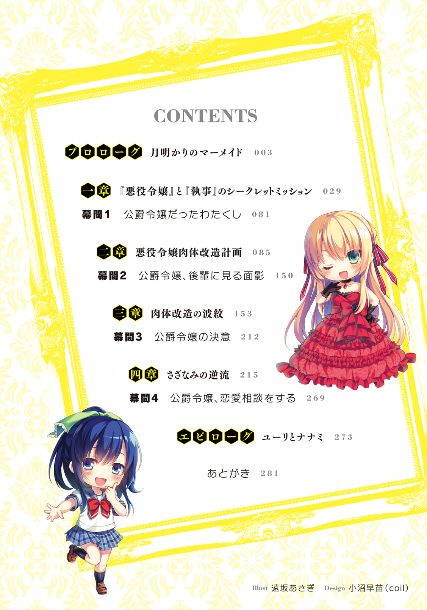
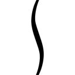
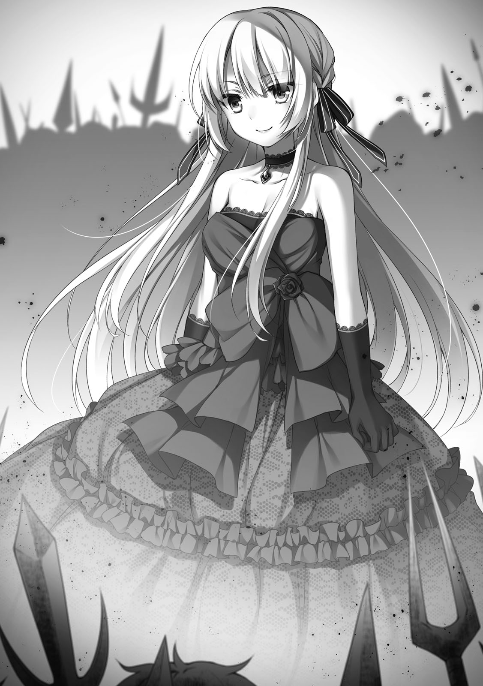

| 転生従者の悪政改革録 | |
| I of転生従者の悪政改革録 | |
| 語部 マサユキ & 遠坂 あさぎ | |

転生従者の悪政改革録
語部マサユキ
角川スニーカー文庫
本作品の全部または一部を無断で複製、転載、配信、送信したり、ホームページ上に転載することを禁止します。また、本作品の内容を無断で改変、改ざん等を行うことも禁止します。
本作品購入時にご承諾いただいた規約により、有償・無償にかかわらず本作品を第三者に譲渡することはできません。
本作品を示すサムネイルなどのイメージ画像は、再ダウンロード時に予告なく変更される場合があります。
本作品は縦書きでレイアウトされています。
また、ご覧になるリーディングシステムにより、表示の差が認められることがあります。
「今日から貴方は私のお気に入りだからね！ これからよろしく!!」
放課後、誰もいないプールサイド。
月光に照らされ、水に濡れた黒髪をキラキラ輝かせて告げた、先輩のたった一言。
その一言を、この瞬間を、そしてこの出会いを──俺はきっと一生忘れない。
俺の通う銀足高校はスポーツに力を入れる一種の運動部強豪校で、取り分け毎年ＩＨ出場者を輩出する水泳部は室内プール完備で一年中泳ぐ事が出来る。
一般的に学校のプールは、暑い盛りの夏場の体育で......人によっては楽しみでもあり、憂鬱でもある施設だろう。
でも一部の生徒にとって、ここは夏だけの授業設備じゃない。
そう。俺たち水泳部員にとって、プールとは修練場であり、地獄であり──戦場だ。
事実、さっきまでこのプールにはコーチの怒号と選手の水音が響き渡っていた。
しかし現在は、中央の第五コースで、たったひとりの女子生徒が必死のストロークを繰り返している。この場にいるのは、泳ぐ彼女──清水七海先輩とその後輩である俺、水町勇利の２人だけだ。
鍛え抜かれ一切無駄の無い、それでいて女性らしい曲線を失わない整った体。
競泳水着をまとい、夕日に照らされた水面を前進する様は、陳腐な表現で恥ずかしいけど、本当に人魚のようでついつい見惚れてしまう。
２人っきりのプールに、先輩が均一に水を搔く音だけが静かに響く。
でも、ただ見惚れているワケにはいかない。
見惚れているだけでは、俺にここにいる価値はない。
今の俺が唯一、先輩のために出来る役割を果たす為、慌てて雑念を振り払う。
先輩直々のお願いなのだ、見逃す訳にはいかない。
放課後の練習後、わざわざ居残ってまで先輩が俺にお願いしたのはタイム測定と、見惚れてしまいそうな泳ぎにケチを付ける事なんだから。
そうこうしている間に、メートル自由形を泳ぎきった先輩が水面から顔を上げる。
「どうだった？」
乱れた呼吸もそのままに聞く先輩。
水滴をまとってこちらを見上げる姿がこれまた美しく、うっかり「最高でした！」と告げたくなる気持ちをなんとか抑えつけ、俺は非情な現実を突きつけた。
「......昨日より２秒タイムが落ちてます。特に後半のダウンが目立ちますね」
「クッ！」
先輩はスイミングキャップとゴーグルを同時にむしり取って水面に叩きつけた。
これは悔しいときについやってしまう、先輩のクセだ。
ゴーグルに隠されていた濡れた勝ち気な瞳と乱れた黒髪が色っぽい。
校内でファンの多い、主に後輩女子から厚い支持を集める先輩は、神聖な部活の場にファンの子たちが入りこむことを嫌っている。
だから均整の取れた先輩が水に濡れ、健康的であるのに妖しく色っぽくもあるこの姿は水泳部の人間しか眼にすることがない貴重なお宝、芸術品だ。
しかし、当の先輩は厳しい目付きで俺を見上げている。
「水町君、どこだ？ どの辺が問題だったんだろうか？」
口調は厳しく目付きは鋭い。普段と比べると二重人格かと思うほど練習中は近寄り難く怖いくらいだが、けして俺に怒っているわけではない。
思い通りの泳ぎが出来ていない事に納得行かないんだろう。
俺は今のところ結果を出せない凡庸なスイマーでしかない。
先輩のような超一流選手に俺ごときがアドバイスをするのは、正直言っておこがましいにも程があると毎回思う。
けれど、今先輩が求めているものは誰にでも言える賛辞ではない。
非情なる現実──結果だ。
俺は、ぐっと力を込めて先輩に再び事実を告げる。
「......ペース配分。 メートル過ぎた辺りからストロークが２回ほど余計だと思います」
メートル過ぎた辺りからストロークが２回ほど余計だと思います」
「......２回」
「疲労のせいでフォームが崩れる悪いクセがまた出てますね。オーバーワーク気味では？」
「フォームが......そうか、またか......」
「はい、やっぱり今のままでは持久力が足りてないんだと思いますよ。先輩、最近ちゃんと長距離の泳ぎ込みやってますか？」
「......確かに最近は短距離の無酸素運動に偏っていたかも知れない」
俺の指摘に自分の不徳を悔やむように呟く先輩。
練習中の先輩は、ほぼ修行僧と言って良い程己に厳しい。しかしそれゆえに追い込み方が間違っている時がたまにあるのだ。
「短距離であっても持久力を付けるためには泳ぎ込みが必要です。明日からでも長距離の泳ぎ込みを練習に組み込まないと......」
「は確かに基本中の基本なのに......指摘されないと気が付かないのだから」
俺の最終通告に、先輩は自省しながら口元をヒクつかせていた。
根本的に真面目で水泳に対してストイックな先輩だが、短距離の練習は大好物なものの長距離の練習は余り好きでは無い。
意外とムラッ気があるせいでペース配分を考えるのが苦手なのだ。
だからこそ今、必要なんだけど。
「清水先輩」
「......なに？」
「今年こそ、頂点を取りましょうね」
「......勿論よ」
俺の言葉で去年ＩＨ決勝で惜しくも僅差で敗れた悔しさを思い出したのか、再び先輩の瞳に闘志が漲る。
「じゃあ明日から一ヶ月、先輩は長距離泳ぎ込みを重点に練習を組みますね。取りあえず手始めに千五（１５００メートル）を５本くらいから......」
「!!......分かっている、受けて立つわよ!!」
そう言って先輩はふいっと俺から視線を逸らして、ボソリと呟いた。
「いじわる」
＊
全体練習後の恒例となりつつある自主練を終えて、俺は校門付近で先輩を待っていた。
別に待ち伏せではない。ストーカーでは断じてない！
先輩本人から『一緒に帰ろう』とお誘いを受けたから、待っているだけだ。
自主練習の頻度は週に２、３回ほど。毎回ではないが、たまに先輩の方から誘ってくれて一緒に帰れるゴールデンタイムがある。
まさに役得、至福の時間！ コレがあると無いとでは明日からの活力が違う!!
ちなみに俺の方からお誘いできたことはない。一度もない。腑抜けだと笑うがいいさ！
プールで別れてからだいたい30分程、不意に校舎の下駄箱付近が騒がしくなった。
騒いでいるのは３～４人、おそらく一、二年の女生徒だと思うが、その中心には俺の憧れの女性、清水先輩が少々困った笑顔で彼女たちの相手をしている。
そんな中、校門にいる俺に気が付いたようで先輩は手を振ってくれる。
「あ、水町君おまたせ！ じゃあゴメンね。今日は先約があるから......」
「あ、そんな」「ナナミお姉様......」
こちらにやってくる先輩に手を振り返そうとした瞬間、先輩の背後で黄色い声を上げていた女子たちが一斉にこっちをギッと睨んだ。殺気を込めた女性の視線は恐ろしい。
『何故貴様がそこにいる』『お姉様と先約だと!? 身の程を弁えろ!!』『貴様など私たちのお姉様に相応しくない......』
どうやら一緒に帰ろうと画策していたのだろう彼女たち。
言葉も発していないのに、そんな心の声がだだ漏れで聞こえてくる。
誘ってくれたのは先輩の方なんだけど......と思わない事もないが、その事実は決して口にしてはいけない。そんな事をしたら多分俺は、明日まで生きていられない可能性が高い。というか間違いなく闇討ちとかされちゃうね。
それに、取り巻きの少女たちの視線で、少々浮かれ気味だった頭が少しだけ冷えた。
『先輩に相応しくない』
それは彼女たちに言われるまでもなく正しい事だ。
成績は非常に優秀で、教師からの信頼も厚く、スポーツも万能。特に幼いころからずっと続けてきた水泳は、昨年度ＩＨ３位の成績を収めている。そのうえ、水泳をやっているはずなのに高く結ったポニーテールは黒々と輝いており、すらっとしたスタイルは遠くから見ても目をひく。
容姿端麗、才色兼備、完全無欠──こういった四字熟語で表現出来てしまうのが、清水先輩という人なのだ。
対して俺は平々凡々という言葉が体を成しているような人間である。
水泳部に入ったのも、俺の通う銀足高校は何かしらの部活に所属することが校則で定められていたからだ。新しいスポーツをやるよりは幼い時から続けていた水泳のほうがいいだろうという、惰性で入部を決めた。
けれど、惰性で続けられるほど、この高校の水泳部は甘くなかった。
予想よりも遥かにキツイ練習はまさに地獄で、俺のように半端な気持ちだった連中は一月も持たずにフェードアウトして行った。
俺だって何も無ければこの地獄から早々に脱出を図っていたであろう。
ただ、俺は出会ってしまったのだ。
カッコよく、綺麗で、凛としていて............可愛らしい先輩に。
水泳部を辞めてしまえば、俺と先輩との接点なんてものはすぐに無くなってしまう。
だから、なんとかそこに縋って、結果として俺はいまここにいる。
でも、先輩の隣に並んで立てるような誇れる部分は未だ無いままだ。
そう、相応しくないのだ。
今の俺のままでは、先輩の隣が。
「......ち君、水町君！」
「あ、はい......！」
「どうしたの？ 珍しくぼーっとしちゃって。プールサイドでずっと計ってもらったから体冷えちゃった？ 大丈夫？」
心配そうに俺を覗き込んでくる先輩に、申し訳ない気持ちになる。
自分のほうが泳ぎっぱなしで疲れているはずなのに、常に気遣いを忘れない先輩の姿にまたひとつ気持ちが上向く。少なくとも今、物理的に彼女の隣にいるのは自分なのだから。
今は堂々と並び立つには相応しくないかもしれないけど、いつかは。
そう決意をして先輩に「なんでもないです」と告げた。
先輩は不思議そうにしていたが納得はしてくれたらしく、そのまま薄暗くなりだした田圃のあぜ道を先陣切って歩いて行く。が、唐突に振り返って「あ、ちょっと、水町君に相談したい事があるんだけど......」と言い出した。
「相談......ですか？」
「うん、その......ね、こんな事を相談できるのは君しかいなくて......」
そう言う先輩は真剣な眼差しで夕日に晒されているせいもあるかもしれないが、それでもはっきりと分かる程に......真っ赤だった。
そんな先輩の様子に俺は、先輩との下校に浮かれかけていた頭を、再び急速冷凍させた。
背筋には氷でも突っ込まれたみたいに冷たいものが走る。
顔を恥じらいで赤らめ、親しいと思っている男子に相談する女子の図。
俺は、こういったシーンをよく知っている。
これはドラマなんかでよく見る、男性を自殺に追い込む台詞トップ10（私的偏見）が襲ってくる合図だ。
『私ね、○○君が好きなの。こんな事君にしか相談できないし......協力してくれない？』
もし現実にこんな事を〝意中の女性〟から言われたとしたら？
死ねと言われたようなものだろう。少なくとも俺は首でも吊りたくなる。
清水先輩という人は、男女問わずに交友関係が広いが、やたら気っ風が良かったり男前だったりするので、彼女を〝女性〟として見る男子は正直少ないと思う。
ライクの意味で好きな先輩の名前としては良く挙がるが、憧れの先輩やお付き合いしたい先輩として名前が挙げられる事はほとんどない。
そういうこともあって、俺はライバルが出現することはしばらくないだろうと高をくくってしまっていた。
これはその油断が招いた事象だというのか......！
冷静に考えてみれば当たり前だ。
たとえ男前と思われていても、男子の前で胡坐をかいてしまうような人だったとしても、先輩の人柄は素晴らしいし、笑った顔は可愛く、競技に挑む姿は凛々しく美しい。
油断する暇なんか無い事は自分が一番知っていたはずなのに！
まさか......そんな!!
最悪の未来を予見して固唾を飲む俺に、先輩は躊躇いがちに重い口を開いた。
「実はね......」
心臓が過去最大級の音を響かせる。
もはや先輩の声を聞き取る前に、このまま心臓麻痺で死んでしまうんじゃないか！
死の宣告を待つつもりで、先輩の言葉の続きを待った。
「......進路の事なんだけど」
「そうですか！ 進路ですか！ それは大変だ！ 先輩も三年だし、もう決めなきゃですもんね！ 一生を左右する一大事ですもんね!!」
「......なんでそんなに晴れやかな笑顔なのよ」
勝手な未来予想で絶望しかけていた俺の安堵など知るよしも無い先輩は、その反応が気に障ったようだ。
進路の事だって十分に真剣な相談、確かにこの反応は無いな。
「すみません......気にしないで下さい......気にしたら負けです......」
俺は慌てて取り繕って表情をニュートラルに戻す。危なかった......。
「でも、進路の相談って......本当に俺で良いんですか？ 俺は後輩なんで正直なところ良いアドバイスとかできないと思うんですけど......」
迷惑だとか言いたいのでは無い。むしろ相談を持ちかけて貰えるのだから光栄な事なのだが、俺は後輩で、尚且つ異性だ。
こういった相談は両親や教師などに持ちかけるのが常道。それが憚られる時は、まず同性の友人から、もしくは同い年か年上の人間にというのが定番だろう。
幸いにも先輩は男女問わずに同世代の友人が沢山いるのだから、わざわざ『後輩男子』の俺に相談しなくても......という疑問が浮かぶ。
そんな俺のニュアンスを汲み取ったようで、先輩は憮然としていた表情を崩した。
「だって校内で......ううん、私の周りで君以上に頼れる人はいないから」
「え？」
思わず聞き返す。
だってそうだろう。先輩の周りには男女問わずいろいろな人がいる。
その中で、大好きな人から『頼れる人』と言われる事はもの凄く名誉な事じゃないか。
先輩は笑顔で、だけど眉を顰めてちょっと申し訳無さそうに言う。
「自分の練習だってあるのに、いっつも相談に乗ってくれて。私の泳ぎを常に見てくれて......去年私がＩＨに出場出来たのも水町君のおかげだし」
「い、いや......そんな事は......。それは清水先輩の努力の賜物であって......」
事実その通りなのだ。
俺がしたのは泳ぎの問題点を指摘したり、練習メニューに口出ししたり、練習後の体のケアをしたりするくらい。実際に努力して全国に行ったのは先輩である。
しかし慌てて否定する俺に先輩は口元をニヤリと上げて見せた。
「謙遜したってダメ。ＩＨ出場選手はみんな君に世話になったって感謝してるんだよ？」
「え？」
「部長も、カジ君も、あっちゃんもさっちゃんも......みんなみんな『水町の〝観察眼〟にはお世話になった』って......勿論私もね」
「............」
予想外のことに、言葉も出ない。
マジかよ......みんな同じ部内でも雲の上の人たちだと思っていたのに......。
何だか急に恥ずかしくなってきた。
「その上私は進路相談までしようとしているんだから。頼りない先輩で申し訳ない」
そう言って頭を搔きつつ笑う先輩の横顔は非常に良い笑顔だ。
ああ、かなわないな......この人には。
いつだって俺の事を一言で救ってくれる。
何の衒いも無く、輝くような笑顔で、無意識に......。
俺は覚悟を固めて、「俺でよければ......」と先輩に話の続きを促した。
「ありがと！ あ、難しくとらえないで気楽に聞いてね。相談とは言ったけど、考えをまとめたいというか愚痴というかなんというか......聞いてほしいだけなんだ」
そうは言われても、他ならぬ先輩の相談、自然と気合も入る。
「実はさ、進路に関して具体的に見えている道筋が今は二つあるんだけど......」
「二つっていうのは？」
「進学か就職。去年のＩＨの成績が評価されたみたいでね、行きたいなぁって思ってた学校への推薦貰えそうなんだよね」
「先輩、成績も良いですからね」
「ふふ、まあ頑張ってきて良かったとは思うんだけど......で、もう一つは就職して実業団に入る道なんだよね。本格的にオリンピックを目指さないかって声をかけてくれる企業もあってさ......」
オリンピックだと！ 思っていた以上のスケールの大きさに声が裏返る。
「す、凄いじゃないですか！」
しかし、先輩はというとなんでもない事のように困ったように笑うだけだった。
「まあ評価して貰えるっていうのは嬉しいんだけどね。親はさ、やっぱり進学してほしいみたいなんだよね」
「まあ、そうですよね......」
俺が先輩の親御さんでも進学してほしいと願う気がする。
確かに最短でオリンピックを目指すなら実業団だが、大学に進学しておいたほうが今後何かと都合はいいはずだ。
正直ただただ『スゲ～』としか言えないのだが......そこまで話した先輩の表情は何やら悩ましげに見える。
何を悩んでいるのか分からず先輩の言葉を反芻してみて、ああ、なるほどと思った。
『進路に関して具体的に見えている道筋が今は二つある』と先輩は言っていた。
けどおそらく、本当に悩んでいる事はそれじゃない。
先輩はこの二つの道のどちらを選ぶかで悩んでいるワケではないのだ。
何に対して先輩が悩んでいるのか思い至った俺は、先輩の目を真っ直ぐ見て告げた。
「具体的には見えていない道を選ぶべきなのかを迷っているって事ですか？」
「!!」
途端、先輩の瞳が驚愕に見開かれた。
「な、何で分かったの!? 私まだ何も......」
「......あれだけ言葉尻にヒントがあれば分かりますよ。先輩分かりやすいですし」
俺が苦笑交じりに言うと先輩は感心したとばかりに人差し指を口元に当てる。
「さすが『神魔眼のユーリ』。貴方の観察眼はやっぱ凄いわ」
「......なんですか？ その中二くさい二つ名は」
「ん？ みんなで休憩中考えたの。観察眼に優れた君の別名。他にも『影のコーチ』『水辺の魔術師』なんてのもあったんだけど......最終的に全てを見通す目で正しい方角を示す千里眼の男、神魔眼のユーリに落ち着いたんだよ？」
「貴重な休憩時間に無許可で恥ずかしい二つ名を考えんで下さい!! しかも神なのか魔なのかハッキリしないし!!」
命名の経緯で水泳部だし魚の目って意見もあったらしいけど、それじゃあ何だからとカッコ良さ気な神と魔を合わせたんだとか......って知らんがな！
それからしばらく無言で歩いていた先輩だったが、意を決したように顔を上げた。
「私ね......ちっちゃい頃からの夢があるんだ」
「夢......ですか？」
「私、アクション俳優になりたいの！」
初耳だった。先輩とは校内でも親しくして貰っている方だが、考えてみるとあまり未来に関する話を聞いた覚えがない。
だけど俺にとってはこの答えは意外でもなかった。
「あ───なるほど。先輩、変身ヒーロー大好きですもんね」
「............何で知ってるの？」
先輩は自分の趣味を俺が知っていた事に驚いたようだ。
カッコ良さや男前であるというイメージが先行する先輩は、実は日曜の朝の時間帯には録画を欠かさないらしい。
「以前に聞いた事があります。日曜の練習で『予約忘れた！』って更衣室で大騒ぎしていたとか何とか」
「さっちゃん!!」
真っ赤になって親友の名を叫ぶ先輩。それだけで犯人を特定したらしい。
「いけませんよ、隠しておきたいならあの人にバラしちゃ。幸子先輩義理堅い人だけど口は軽自動車より軽いですからね」
しばらく羞恥に震えていた先輩だったが、落ち着いたのか諦めたのか、話を続ける。
「は～......でもね？ 親も先生も進学か就職を勧めるんだよね。勿論みんな私の事を心配して現実的な助言をくれてる事は、ちゃんと分かってるんだけど......」
そう言って目を伏せた先輩を俺はじっと見つめていた。
不確かな夢を選びたい自分と、確実な道を歩ませたい周囲との板ばさみ。
先輩は現在その二つで悩んでいるのだ。
先輩の悩んでいる事は大なり小なり、いつかは誰にでも立ちはだかる問題だ。
......一般人としてはオリンピックを目指すのも十分現実的じゃないんだけどな。
進路一つとっても、やっぱり先輩はスケールが俺のような凡人とは違う。
来年同じように自分が進路で悩んだ時、果たして先輩のように夢と現実で板ばさみになる程真剣に悩む事が出来るのだろうか？
だいたい、アクション俳優のなり方ってどうやるんだ？
あれも何か養成所みたいな所に入門して訓練して......とかだっけか？
そんな事を思案していると、横目で見えた先輩の顔は実に不安そうだ。
普段は余り見る事の無い先輩の表情に、俺は何を言おうかと考えて......止めた。
『大変だ』とか『苦労する』とかの現実的な言葉が欲しいなら最初から両親や教師に相談するだろうし、反対に『凄い』とかの夢想であるなら友達との雑談を選んだはず。
頼りになると言ってくれた先輩の為に〝後輩男子〟である俺が言うべきなのは......。
「難しい話ですけど......最終的に決めるのは先輩自身ですし、俺が無責任に口を出せる事は無いと思います」
「そう......よね」
突き放すようにそう言うと先輩は途端にシュンとしてしまった。
瞬間的に罪悪感に押し潰されそうになる気分を撥ね飛ばし、俺はあえて笑った。
「でも......俺はどの先輩も見てみたいです」
「んえ？」
先輩は妙な声を上げて目を丸くする。
後輩として偉そうな事は言えない。俺が言えるのは〝俺自身の願望〟だけだ。
「キャンパスライフを送る華の女子大生の先輩も、ストイックにオリンピックを目指す先輩も、カッコ良く変身する先輩も......」
「水町君......」
そんなのは先輩には直接関係無い勝手な願望でしかないだろう。
でも、どの先輩であっても俺は見てみたいと思えるのだ。
そして......「どの先輩でも俺は応援しますよ？」
俺が自身の〝最大の願望〟を言うと、キョトンとしていた先輩の表情がいつもの晴れやかな笑顔へと変わる。
やっぱり先輩はこうじゃなきゃ。
「なんか君の方が欲張りよね。私の将来の話なんだけど？」
「だって、ガンバルのは俺じゃなくて先輩ですし？」
「あ！ コイツ!!」
俺が冗談めかしてそう言うと、先輩はガバッと俺の首に抱き付いてホールドをかました。
うわ！ ちょっと先輩いかん!! 柔らかいのが顔に!! 顔にいいいい!!
瞬間的に訪れた桃源郷を彷徨う俺の耳に、先輩がポツリと零した言葉が聞こえた。
「やっぱり頼りになるね......君は」
俺と先輩の帰り道は途中までは一緒だが、15分ほど歩いたところでそれぞれの家路につく分かれ道がある。その目印は、いつから建っているのかも分からない古めかしい神社だ。
ここには水晶玉──宝珠が神様として祭られている。
どんな神様なのか、どんな由来なのかは全く分からないけど、少なくとも俺のじいちゃんが生まれた頃にはもう既にその神社はあったらしい。地元に住む俺たちにとってかなり身近で、何かお願い事があるときはここに来るという人も少なくない。
かく言う俺もその一人なワケだけど。
けど、先輩と帰る時はこの神社は、至福の時間が終わる目印でしかない。
毎回、もっと遠くにこの神社があったら......などと勝手なことを考えてしまう。
まあ、仮にここより遠くにあっても同じ事を考えちゃうんだろうけど。
いつもはここで離れていく先輩の背中を眺めるところなのだが、今日は違っていた。
先輩は神社の手前で足を止めて元気良く振り返り、ニッコリと笑う。
「ねえ、お参りしていかない？」
「は？ 何でです？」
「ガ・ン・カ・ケ・よ。......私がカッコ良く変身する為に、まん丸な神様にさ」
宝珠をまん丸な神様と言い、照れたように微笑む先輩の姿を見て俺は確信した。
覚悟を決めたら即断即決というのは、実に先輩らしい。
先輩が道を決めたなら、俺に言える事は色々な意味を含めて一つだけだ。
「勿論、お供させてもらいます」
それほど長くない階段を上って社の前に立った先輩は「今日は大奮発」と五百円を取り出して賽銭箱に投げ込んだ。
先輩に倣って百円玉を賽銭箱に投げ入れ、拍手を打った俺が意識していたのはたった一つの願望......いや、あれは〝欲望〟だったのだ。
『先輩の夢を傍で支えたい』と......。
そうして二人で手を合わせた時、異変が起こった。
社に祭られている宝珠が突然強烈な光を放ったのだ。
「水町君!? 何なのコレ!?」
視界の全てが真っ白に塗りつぶされる中、聞こえた先輩の悲痛な叫び声。
俺は先輩の置かれている状況にギョッとした。
なにやら大きな光に先輩が飲み込まれそうになっていた。恐怖に顔を歪ませた先輩がこっちに向かって手を伸ばしている。
「先輩 」
」
俺は慌てて先輩を引き寄せようと力強く手を摑んだ。
その瞬間、明らかに現実的ではない、ここでは無いどこかの何か......そんな映像が確かに見えた。
それは一人の女性の姿。
高級なドレスを着こなし、勝ち気そうな瞳を輝かして不敵に笑う。
彼女の周囲には大勢の剣や槍などで武装した人々がいるにもかかわらず、それでも表情は崩さない──決して何者にも屈さない凄絶な美しさを湛えた姿があった。

声が聞こえる......こんな状況でも笑みを崩さない彼女に恐れを抱く震える声が。
『だ、第三王子の婚約者にして稀代の悪魔女ナーミィ・シュライエン公爵令嬢!! 虐げられ、搾取され続けた我々の恨みと怒りを思い知るがいい！ 覚悟!!』
その言葉に同調して怒声を上げる人々。そんな状況でも女性は何も言わない。
恨み言も言わず、抵抗もせず。恐怖も、憤怒も、哀惜も、何一つ顔に浮かべる事は無く......彼女は恨みの篭った全ての刃を、その小さな全身に受け入れた。
おびただしい数の刃を全身から生やし、その美貌が血で穢れ、激痛で絶叫してもおかしく無い。そんな最期であるはずなのに、彼女は──変わらずに笑っていた。
ただ、最後にまるで安心したかのように一言だけ呟いた。
『ああ......やっと、終われる』と。
「何だ......コレ？」
「水町君!?」
先輩の声にハッとして俺の意識は突然の白昼夢から引き戻された。
だが先輩の体はドンドン膨張する光の中に飲み込まれ始め、次第に俺まで取り込もうとしているのが分かる。まるでこの光が生きているように。
得体の知れない人知を超えた、人間ではどうする事も出来ない何か。
そんな事が目の前で起こっている事だけは分かる。
先輩もその事をとっさに感じ取ったのか、慌てて叫ぶ。
「手を放して水町君！ 何だかよく分からないけど、私のせいで君まで巻き込まれる!!」
その顔はさっきよりも悲痛に見えた。
まるで自分のせいで俺を巻き込むのは死ぬより辛いかのように。
それは人を思い、凛としてカッコいい曲がった事の嫌いな先輩らしい言葉かもしれない。
でも俺はより一層両手に力を込めて握る。
「何してるの水町君!? 早く手を......」
「......幾ら先輩の頼みでも、それはさすがに俺に対して失礼ですよ！」
巻き込まれる？
何がなんだか分からないけど〝先輩に巻き込まれる〟だって？
上等じゃないか!!
その程度でこの手を放すのか。やっと摑めたこの手を。
先輩の隣を諦めるのか!?
大切な人を見捨てるのか!?
ありえない......あるワケがない!!
俺の力で戻せそうにはない......そう判断した瞬間、俺は自ら光に飛び込んで先輩を抱き締めた。
「み、水町君!?」
突然の事に先輩から戸惑いの声が上がる。だけど構わない。
「この人から俺を離そうとする奴は、たとえ神でも悪魔でも、運命ですら絶対に許さない！ どこのどいつが相手でも、俺はこの人だけは死んでも譲らない！ 覚えておけ!!」
俺は一体誰に向かって宣言したのか、自分でもよく分からなかった。
ただ、一言だけ......何やら苦笑交じりに〝分かった分かった〟と聞こえた気がした。
「明日、退部届を出そう......」
先輩との出会いは俺がそんな後ろ向きな決意をした高一の春だった。
その頃の俺は強豪校ゆえに練習に付いていけない不甲斐なさと、過酷な練習を経ても一向に伸びないタイムに水泳部を辞めようかと本気で悩んでいた。
あの日、消灯後のプールに忍び込んだ俺は一つの決意をしていた。
『今日少しでもタイムが縮まないのならば水泳部を辞めよう』......と。
そして忍び込んでまで測定した自分のタイムに......泣きそうになった。
俺には叶えようもないＩＨ出場を、当たり前に目指す先輩方がこの部にはゴロゴロしていて、血反吐を吐くような練習を日々繰り返している。
勿論同年代でもそんな先輩方に付いていける連中はいる。
でも、付いていけない新入部員は早々に辞めていった。
俺はそんな二つの流れに乗れず、どっち付かずの中途半端な所にいるのだ。
練習に付いていけないのに在籍している半端者として。
先輩方にとっても、そして優秀な同年代にとっても俺は邪魔でしかない。
少しでも早くこの場から、水泳部から立ち去ろうと出口に向かいかけた時、誰もいないはずの暗いプールサイドに人の気配を感じたかと思えば、女性の驚いた声が聞こえた。
......マズイな......顧問に見つかったか？
俺がそんな事を考えて視線を投げた先には、一年上の先輩......清水七海さんが競泳水着姿で一人佇んでいた。
「清水......先輩？」
照明が消えているプールサイドで、頼りになるのは窓から差し込む月光のみ。
俺という予想外の先客に驚いた先輩は月光に照らされて、とても妖艶で神々しかった。部内でもＩＨ出場選手の先輩は別格で、俺ごときが近付いてはいけない圧倒的な存在感がある。
「練習時間はもう終わっているよ。何をしてるの？ 水町君」
「え？」
「あ、あれ？ 違ったかな？ 水町勇利君......だよね？」
「え、ええ......そうですけど......」
「良かった間違ってなくて。根性無しが辞めていくのに必死で頑張る新入生がいたから覚えがあったのよ」
「え!?」
「新入生が練習に付いていけないのは当然なのに、練習後も居残り練習とは......やるね君。でも本来もうプールの使用時間は過ぎているよ？」
俺は単純に驚いていた。水泳部の女子の中でも一番全国に近い先輩は言うなればトップの中のトップ、練習に付いていけないような俺の名前など知らないと思ったのに。
まさか、雲の上の先輩が俺の事を見ていたなんて。
「そ、そう言う先輩も......練習はもう終わってますよね」
「む......、さっきの練習じゃ、納得出来なかったとこがあったから......」
意外だった。
練習ではあんなに速く綺麗な泳ぎをする先輩でも、納得がいっていなかったなど。
しかし先輩の言う通り消灯後のプールの使用は原則禁止だ。
理由はどうでも今ここにいて、しかも泳ぐのは規則違反以外の何物でもない訳で......。
そんな風に思っていると先輩はパチンと手を叩いた。
「じゃあこうしよう！ 私のタイム測定をお願い。そしてここは一つ共犯という事で」
「は......はあ、まあ......構いませんけど......」
そんな流れで俺は先輩のタイムを測定する事になった。
美人だがクールな外見で、更に練習中はより厳しい顔で泳ぐ先輩は凄く近寄り難い人だと勝手に思っていたので、ギャップに圧倒されていた事もある。
そして飛び込み泳ぎだした先輩は流石全国選手、泳ぎのレベルが格段に違う。
まるで水面を滑っているかのように泳いでいく。
しかし泳ぎきった先輩は俺からストップウォッチを受け取ると不満げに眉を顰めた。
「......やっぱりダメだね。何が違うんだろうか」
ブツブツと呟く先輩だったが、不意に顔を俺に向けた。
「水町君。君は私の泳ぎを見て......何か思わなかったか？」
唐突にそんな事を言われても困ってしまう。
そもそも俺は練習にも付いていけない半端者、全国レベルの先輩の泳ぎに言う事なんて。
「単純に〝速い〟って思いましたけど......」
「いや......そういうことじゃない。もっとこう、何かおかしいとか、ほら！」
「ほらって言われても......あ、でも」
俺が何となくだけど、さっきの先輩の泳ぎで気になった部分を思い出して言い淀んだ瞬間、先輩は食いついて来た。
「何！ 何かおかしいとこあったの!? この際何だって良いから言ってくれないか!?」
何と言うか俺がそんな事を言うのは失礼なんじゃないか？
でも先輩のあまりに必死な表情に、俺は気になった部分を思い切って言ってみた。
「......後半のターン直後の泳ぎ始めと、スパートをかける瞬間ですけど......微妙にフォームが崩れている気が......リズムが崩れてストロークが多くなっているような......」
「後半のフォーム？」
「いえ、すみません。俺なんかが分かったような事を......」
俺の指摘に先輩は表情を変えて......ガッシリ俺の肩を摑んだ。
「そ、それだ！ 言われて初めて気が付いたが、思い返すと身に覚えがある!!」
それから急遽、もう一本タイムトライアルをしたら......先輩は練習後の疲労困憊な状態にもかかわらず......タイムを二秒も縮めてみせた。
「ウソ！ 本当に!!」
先輩はしばらく信じられないとストップウォッチを眺めていた。
俺だって信じられない気分だ。
俺の適当なアドバイスだけでいきなりタイムを二秒も縮めてしまうのだから、やはり全国の選手となれば実力が違う。
しかし、そんな事を考えていると先輩はうわ言のように呟いた。
「凄い......スゴイ......スゴイ!!」
やがてその声は爆発したように喜色全開でプールサイドに響き渡った。
「凄い水町君！ 君の一言で二秒だ二秒!! ありえないよこんなこと!!」
「俺はフォームを指摘しただけです。このタイムは先輩の本来の実力ですよ」
それは厳然たる事実、俺はちょっとだけ口出ししたのみで今日の二秒は日頃の先輩の努力の賜物以外の何でもない。
しかし先輩は興奮気味に詰め寄って来る。ちょ......近いんですけど!?
「それを指摘できるのが凄いと言っているんだ！ 私なんて自分の事なのに全然気が付かなかったんだから！」
「そ......そんな事は......」
戸惑っていると先輩は俺の両手を摑んで笑った。
「また今度、私の泳ぎを見て貰えないかな？ こんな人が身近にいてくれたとはね！ もう専属のコーチになって貰いたいくらいだ！」
「いや、あの......」
「今日から貴方は私のお気に入りだからね！ これからよろしく!!」
あの日先輩は俺という存在を認めてくれた。
俺なんかが水泳部にいても良いんだと言ってくれたのだ。
あれが無ければ俺は確実に水泳部を辞めていたはずだった。
我ながら単純な思考だと思うけど、あの日以来俺はドンドン先輩に惹かれて行った。
先輩、貴方は知らないだろう......俺があの一言にどれほど救われたのか。
どれほど貴方に感謝しているか。
そして気が付いていないでしょうね......俺がどれほど貴方が好きなのかも。
厳しい練習を繰り返す真剣な眼差し。
努力が実りタイムを更新した瞬間の耐えきれずこぼす微笑み。
本当に心を許した人にしか見せない屈託ない、少し子供っぽい表情。
全ての先輩の表情が俺の中でかけがえのない大切な記憶。
先輩の隣に相応しい〝何か〟。
それを手にした時にこそ、その時には......。
＊
「夢......か」
とても懐かしく、そして最も大切な思い出、先輩の笑顔に救われた日の事。
初心を忘れない、とは良く言ったものだ。
「......さて」
今年こそはＩＨに出場して、そして先輩に......そう思って立ち上がったその時、俺は妙な違和感を覚えた。
「あれ？ 俺ってこんなに目線......高かったっけ？」
先輩よりも僅かに低い身長がコンプレックスな俺は、妙に高くなった目線のせいで奇妙な感覚に陥る。
そもそもおかしいのは目線だけじゃない。俺は布団派なのに今立ち上がったのは間違いなく木製のベッドだ。
そこで気が付く。ここが自分の部屋では無い事に。
「？？？ どこだ？ ここ？」
部屋自体は洋風な造り。家具などもこれまた洋風で机に姿見、衣装ダンスに和の香りは無く、『西洋の屋敷』、そんな単語が浮かんでくる。
部屋に一つだけある窓から外を眺めると、ここは二階らしくレンガ造りの町並みと石畳の道が眼下に広がっている。
道行く人々は茶髪や金髪で黒髪の人はほとんど見られないし、向こうには馬車で干し草を運んでいる農民の姿も見えて、なんというかヨーロッパな風景というか......。
「......俺、海外遠征中とかだったっけ？」
咄嗟に頭に浮かんだのは、去年強化選手の枠から外れていたのに先輩と顧問に引っ張っていかれた海外の強化合宿。だけど今は一学期の真っ最中、あれは冬休み中だったから行けた事に思い至ってその可能性を振り払う。
疑問が頭を占める中、俺は不意に部屋の姿身に映った姿を見た瞬間、全てが吹っ飛んだ。
「ダレ......コレ......？」
俺は自分で言うのも何だが短髪、身長もそして顔も平均値の......普通な男だ。だから、鏡にはそんな平均的な姿が映るはずなのだ。
こんな長身・細身で、アイドルと言われりゃ頷くだろう涼やかな瞳のイケメンが映るはずは無いのだ。
......でも、俺が腕を動かすとイケメンの腕も動く。しようと思った瞬きを繰り返す。ニッコリと笑ってみるとテレビに出られそうなスマイルが浮かぶ。
そして......結論に達した鏡の中のイケメンは笑顔はそのままに......青くなった。
どう考えても......このイケメンは俺だった。
唐突に、マジで起きたらこの状態なのだ......。
理解が及ばない......つーか訳が分からん！
「な！ なんじゃああああこりゃああああああ!!」
早朝屋敷内に響き渡る大絶叫。その声は無駄に響き渡ったようで朝にもかかわらず屋敷のそこかしこからガタガタと驚いた音や「何だ？」などの声が聞こえてくる。
そして一番近くの部屋からバタバタと慌てた様子で、少女がノックも無しに扉を開いた。
「お兄様どうなさったの!? 急に大声で......」
その少女は銀髪で、幾らか幼さの残る顔立ちだが、美少女と言って過言じゃないだろう。
......ちゅうか先輩辺りが見つけたらヤバイな、あの人〝可愛い〟で暴走するから。
そんな少女は心配そうにこっちを見ている。
当然だが俺はこんな美少女は知らない、初対面のはずだ。
......にもかかわらず、俺の口から出たのは明らかに兄として少女を知っている言葉だった。
「......す、すまないメ......ルティ。何と言うか......その、夢見が悪くてね」
「夢ですか？」
何事も無かった事に妹メルティは安心したような顔になった。
「驚きました。お兄様のあんな叫び声。いつも冷静沈着なお兄様があんな声を上げるだなんて......」
「俺だって人間だぞ？ 恐怖も普通に感じるに決まっている......」
「俺？」
メルティはそう言って小首を傾げた。
その仕草に普段の一人称が『私』である事に思い至り、『しまった』と思う。
しかし何とか訂正しようと思った時、メルティは頰を赤らめて呟いた。
「ワイルドなお兄様......素敵」
「え......？」
「ああ！ いえ何でもないです!! お母様がもう直ぐ朝食が出来るとおっしゃっていました。そろそろリビングへ下りてきて下さい」
「あ、ああ......ありがとう......」
何故か慌てた様子で出て行ったメルティが踵を返してパタン......と扉を閉めた瞬間、俺はベッドに腰を下ろして頭を抱えてしまう。
......ありえないが、今ので理解出来た事が幾つかある。
今の状況は俺がこの体に〝入った〟状態って事で、すなわちこの体には元々の『持ち主』がいるのだ。
混乱する思考を無理矢理押さえ込んで〝頭の中身〟を見つめ直してみる。
そうすると不思議な事に自分の記憶の他に、もう一つの記憶があるのだ。
さっき妹の名前を咄嗟に言えたのもこの記憶のおかげだろう。
ただ、この記憶には本人の感情──人格が無い。
詳しい理屈は分かりようが無いが......肉体と魂は別の物って奴だろうか？
この『ユリウスの記憶』はいわば記録、日記のような物だろうか？
この体の持ち主は『ユリウス・シュピーゲル』。
王立サルヴァドル学園の三年生......なんと俺より一年年上だ。
この国、魔導王国サルヴァドルに仕える貴族、シュピーゲル男爵家の長男らしい。
......サルヴァドル王国、そんな国あったっけ？ それに何だ魔導王国って？
幸いなのかそうでないのか、この記憶からは感情や人格に関わる事が分からない。
例えばさっきの妹メルティに対してユリウスがどう思っていたかは分からない。
と、そこまで思い至って......俺は全身から嫌な汗が噴き出すのを感じる。
俺は震える体を押さえつつ......人差し指を立てて呟いてみた。
「灯火......」
その瞬間、指先に灯るライターの火くらいの小さな炎。
断っておくけど当然ライターなんか俺は持っていない。
指先の小さな炎は感動よりも恐怖を湧き上がらせた。
「やべえ......ここ......日本どころか......地球ですらねぇ......」
ただ人格が入れ替わっただけじゃ無かったのだ。
俺は世界を隔てて〝魔法が存在する世界の男〟と入れ替わってしまったようだ。
............スマン妹よ。兄ちゃん、もっかいやらかします。
「なんじゃあああああこりゃあああああああ」
リビングに下りて行くと既に席に着いている両親と、さっき部屋に来た妹の姿が見えた。
みんな一様に俺を心配そうな目で見ている......心配かけてゴメンナサイ。
「ユリウス、今日はどうかしたのか？ 具合でも悪いとか......」
そう言って顔を顰める金髪碧眼のダンディなおっちゃんはシュピーゲル男爵家の当主でありユリウスの実の父だ。
その隣で見事な長い銀色の髪をなびかせているのは男爵夫人の母。
......なんというかユリウスは間違いなくこの二人の子供なのだろうなと納得出来る程、二人とも整った顔立ちだ。
「いえ......何でもありません父上。少々面妖な夢を見てしまいまして......」
「面妖な夢であのような絶叫を？ お前でもそんな事があるのだな......」
妹もそうだったけど父親にもそんな事を言われるとは......どれだけコイツは普段から冷静沈着で通っているんだ。
「あなた！ ユリウスが幾ら普段冷静な子でも、それが全てでは無いでしょう？」
母がそう諫めると父はバツが悪そうに頭を搔いて苦笑を浮かべる。
「......確かにな、すまなかった」
どうやら家族仲は至って良好のようだ。
一応は貴族であり爵位を持ってはいるが、シュピーゲル家は地位的には低い男爵家。
はっきり言えば財産もそんなにゆとりは無く、屋敷で雇っているメイドも熟年のベテランが２人のみ。
ただそのせいか、それともおかげか......父も母も貴族特有の選民意識など欠片も無い穏やかな気質で、母に至っては家事全般をメイドさんと一緒になってやっているくらいだ。
今日の朝食だって母も一緒になって作っているらしい。
当然その子供の二人もそんな感じで、妹のメルティは品行方正、学業も非常に優秀で将来を今から有望視されているくらいだ。
にもかかわらず、それを鼻にかける事無く兄であるユリウスを慕っているという......まさに妹の鑑と言っていい。
............マジで元の世界の俺の妹にも見習って欲しいくらいだ。
そんな感じで上流階級特有のドロドロした骨肉の争いとは無縁であるシュピーゲル家には今日も平穏で穏やかな時間が流れていた。
毎朝白米と味噌汁の俺はパンとコーヒーの朝食に最初は違和感があったものの、パンを口に含んだ途端その美味さに驚いた。
コレがなんと自家製らしくてシュピーゲル家の厨房のレベルの高さが窺える。
しかし、和やかな朝食を終えると、父が急に表情を引き締めて言った。
「......ユリウス、仕度が終わったら公爵家へ出発する。そのつもりでいるように」
「......ハイ」
その言葉で空気が凍り付いた気がした。
母は心配そうだし、メルティはあからさまに不満げで、父は申し訳無さそうに続ける。
「シュピーゲル家としてお前には苦労をかけるが......」
「お父様！」
その瞬間、メルティが我慢の限界とばかりに声を荒らげた。
「何ゆえお兄様が行かねばならないのです!? 〝あの方〟に付くのは何もお兄様でなくても良いはずでしょう!! あの方に縛られなければお兄様は......」
「口を慎みなさいメルティ！」
そんなメルティを父は打って変わった厳しい顔で窘めた。
「あの方は我がシュピーゲル家が仕える公爵家の令嬢だぞ。代々執事として仕えるシュピーゲル家の者が悪し様に罵る事は、私が許さん！」
父がキッパリそう言うと、メルティは非常に悔しそうに歯嚙みして......座りなおした。
メルティがそんな事を言うのはあくまで俺、ユリウスの為だ。兄が辛い思いをする事が妹にとって耐え難い事らしい。
不満そうなメルティの頭を撫でてやると、メルティは驚いたように目を丸くして顔を伏せてしまった。
俺は空気を変える意味合いで父へと話題を振る。
「父上、本日は当主様が外回りで辺境伯の領地へと赴かれるとか？」
「ああ、国境付近の伯爵領なのだが......今回は少々訳ありでな」
「ただの視察......ではないと？ 最近隣国の情勢が芳しくないと聞き及んでいますし」
父の表情がさっきとは違う感じで憂鬱そうに歪んだ。
「まあな、今日予定している辺境伯は市井だけではなく王宮でも余り良い噂を聞かない。本日の外回りが、ただの視察で終われば良いのだが......」
それを聞いたメルティが顔を上げて、真剣な眼差しで口を開いた。
「お父様......まさか辺境伯が隣国と繫がっている可能性が？」
「メルティ......聡いのは良いが、余り憶測を口にするものでは無いぞ。特に他者の前では気を付けなさい」
さっきとは違い優しく窘める父にメルティも表情を崩さず「分かってます」と微笑んだ。
「辺境伯は確か魔力至上主義派......どちらかと言えば当主様の派閥なのではなかったのですか？」
「......魔力至上主義も一枚岩ではない、という事だよ」
「ああ、そういう事ですか......」
現状この王国は結構危うい立場にあるらしい。
日本人の俺からすれば〝んな馬鹿な〟としか思えない理由があるのだが......それには魔導王国サルヴァドルの特殊な事情が絡んでくるのだ。
そもそもこの国が建国されたのは百年前。
当時この地に蔓延っていた魔獣を打ち倒し、現在も王国近隣に広がるミルクロスの森に追いやった建国の英雄、初代国王が有能な魔導士だった事が発端になった。
当時は魔力が高く魔法を自由自在に使えるのは、それこそ森林深く住まうというエルフや龍族だけで、魔法を使える人間は希少とされていた。
その為にこの国では魔法が使える＝偉い人という極端な思想が生まれ、さらに『王族、貴族など人々を纏める高貴な役目は魔導士でなくてはいけない』という『魔力至上主義』が出来上がってしまったのだ。
特に先代国王の時代はあからさまに酷く、魔力が低ければ無能で低俗と決め付け、王国内の公共機関、財務や金融、果ては農林や軍隊まで〝魔法が使えなくては出世出来ない〟状態になってしまったのだった。
このような極端な『魔力至上主義』は近隣諸国では既に失笑の対象で、当然〝魔法を使えなくても才能がある〟人々に受けが良い訳も無く、大量の人材流出があったらしい。
当たり前のように国内は不正、悪政が蔓延り一時期本当に国が崩壊する寸前だったとか。
そんな最悪な中、現国王は即位するやいち早く〝魔力のみでの決め付け〟を止め、仕事に見合った優秀な人材の育成と確保に努めるよう大改革を行ったのだ。
当然の如く既得権益にしがみ付きたい馬鹿共は「自分たち誇り高い血筋をないがしろにするのか！」と勝手な事を言っていたらしいが、それでも最悪の展開だけは免れた。
しかし現国王の英断は、国内に二つの派閥の対立を作り出してしまったのだ。
すなわち従来の貴族を基点とした『魔力至上主義』と、魔力の低い下級貴族や平民たちに多く支持される『反魔力至上主義』との。
サルヴァドル王国において魔力至上主義の最大派閥と言われるのが、何を隠そう我が家シュピーゲル家が仕えるシュライエン公爵家だ。
代々シュピーゲル家の男児はシュライエン家へ仕える事で男爵としての地位を得ている。そして当代のシュライエン家ご当主に執事として仕えているのがユリウスの父なのだ。
俺の率直な疑問は〝視察対象は仲間内じゃないのか？〟ってところなのだが、父の反応からも辺境伯は違うらしいな。
食後のコーヒーを楽しんでいた母が、不意にメルティに声を掛けた。
「学園でも対立が激しいと聞いています。メルティ、貴方のクラスはどうなのですか？」
「あいも変わらず、ですねお母様。魔法を使用する貴族が見下し、平民が苦々しく団結する......国内の風景と何ら変わりないです」
「そう......残念ね」
「ええ、本当に......」
そもそも本来の魔導士の役割とは『弱きを助ける』ことだ。現国王もその意識にたち、以前『魔力至上主義』で国力が衰退していたサルヴァドル王国の教育是正の為、数年前からこの国では義務教育として貴族も平民も同じ学び舎で学ぶ事になっている。
当然上級貴族たちから反発はあったのだが、王の用意した『餌』で一先ず彼等は矛先を変え、実現したのが王立サルヴァドル学園だ。
しかし国王の思惑とは裏腹に、学園内はほぼこの国の縮図になってしまっている。
メルティが言うように貴族は平民を違う生き物として見ていて、とてもじゃないが格差の是正には程遠い状態だ。
むしろ悪化すらしかねないんじゃないか？
「ところでユリウス。お前の学園生活はどうなのだ？」
父のその言葉でメルティの表情がまた一瞬で不機嫌な物に変わる。
余計な事言うなよお父ちゃん！
学園生活はどうかというと、ユリウスは問題ない。
学園でも、ある一つの授業以外、成績も優秀で品行方正で通っている彼（俺？）は教師からの受けも良い。
ただ、最大の問題が一つ下の学年に在籍する令嬢の存在だった。
父の仕える当主の一人娘ナーミィ・シュライエン公爵令嬢。俺が学園卒業と共に正式に執事として仕える予定の人物だ。
ここまで来ればユリウスを慕う妹の憤りも、父の心配も想像が付くだろう。
ハッキリ言おう......この公爵令嬢、性格が最悪なのだ。
魔力に関しては王国歴代最大級と称えられる程膨大な量を有しているのだが、その事と自身が公爵令嬢である事を鼻にかけて......とにかく典型的な金持ちのワガママ娘。
気分次第で怒鳴り付け、ちょっとした事で癇癪を起こし、他者を見下し罵声を浴びせる。
当然その対象にはユリウスも含まれていて、直接的被害は言うに及ばず、尻拭いに奔走した事が何度あったか知れない。
特に学園内での傍若無人な振る舞いは凄まじく、まるで自分が女王にでもなったかのような状態なのだ。
決まり文句は『わたくしを誰だと思っていますの？ 公爵令嬢にして国内最大の魔力を有する天才魔導士ナーミィ・シュライエンよ！』である。
もうあれだ。薄幸の少女が主人公の物語で出てくる悪役の典型、登場と同時にぶん殴ってしまいたくなる......いわゆる『悪役令嬢』そのまんまなのだ。
「ここ数日は......何事もありません......」
「......そうか......ここ数日は......」
「ええ、ここ数日は......」
微妙すぎる父と息子の会話。それだけで察してしまう素晴らしき親子関係。
隣で鬼の形相になる妹もそれで察したようにカップから〝ビキ〟と音がして、母から「いけませんよメルティ」とやんわり窘められる。
そう、件のご令嬢は何故かここ数日は大人しいのだが、その前は酷かった。
ご令嬢の傍若無人っぷりには実は原因がある。それが先程言った、『餌』だ。
上級貴族たちに学園の設置を了承させた理由、それは『教育機関には王族も通う』という事だった。
というのも貴族連中にとって自分の子供を売り込む機会は限られている。
毎回夜会や茶会に参加していたからといって王族と『懇意』になれるかは分からない。
しかし同じ学校となれば話は別だ。
『魔力至上主義』を棚上げしてでも王家に取り入りたい貴族たちは、こぞって王族に自分たちの息子や娘を売り込もうと躍起になった。
無論シュライエン公爵令嬢ナーミィもその一人で、執拗にユリウスの同級生である第三王子へアプローチを繰り返していたのだ。
殿下の前で少しは遜った態度を取るものの、『殿下の婚約者はわたくししかありえない』とまで公言する彼女が好かれる訳もなく......どう考えても王子には避けられていた。
当然各方面に謝罪して回るのは仮執事の立場のユリウス。
最近では謝罪に回るユリウスは同情すらされ......最も被害を受けている殿下でさえも「お前も大変だな」と気にかけてくれる始末なのだ。
「あの女さえ......あの女さえいなければ......お兄様は......」
メルティ、呪詛を吐くのはその辺にしよう......さすがに怖すぎる。
この妹、もし俺が本当はお兄様ではないと知ったらどうなるのだろうか？ 想像すると背筋が寒くなる。
そもそもここに至るまでほぼ流されてしまっているのだが......俺はこの現状に一つも納得していない。何でこの世界に自分がいるのか、何でユリウスの体にいるのか、そしてこの体に現在いないユリウスの人格、魂はどこに行ってしまったのか？
果たして......俺は耐えられるのか？ この世界の常識に......。
取りあえず誰か......俺のこの状況を説明してくれ。
＊
馬車が停止した時、目の前に広がった光景に俺は軽く引いてしまった。
男爵家に比べて公爵家の方が偉いのは分かっていたけど、とにかくその事を象徴するかのように敷地から屋敷から全てが広大なのだ。
西洋の城って程じゃないが、神殿と言っていい位な白壁の建造物。
正門からして堅牢で、全開にするのは人一人の手では無理だろう。
所々忙しそうに闊歩する衛兵やメイドたちの数は多い。メイドは二人しかおらず、尚且つ雇い主であるはずの夫人が一緒に家事をするシュピーゲル家とは大違いだ。
「無駄に......広い」
思わず出てしまった心の声を横で聞いた父シリウスは軽く咳払いをした。
「ユリウス、今日は随分と気が緩んではいまいか？ たとえ真実でも秘める事の大切さは理解しているはずだろう」
「申し訳ありません父上」
つまりアンタもそう思っていた訳ね、お父ちゃん。
シュライエン公爵家の屋敷に入るには本来色々な手続きが必要だが、シュピーゲル家はお抱えの執事一家、簡単な手続きで衛兵たちに誘導されて玄関ホールへと通された。
「ではユリウス。お嬢様にはくれぐれも失礼のないように......」
苦々しい表情を浮かべたまま、ユリウスの父はそう俺に告げた。
本日公爵家の当主様は外回り、つまりお家にいない。
それを再確認して俺はゲンナリとしてしまう。
件の悪役令嬢は両親の前では猫かぶりのイイコちゃんで通しているらしい。
つまり屋敷に彼女の両親がいるのといないのとで態度が全く違うのだ。
そんな事を考えていると、屋敷内が何やら妙な雰囲気な事に気が付いた。
さっきから通りかかるメイドさんたちが何かバタバタして見える。
実はユリウス自身はシュライエン家のメイドたちと仲が良い。
その理由は単純で悪役令嬢の最大の被害者がユリウスとメイドたちだからだ。
〝ナーミィの御付になったメイドは一ヶ月持たない〟はシュライエン家のメイドの中では常識で、ローテーションとして組み込まれた三週間はメイドたちに『ダウン・スリーウィーク』とすら呼ばれているのだ。
そんな中、奇跡的にそのローテーションを長年に渡って乗り切ってきた人物、ユリウスにとって戦友と言うべきメイド長が慌てた様子で通りかかった。
「どうかしたんですか？ 今日はみなさん妙にバタバタしてませんか？」
俺がそう声を掛けるとメイド長は驚いたように振り返った。
「ユリウス殿!? え？ もうそんな時間なのですか!?」
何があったんだろうか？ この人は長年悪役令嬢に仕えて来た猛者、少々の事では動揺しそうにもないのに......今の彼女は心底動揺している。
「た、大変......大変なんです！ お、お嬢様が......お嬢様が!!」
「お嬢......ナーミィ様に何かあったんですか!?」
怪我か、病気か、まさか誘拐とか？ どれもが公爵家の令嬢に降りかかるには大事。
しかしメイド長が口にしたのはそれ以上の大事件だった。
「お嬢様が......早起きを......したのです......」
「な......なに？」
一筋の汗が額から流れ落ちた。
俺は首をブンブン振るってメイド長に摑みかかった。
「ば、馬鹿な！ お嬢様が早起きだって!? 何かの間違いじゃ!?」
「しかも、しかも今日だけではなく......昨日も......一昨日も......」
「き、昨日も一昨日も？」
「そ、それだけではないんです。なんと......誰の手も借りずに脱いだ服を、ご自分でたたんで。朝食では一切の好き嫌いを言わず、全てをお召し上がりになり......あろう事か......」
「あ、あろう事か？」
「ごちそうさま......と......」
俺は驚愕の余り息を飲んだ。
「あ......ありえない......何が起こっているというんだ!?」
「み、みな動揺しております！ それはメイドたち全体に影響していて、ここ数日仕事の失敗が連続しているのです！」
「なるほど......その気持ちは分かる......」
そんなの当たり前の事をしているだけだろうと思うなかれ、その当たり前を『公爵令嬢のわたくしが何故そんな事を？』と蔑ろにしてきたのがナーミィという令嬢なのだから。
しかし青い顔を更に青くしてメイド長は続ける。
「にもかかわらず、失敗したメイドたちにお咎めは一切無く......『気を付けてね』なんて気さくなお言葉を......」
「あら、ユリウスさんいらっしゃい。今日は随分早いのですね」
「ひ!!」
背後から掛かった声にメイド長は悲鳴を上げて手に持ったタオルを落としてしまった。
それはメイドにあるまじき行動だが、そんな態度を気にした様子も無く、声の主はなんて事もないかのように落ちたタオルを拾い上げてメイド長へと渡した。
「はい、気を付けてちょうだいね。お仕事お疲れ様」
「は......はひ......」
メイド長の顔面に浮かぶのは戸惑いと驚愕、そして得体の知れない恐怖だった。
長い金髪をなびかせ、緑色の瞳は吊りあがった目尻のせいで気の強さを象徴している。
真っ赤なドレスは自己顕示欲を象徴、年齢は年下なのに隠し切れない胸元が強調されて......より深まる嗜虐的な妖しい雰囲気。
美人なのだが高慢さを雰し出す全体像はまさに〝悪役令嬢〟の見本と言うべき女性。
ナーミィ・シュライエン公爵令嬢が......仁王立ちがデフォルトの、いつもなら見下す目線を変えないはずの彼女が......非常に良い笑顔で立っていた。
なるほど......ここ数日様子がおかしいというのは本当のようだ。
これではシュライエン家のメイドたちは今日はマジで仕事にならないかもしれない。
仕えるお嬢様に得体の知れない恐怖を感じるのは本当に不敬だろうけど、そう感じるのは無理も無いだろう。
ハッキリ言って蔑まれるよりも、この笑顔が怖い！
というかこの令嬢が俺を〝ユリウスさん〟なんて敬称付きで呼ぶはずがない!!
「では......お部屋に行きましょう、ユリウスさん」
「は......はい......」
いきなりのお嬢様の品行方正な行動にメイドたちは一様に〝偽者〟の疑いまで持ち始めていたようである......さすがに動揺しすぎだろう。
だがメイドさんたちよ......動揺の具合は俺に比べればアンタ等は大した事ないぜ？
それ程までにありえない光景を俺は今目にしている。
客室へ入ると、いつもの顔合わせであればワザと茶をこぼして『ちょっと、汚れているじゃない！ 気の利かない執事ね！』などと理不尽な命令が飛び交うところなのに......。
部屋に入り、二人きりになった途端お嬢様は床に直接正座をした。
それだけでも驚きの行動なのに、更にサルヴァドル王国のトップクラスの公爵令嬢が。
執事の俺に対して......土下座をかましたのだ。
「..................ハ？」
その美しすぎる、礼儀作法に法った土下座に俺は一瞬目の前で何が起こったのか理解できなかった。
「幼少のころから数えて早10余年......貴方には数々の無礼と狼藉を働いてしまいました。今更謝罪したところで遅いでしょう。けれども謝罪させて下さい！」
「ハ............ハァ」
「そればかりか学園内部での私の振る舞い、悪行へのフォローやら尻拭いやらの数々の事後処理......真にありがとうございました。そして大変申し訳ありませんでした!!」
「ちょ............ちょっと？」
「お望みならば私ごとき下劣な者の執事を辞退して頂いて構いません。無論相応する次の仕事の紹介は精一杯させて頂きます！ なんなら王家へ執事の斡旋を......」
「や、止めて下さいお嬢様！ いったい何事ですか!!」
ようやく理解が及び......いや理解はしていないが、少なくともこの状況......主人の令嬢が執事に土下座する図は大変マズイのは分かる。
彼女もそこを理解した上で二人になった今を狙ったのだろうけど......。
俺は慌てて土下座のお嬢様を無理矢理起こした。
「お止め下さい、主人の命を聞くなど執事として当然の事。私は仕事を全うしたのみで謝罪頂く事などございません！」
「しかしユリウスさん！ 私が今までやってきた仕打ちや悪行を考えると謝罪一つで済む事でもありません！」
令嬢は目に涙を溜めて上目遣いで縋る様に見つめてくる。
............うおおい！ ユリウスさんや！ ダレよこの可愛い娘!! 本当にアンタの記憶の悪役令嬢なのか!?
戸惑いまくる俺に対して令嬢が何やら取り出したかと思えば、それは乗馬用の鞭......っておいまさか!!
「数々の悪行、無礼に報いる手段が他には思い付きません。お気が済むまでどうぞコレで私に罰を与えて下さい！」
「ななななな何を言い出すんですか!? そそそんな事出来るワケ......」
主人と執事、その立場でそんな事をすれば不敬罪どころじゃない。
というか、ユリウスはどうだったか知らないが、俺自身は彼女に対して恨みなんてビタイチ無い。ましてや女性をいたぶる趣味は持っていない！
うろたえる俺に対して、しかし令嬢は真面目な目付きで鞭を差し出す。
「大丈夫です。今は間違いなく誰も見ていません。肌の出ていない部分にして頂ければ問題はありません。どうぞ私に罰をお与えくだ......」
そういう問題じゃない！
俺はいたたまれなくなって彼女から鞭を取り上げ、部屋の隅に放り投げた。
「分かりました！ 謝罪は受け取りました！ 許しますからお顔を上げて下さい！」
それからもお嬢様の奇行（？）は続いた。
いつもなら自分は椅子に座ったまま、後ろに立たせたユリウスに必要の無い命令を繰り返していたのだが。
「これほど長い間付き合いがあるというのに私は貴方の事をほとんど知りません。良ければ今日は色々とお話を聞かせて下さい」と同席を願ったのだ。
勿論普通の令嬢と執事の関係上ではありえない事。だが最終的に「私一人が座っているのは落ち着きません！」とやたら〝お嬢様らしくない〟事をのたまい......結局お嬢様と向かい合って座る事になってしまった。
そして話す内容は好きな物、場所、食べ物、最近の話題や学園内であった事、メイドたちからの噂話などたわいもない事。
しかしそんな話題に逐一「まあスゴイ！」とか「それは知らなかったわ！」などリアクションをくれるナーミィお嬢様......ハッキリ言おう、可愛いじゃねえか!!
端端に見られる細かい仕草やリアクションに、何故か心惹かれる。
表情も反応も、何もかもが年相応の女の子のそれだ。
この辺で俺はむしろ肉体に残っていた『ユリウスの記憶』の方を疑い始めていた。
この娘が本当に悪役令嬢だってのか？
俺が女性に対してこんな事を思ったのは、あの人以来だというのに......。
そう思ってちょっとだけ後ろめたさを感じながら思い出すあの人の姿。
カッコいいし、綺麗だし、気っ風の良い姉御肌と校内では思われていたけど......一緒にいると案外子供っぽかったり可愛いところが一杯あったな......。
体が資本のアスリート......なのに、お菓子と夜更かしが大好きで、大会前なのにこっちで管理しないとポテチを一袋一気に食べちゃったりした事も......。
「あら、このクッキー美味しい。おかわりを貰えないかしら？」
そんな事をメイド長に頼む目の前の令嬢......オマケにおかわりの紅茶を手酌で注ぎ足して一気飲み......おや？
公爵令嬢に相応しくない粗野な行動。しかし一つ一つの行動が、仕草が、表情が......俺の琴線に触れる。
なんでだ？
なんで目の前の異世界の公爵令嬢の仕草の一つ一つがあの人と被るんだ？
そして唐突にお嬢様が思案気に上を向いて、人差し指を顎に当て「ん」という仕草をした瞬間......俺は思わず呟いてしまった。
「............先輩......」
「え......？」
お嬢様の声で俺は自分が思わず口に出していた事にハッとする。
何を言っているんだ俺は。
「も、申し訳ありませんお嬢様！ 何でもないのです。少し......お嬢様の仕草が......その、知り合いの方と似ていたものですので......」
幾ら仕草が被っていてもここは異世界、しかも目の前のお嬢様は金髪ロング、オマケに年下だ。黒髪ポニーテール、スポーツ少女の先輩とは似ても似付かないじゃないか。
「お知り合い......ですか？ それは学園の方ですか？」
「ええ、一年先輩に当たる方で......」
俺はこの時相当動揺していた。咄嗟に自分が今失言をした事に気が付かないのだから。
「ユリウスさん、三年生ですよね。学園の最高学年で先輩ですか？」
「あ......」
馬鹿か俺は！ 学園と聞いて真っ先に〝日本の学校〟を思い浮かべてしまった！
「い、いや......そう......ですよね。考えて......みたら......もう卒業......していらっしゃる方でしたね......ハハハ......」
後で考えると別に動揺する必要はなかったのだ。『勘違いしてました』とでも言えば良かったのに、俺はしどろもどろと言い繕ってしまっていた。
その俺の様、手元に注目したお嬢様の目が驚愕に見開かれている事にも気が付かずに。
「......慌てた時に......両手の拳を合わせるクセ？」
「......え？」
その呟きに自分の手元を見ると、俺は無意識に両の拳を目の前で合わせていた。
これは俺のクセ、らしい。
よくあの人に見抜かれて『ふふ、慌ててる慌ててる』とからかわれていたのだが。
その瞬間、お嬢様が意を決したように言った。
「後半でフォームが崩れる私に必要なのは......何？」
......え？
「メートル、疲労のせいでフォームが崩れる私に一番必要な練習は？」
メートル、後半崩れるフォーム......質問に対して俺は反射的に答えていた。
「......長距離の泳ぎ込み」
あの日あの時、あの人にしか言っていないその答え......。
しかしそう言った瞬間、お嬢様の勝ち気な瞳が驚愕に見開かれて涙が溢れ出始める。
「いじわる......」
その言葉はあの場にいたあの人しか知らないはずの返答だった。
知らないはずなのだ、あの人以外その答えは。つまりこの人は......。
「......まさか......先輩？ 清水先輩......ですか？」
確証など無い。
しかし確信と希望がない交ぜになった問い掛けに、お嬢様の瞳が歪んだ。
「みず......まち......くん？」
もう間違いなかった。
お嬢様＝先輩は見る見るうちに瞳の涙を盛り上がらせて、遂にはその涙が零れると同時に抱き付いて来た。
「せ、先輩!!」
「水町君、水町君......会いたかった、会いたかったよ！」
「お、お嬢......いや先輩？」
「いきなり知らない世界で金髪の性悪お嬢様になってるし、そのせいで友人は一人もいないし、自由に動けないし、それでも相談できる人は誰一人いないし......」
きつく抱き付いたまま泣きが入るお嬢様姿の先輩。
どうやら俺と同じ状況に陥っていたらしい。
「だ、大丈夫ですよ！ 遅くなりましたけど俺が付いてますから」
「うう......ひっく......」
うーん......何と言うか可愛いところはあっても男前には違いなかった先輩とはかけ離れた姿である......相当心細かったらしいな。
俺はとにかく〝先輩に抱き付かれている〟という幸福思考を押し殺して彼女の背中を軽くポンポンと叩いて落ち着かせる。
俺のこの行動、間違ってはいないと思う。傍から見たら抱き合っているようにしか見えない行動だが、落ち着かせる事を考えれば最良だったと判断したい。
正直抱き締めてしまいたい葛藤が物凄いのだが......。
「では現状確認......とでもいきましょうか？」
「はい先生！」
どうやら大分落ち着いて来たようだ。俺の言葉に軽口で冗談を言える程度には。
互いの存在を確認しあった俺たちは、とにかく今把握しているだけの情報交換をする事にした。何しろここまで互いに相談相手がいなかったからな。
なので俺たちは今、人目が無いのを良い事に、貴族としても令嬢と執事としても絶対にありえない格好で向かい合っていた。
部屋のテーブルと椅子を使わず、クッキーの皿も紅茶のポットとカップも床の絨毯の上に直に置いて、二人とも床にそのまま座っているのだ。
それだけで礼儀作法もあった物ではないのに、俺は立ち膝、先輩に至っては胡坐である。
「じゃあ先輩は三日前からこの世界にいたんですか？」
「うん。その期間私は何もやらかしていないせいか、学年の違うユリウスさんとは会っていなかったのだけれど......」
ここ数日何も問題が無かったのはそういうカラクリらしい。
問題が生じないと次期執事の出番が学園では無い......何ともせち辛い話だ。
先輩が悪役令嬢ナーミィ・シュライエンになっている今の状態は俺がユリウス・シュピーゲルになっている状態とほぼ同じで、自分以外の『ナーミィの記憶』が肉体に残されていたらしい。
おかげでナーミィとして生活する為に必要な情報は十分だったようだが、ナーミィとして先輩が生活する事自体が苦痛である事は疑いようも無く......おかげでここ三日間、誰にも吐けなかった愚痴が出るわ出るわ......。
「『おほほ』って笑ったり『ですわ！』なんて語尾に付けたり、扇子片手に嫌な笑い方で下級貴族や庶民の悪口言ったり......全部私と違い過ぎるのよ!!」
「行動や態度なんかもそうですけど先輩......作法なんかも辛いんじゃ......」
俺がそう言うと先輩は床に手を突いて前のめりになった。
「そうなのよ、なんなの公爵令嬢って！ パンに齧り付くのがそんなに悪い事だって言うの!? カムバック菓子パン調理パン！」
昼飯の度に購買でパンの奪い合いをしていた先輩にとっては苦痛以外の何物でもないだろうな。千切って少しずつ......なんて。
さっきのクッキーを見るに取り繕うのも限界だったらしい。
「とにかく先輩、先輩はどの程度今の状況を理解してるんですか？ 俺はこの世界に来たのは今朝の事ですから、いまいち分からないんですが......」
このまま愚痴だけ聞いていては日が暮れそうだ。俺は無理矢理話を変える事にした。
しかし先輩は困ったように眉を顰めた。
「ゴメン、ここ最近ショックが大きくて......自分が悪役令嬢になっていた事以外......」
......仕方ないと言えば仕方がないか。
俺とユリウスは他人同士とはいえ常識的な観点が余り変わらなかった。
シュピーゲル家が下級貴族であった事も大きい。
対して先輩は選民意識の塊のような公爵令嬢になってしまっているから、本来の『清水七海』とは真逆もいいところ、精神的な混乱は相当だったようだ。
だけど周囲の混乱は更に大きく、現在も続いている。
先輩にとっての常識的行動、世間でも当たり前の行動が悪役令嬢にとっては奇行に当たってしまい、反対にしゃべり方や礼儀作法がなおざりになっている悪循環である。
「一部のメイドから偽者疑惑まで上がってますよ？ 何したんですか？」
「......今月から入った新人の方に、ナーミィがやらかした仕打ちを謝罪はしたのだけど」
『謝罪』の単語で思い出すさっきのワンシーン。
「まさか......土下座で？」
「一回本気で霊媒師を呼ばれかけたわ......」
偽者どころか悪霊認定......先輩と悪役令嬢......混ぜるな危険もいいとこだな。
「幾らなんでも土下座は止めましょう！ 公爵令嬢って立場からそんな事されたらこっちが困ってしまいますよ」
俺の言葉に先輩は目を見開いて、叫んだ。
「だってこのバカ、カップを落としてスカートを汚した程度でひどい仕打ちをしたのよ！ おかげで私が見ただけで怖がっちゃってて......」
「だからってやりすぎです！ むしろもっと怖がられるでしょうが!!」
全く、どんな状況でもこの人は......。俺は溜息を吐いて紅茶を一口含んだ。
「じゃあ先輩。ここに至るまでの事、日本にいた時の記憶で思い当たる事はありますか？」
「日本の......」
しばらく先輩は口元に人差し指を当てて上を向いていたが、不意に何かに気が付いた。
「帰りの神社......の社にあった宝珠でしょうね......多分」
実は俺の意見もほぼ同じだったが、先輩の言葉で確信が持てた。
現在の非常識な状況に超常的な何かが関わっているのは明白だ。
俺たちが願掛けをしたあの日、俺の記憶は強烈な光に包まれたところで途切れている。
そしてもう一つの手がかりが『ユリウスの記憶』。
魔導王国サルヴァドルは建国百年の記念式典が先日開かれて、公爵令嬢のナーミィと執事予定のユリウスは式典に参加していた。
建国百年を記念して特別公開された王国の宝物の数々の中、台座に安置されていた一つの宝珠。
「水町君！ 確か王国の式典にあった宝珠って......」
同じ事を先輩も『ナーミィの記憶』から探り当てたらしい。
「「願望の宝珠!!」」
国宝とまで呼ばれる宝の名前がハモッた。
式典で特別公開された宝珠は〝願った願望を叶える〟というありがちな迷信と共に王家に受け継がれてきたものらしい。
あの日、公開された宝珠には多くの人々が願いを込めた。
そしてその時、民衆に交じって......プライドから祈りは捧げず、心の中でのみ宝珠に願望を願った公爵令嬢と、それに付き合った執事がいたのだ。
つまり同じ物が世界を隔てて二つ存在していた事になる。
「人格交換はあの宝珠への願いって事ですか？ 俺は異世界の執事になりたいなんて一言も願ってないんですけど？」
「私だって、何でアクション俳優の夢が悪役令嬢になるのよ」
アクション俳優と悪役令嬢......語感が少し似ている気がしたが言わないでおく。
だが、元の世界へ戻るには王家の宝、『願望の宝珠』がキーアイテムであると考えて間違いは無さそうだ。
「じゃあ、あの宝珠にもう一回願掛けすれば日本に帰れるの!?」
期待に満ちた目で詰め寄る先輩。俺もその可能性には思い至った。
だがそれを実行するには難関がある事にこの人は気が付いていない。
「先輩......水を差すようですけど、あの宝珠、王国の建国百年で特別公開された国宝です」
「うん？」
「幾らなんでも王国の国宝を特別に拝見できるなんて......王国に対する実績の無い〝公爵令嬢と執事〟では無理なんじゃ？」
「............」
そう、俺たちは学生の身分、王国の要職に就いている訳じゃない。
いくら今の先輩が公爵令嬢という立場にあっても、あくまで国で偉い人の娘ってだけだ。
だいたいそんな気軽に王宮に出入りできて宝物庫に入れるようだったら、この国の警備体制が問題だろう。
「じゃあ......どうするの？」
不満そうに膨れる先輩だが......簡単に思い付く事では無い。
「王宮内部に進入出来て、尚且つ国宝を個人的に拝見できる立場って......それこそ大臣や宰相か何かになるか......じゃなければ相応の立場の人物に許可を貰うか......」
「次の特別公開を待つのは？」
「......建国百年記念の特別公開ですよ？ 百年待つんですか先輩......」
「う......」
俺がジト目でそう言うと、決まりが悪そうに先輩は紅茶を含んだ。
「いっその事、王子との婚約を目指すべきかしら？」
「ごぶふ!?」
俺は軽くそんな事を言い出した先輩に含んだ紅茶を噴き出した。
「ななななにとんでもない事言ってんですか!? こここここ婚約ですって!?」
先輩が婚約だと!? ふざけんじゃねえ!!
しかし先輩は「だって他に方法無いじゃない」などと言い出し、俺は益々慌ててしまう。
「何でそんなに軽いんですか!? 婚約ですよ婚約!! 結婚を前提にした一生を左右する奴ですよ!?」
「だってナーミィ自身は王子との婚約を望んでいた訳だし、婚約しても日本に戻れれば問題ないからね」
アッサリとそんな事をのたまう先輩......危機感がまるでない！
仮にこのまま日本に帰還出来なかったらどうなると思っているんだこの人!!
世界が違おうと、王族が相手だろうと......聖人だろうが魔王だろうが、たとえ神であろうとも......それで世界が滅びようとも認めるものか!! 先輩は、先輩の隣は......。
そこまで行って俺の脳裏に一つの映像がフラッシュバックした。
日本で白い光に包まれる前、瞬間的に映画のワンシーンのように見えた一つの映像。
『だ、第三王子の婚約者にして稀代の悪魔女ナーミィ・シュライエン公爵令嬢!! 虐げられ、搾取され続けた我々の恨みと怒りを思い知るがいい！ 覚悟!!』
一気に全身から嫌な汗が噴出していた。
あの映像は一体何だったのか。夢か、幻か。
それとも、魔法世界における何かが見せた未来か？
いやこの際何でも構わない。たとえ未来視であったとしても、それが悪役令嬢ナーミィ・シュライエンの最期であるなら、薄情で最低な自覚はあるけど......構わない。
だけど......何故だ？ 何故死に際にいるはずの悪役令嬢が〝人差し指を口元に当てる〟仕草をしていた!?
まるで俺の良く知る先輩のように!?
「どうしたの水町君？ 突然黙って......」
心配そうに話しかけてくるのは悪役令嬢じゃない。俺の最も大切な、最愛の人なのだ。
王子の婚約者として殺されるナーミィ・シュライエンの姿......あれがもしも未来視、予知であるとするなら......。
『このまま婚約者なんかになったら......先輩はクーデターで殺される!?』
その結論に、全身の汗は止まらず、急激に口の中がカラカラに乾く。
「何で......何でこんな国の、こんな女に先輩が!?」
「み、水町君？ 大丈夫!? 顔が真っ青......」
結局、話し合ったけど妙案は浮かばなかった。さすがに〝婚約が死亡フラグ〟かもしれないとは言えないし。しかし、俺が余りに頑なに『婚約以外の方法で』と強調した事でその意見は引っ込めてくれた。
それからしばらくして先輩は当主様、つまり父から呼び出しを受けていた。
「お父様、参りました。ナーミィです」
「......入りなさい」
他の部屋に比べて重厚な扉の向こうから、渋い声が聞こえた。
先輩との対面からいつの間にか結構な時間がたっていたようで、既に当主様は帰って来ていたらしい。
確か今日は辺境に遠出するはず、帰りは夜だとか言っていたのに、はて？
先輩の付き添いで一緒に入室すると、非常に渋い金髪顎鬚のオッサンが机に向かっている。
シュライエン公爵家当主、ゲリュオン・シュライエン、西洋風頑固親父が鋭い眼光でこちらを見た。傍らにはユリウスの父が控えていた。
家とは違う感情を出さないポーカーフェイスはさすがベテラン執事。
「お父様、本日は地方の貴族領への視察とお聞きしましたが......お早いお帰りですね？」
「そのつもりだったが、事情が変わった。視察予定だった領主一族が逃亡したらしい」
「え？ 逃亡......ですか？」
「こちらとしては定期的な視察だったのだが、どれほど後ろ暗い事があったのやら」
シュライエン公爵は国政を又聞きのみで判断せず、時々今日のように抜き打ちで地方視察を行う事があるのだ。ただ今回は件の地方領主が、公爵が自領に入ったと知らせを受けただけで慌てて逃げたらしく視察は断念したらしい。
代わりにもぬけの殻となった地方貴族の屋敷には国軍が赴いているのだとか。
「恐らく隠し切れない程の不正や悪行があるのだろうな......。国軍が見つけて来るだろう悪事の証拠を後日検分しなくてはならない事を考えると......」
溜息を吐く当主様......初顔合わせの〝俺〟の感想は、何と言うか苦労人だな。
「ところでナーミィよ。学園では......上手くやっているのか？ シュライエン公爵家の令嬢として恥ずかしくない態度と行動を民に示して」
「は！ はい!?」
その瞬間、先輩の顔からダラダラと滝のような汗が流れ出した。
ここで悪役令嬢ナーミィであれば恥も外聞も根拠も無く『問題ありませんわお父様』とでも言いそうなものなのに......直情的な先輩は噓が苦手だ。
学園で碌でもない事しかしてないナーミィの行動を振り返れば問題しかない。
『......ほぼ不良債権を押し付けられたようなもんですね』
『債務の処理まで押し付けられた場合、どうすれば良いのやら......』
小声の呟きにキッチリ返して来る先輩。
幸い当主様はその辺には気付かなかったようで、本題の方へと話を切り替える。
「どうだ？ 殿下とは良い仲になれそうか？」
これが三日以前なら『ええ問題ありません。殿下との仲は良好ですわ』など根拠も無く言っていたナーミィなのだが。
「今のままでは友人すら難しいかも......しれません」
「なに？」
ギロリと睨み付ける当主に先輩が後ずさりした。
やはり常識的な先輩にもナーミィが嫌われているだろう事は分かるようで、滝のように汗が噴き出している。
二の句が継げないらしい......まったく......正直な人だ。
「恐れながら旦那様、ご報告させていただきたいことが......宜しいでしょうか？」
「......申してみよ、ユリウス」
「殿下はどうやら王家にいながら『反魔力至上主義』の思想を掲げていらっしゃいます。名家であるお嬢様は思想の違う『政敵』と捉えられている節がございます。今のままでは......」
「む......」
コレは半分は本当の事、実際殿下は現国王の息子なのだから。
彼は学園内で率先して貴族階級の激しい差別意識を是正しようと日々奔走しているのだから、魔力至上主義バリバリだった悪役令嬢が袖にされるのは当然なのだ。
俺の情報に当主様も溜飲を少し下げたようで「あの親子にも困ったものだ」と呟いた。
「お前と王子が婚約すれば少しは国内の反感も減り、抵抗勢力に金を使わなくて済むと思ったのだが......」
それは明らかに政策の為に娘を利用しようとする公爵としての発言だった。
公爵家当主としてはそれは正しい事なのだろう。
ただ......そんな事、俺にとってはどうでもいい事だった。
先輩が婚約する、その事実すら俺には受け入れられない事だが、もっと問題になるのは『婚約した事で先輩が殺される』あの映像だ。
もしも、もしもアレが本当にこれから起こる未来であるなら。
俺はそこまで考えて......ある決断をした。
「旦那様、お願いしたい事があるのですが......」
俺がその場で宣言した言葉に、さすがの父もポーカーフェイスを保てなかったようで、驚愕に口をあんぐりと開けてしまった。
＊
「卒業前なのに正式に執事になる!?」
「お屋敷に泊まり込みでお嬢様に仕える!?」
その日の晩、シュピーゲル家に帰宅した俺は、さっき当主様へ願い出て許可して貰った事を、夕食時に家族へと告げたのだが......思っていた以上に聞いた皆は驚愕した。
しかし今後の事を考えると、どうしてもそうした方が都合が良いのだ。
まず第一にお嬢様──先輩のサポート。
さすがに先輩でも元々の令嬢『ナーミィの記憶』さえあれば取り繕う事は出来る......などと甘い考えは俺は持っていない。
校内では『カッコいい女子』で通っていた先輩だが、直情的でバカ正直、ついでに少し天然なところがある。既に屋敷内部でもメイドを始めとした使用人たちに偽者疑惑まで持たれているのだ。ハッキリ言ってフォロー出来る距離にいないと俺が安心出来ない。
第二に今後の方針、『国内外の情報収集』をする為だ。
どう考えても日本の神社と記念式典で見た『宝珠』が、この『異世界間人格交換』のキーだとは思うのだけれど、何しろここは魔法が常識の世界、別の方法で日本に帰還できる術が見つかるかは分からない。
そして最も大事なのは俺が日本で見たあの映像がもし未来のことだったとするなら、先輩を守る為にはあらゆる情報が不可欠になる。だからこそ、国内で比較的情報が集めやすく、尚且つ分析しやすい公爵家に二人ともいた方が都合が良い。
しかし俺の住み込み執事宣言に家族たちは皆困惑の表情だ。
特に妹のメルティは分かりやすく反対の構え。
「本気ですかお兄様！ まだ卒業まで期間はあるのに、何故自ら!!」
表情は心の底から心配そう、ユリウスよ......やっぱアンタの妹は出来た子だ。
「メルティ、心配してくれるのはありがたいが、少し落ち着け、これは公爵家からの正式な依頼でもある。今まで以上にお嬢様をサポートして欲しいとな」
「お、お兄様はそれを了承......されたのですか？」
「了承......というか、当主様に提案したのは私からだし」
「「自分から」」
本当か！ と母と妹に問い詰められるのはその場に一緒にいた父上。
「お父様！ 何故お止めしなかったのです！ このままではお兄様が不幸な道に......」
「......メルティ、私もまだ早いと止めたのだが......ユリウスの意志は固いのだ」
「そ、そんな......」
怒り顔で泣き顔になっていたメルティがその瞬間、急速に青ざめた。
「お兄様......まさか、あの女の無体に......開けてはいけない扉を......」
「は？」
妹の明後日な発言に父と母もハッとした表情になった。
「そんな！ ユリウス！ 気を確かに!!」
「ユリウスいけない！ それは常道を行くシュピーゲルにとって外れた道だ！」
「違うわ！ 下世話な勘ぐりしてんじゃねえ!!」
家族揃って明後日の解釈、今までの令嬢の態度を考えれば仕方が無いのかもしれないが。
そんないざこざはあったものの、俺は翌日からシュライエン家へ公爵令嬢付きの執事として住み込む事にあいなった。
俺自身にも、そして先輩にも色々打算はあったのだが......まさかこの事が大きな事件への序章になるとは誰も思わなかった。
魔導王国サルヴァドル、建国されて百年のこの年に歴史的大異変の火種が放たれたという事を......この時は俺自身、想像もしていなかった。
〝彼女〟は水泳部です。
そのせいで毎日過剰なまでの練習があり、『何故わたくしがこんな事を』と何度も何度も思います。
わたくしは歴史在るシュライエン公爵家の令嬢、ナーミィ・シュライエンなのですよ？
体を動かし、鍛えるなどという野蛮な行いは高貴な家柄であるわたくしがやるべき事ではありません。
でも、そう思う度にこの体に宿る記憶が疼くのです。
急かすように、脅迫するように......この体は本当に厄介です。
そして思い知ります。
自分が誇っていた魔力も権力も......自分を形作っていた全てが、もう無い事を。
初めてこの世界──日本に自分がいる事を自覚した時、感じたのは言いようの無い喪失感でした。昨日まで満ち溢れていたはずの魔力が一切感じられないのですから。
それと同時に肉体に宿る『他人の記憶』が、この国の階級制度を教えてくれ......この国では貴族としての地位も権力も一切失っている事に絶望を感じました。
「わ、わたくしが平民になったというのですか!?」
わたくしは公爵令嬢でした。
他者とは違う高価な服をまとい、高価な装飾品を身に着け、高飛車に笑い下々の者たちを嘲笑いこき下ろす。
羨望よりも憎悪を、名声よりも恨み言を──そうでなくては公爵令嬢ではない。
いいえ。そうでなくてはあの国で、公爵令嬢ではいられませんでした。
しかし、今はわたくしを公爵令嬢たらしめるものなど何一つありません。
そう気づいてから数日は混乱の連続。
ついには茫然自失、自暴自棄に陥っていました。
こんなわたくしには......公爵令嬢でもないナーミィ・シュライエンには、誰も見向きもしないでしょう。全てを無くしたわたくしなど、家族も、使用人も、貴族たちも、そして学園の人々......平民ですらわたくしの事を気にもかけないでしょう......。
わたくしは怖かったのです。......何よりも自分が自分でないこの状況が。
世界も体も何もかもが違う世界に、ただのナーミィとしている事が。
なのに。
「大丈夫なの？ 今日は何か元気ないね」「おはようございます先ぱ......どうしたんですか!?」「......顔色が悪い。今日は泳がなくて良いから家帰って寝ろ！」家でも学校でも部活でも......魔力も権力も持っていない彼女を、わたくしが有していた力など一切無いというのに......みんなが見てくれる、気遣ってくれる。
それも『ナーミィ・シュライエン』など及びも付かない程にみんなが笑顔で......。
それは全てこの体の持ち主『清水七海』に対する笑顔。
それだけで彼女がいかに万人に好かれ、慕われているのかを実感します。
高圧的で高慢、権力を振りかざして他者を見下す......そんな女が人に好かれる訳も無い。
そんな事は分かっていました。
でもわたくしは公爵令嬢を飾り立てる為に、それだけの為に今まで奔走したのです。
高慢に振る舞い、権力で屈服させ、自分が優位に立つ為に他者を見下し、自分の自己顕示の象徴として王子に婚約者を押し付ける......嫌われ者としての公爵令嬢を。
それが、わたくしの役割だったのですから。
だからこそ、わたくしは願いました。
記念式典で特別公開された『願望の宝珠』へ。
〝嫌われ者じゃない公爵令嬢になりたい〟と。
そして今......わたくしは『清水七海』となって思うのです。
あの宝珠はわたくしの『本当の願望』を叶えてくれたのではないか、と。
わたくしに必要だったのは公爵令嬢である事ではなかったのではないか、と。
「先輩、どうかしたんですか？」
考え込んでいると七海さんの後輩、水町さんが心配そうに言う。
「......な、なんでもないですの......ないよ？ 水町さ......くん!?」
「は......はあ、そうですか......？」
何とか七海さんの口調を取り繕おうとして失敗してしまう......いけませんわ、コレでは。
シュライエン公爵家から馬車で出発して数分後。
先輩は俺の隣で青い顔で座っていた。
ここに至って俺は先輩の弱点を失念していた事を後悔する。
先輩は極度に乗り物酔いしやすい性質で、長時間馬車に揺られるなんて地獄以外の何物でもない。
「う......うう......」
案の定、サスペンションなど無い馬車の揺れに先輩は耐え切れなかったようだ。
「先輩......電車とかバスは平気なのに......」
「......大きい乗り物は揺れが少ないから......あ、ダメ......うっ......」
気を抜くと倒れこんでしまいそうだ。
どうしようもないから取りあえず背中を擦っておく。体が別人であっても乗り物酔いは変わらないままなのか、それともナーミィも乗り物に弱かったのかは分からないが。
「うやっぱりダメだ。......少し良い？」
「え？ どうかし......うわ!?」
青い顔で断りを入れた先輩は突然、隣で座る俺の膝の上にコテンと頭を乗せた。
俗称『膝枕』............って、ちょっとちょっと!?
「あ、あ、あの、せ......お嬢様!?」
慌てて言いかけた〝先輩〟を飲み込んで〝お嬢様〟と言い直して呼びかけるが、先輩からの反応は鈍く、気分も悪そうだ。
「少しだけお願い......あう」
落ち着け......落ち着け俺！ 冷静になるんだ俺!!
先輩はただ気持ちが悪くて揺れを少なくする為のクッションとして俺の膝を選んだに過ぎない。決して特別な思いがあるからとかそういうワケじゃない！
舞い上がるな！ 心頭滅却!! のぼせるな俺!!
しかし、この程度は序の口である事を俺は直後に思い知った。
「......やっぱりコレだけじゃダメね」
「は、はあ......」
「ちょっと......ごめん」
「え、ええ!?」
ドギマギしている俺を他所に先輩はムクリと頭を上げて、今度は俺の膝の上に座りだす......おいおいおいおいおい!!
必然的に俺の胸から膝の上、体の前面全てに女性特有の柔らかく温かい感触が伝わってくる。オマケに良い匂いすら......ってイカンイカン!!
「お、お嬢様!? さすがにコレはその......」
「あ......さっきよりちょっと良いかも。あんまり揺れを感じない気が......」
そりゃあそうでしょうよ！ 今の俺は湧きあがってくる色んな物を押さえ込むのに必死で、平常心を保つ為に全身が硬直していますからね！
ヤバイ......耐久力がガンガン削られていく......。
おかしいぞ？ 先輩は確かに気安い人で、軽いスキンシップは日常だった。
だけどここまで密着するような事は今まで無かったのに......。
しかし俺の葛藤を他所に、先輩は更にその上を行く爆弾を放り込んでくれた。
「でもまだ少し揺れを感じるな......そうだ！ この際アレをして貰えば......」
「あ......アレ？」
そしてどうなったかと言うと......。
「ああ......コレが一番落ち着くかも」
「それは......良かったですね......」
俺の平常心は崩壊寸前だった。
絶えず『これは先輩じゃなくナーミィの体だ』と復唱していないと理性を根こそぎ持っていかれそうでヤバイ。
さっきから御者さんがあえて後ろを見ていないのに、耳を真っ赤にしてパタパタ手で扇いでいる仕草が居たたまれない。
俺は現在、先輩を『お姫様抱っこ』する状態で座っていた。
表情が全く動かせない......両腕に感じる感触と近すぎる顔が強烈に誘惑してくる。
うおおおおお!! ヤバイ!! 体が公爵令嬢のナーミィである事は分かっているのに、中身が先輩だと思うと強烈にヤバイ!!
気を抜くと抱き締めてしまいそうだ!!
乗り物酔いで余裕が無かったさっきよりも安らかな表情になった先輩に、俺は真の悪役令嬢が誰なのか......確信を持ったのだった。
だが次の瞬間、愛らしくも痛々しい先輩の姿に割り込むように、俺の視界に何かが映った。
『キャアアアアアア！』
『先輩いいい！』
轟音と共に横転する通学用の馬車から、俺たちの体は空高く投げ出された。
スローモーションのようにゆっくりと流れる周囲の風景。見慣れているはずのいつもの通学路が反転して、知らない光景のように見える。
その中で先輩──公爵令嬢ナーミィの体は人形のように力なく宙を舞う。
何とか手を伸ばして引き寄せようとしてもまるで届かない。
いけない、このままでは地面に叩きつけられてしまう！
そう思い眼下に目を向けると、そこでは目を狂気の赤に染めて猛る運搬用の魔牛が凶悪な角で横転した馬車に更なる追撃を加えている所だった。
「ごめんね......重くない？」
「え？」
先輩が発した何気ない一言で俺の意識は引き戻された。嫌な汗が背を伝う。
「......な、何だ今の映像は？」
「映像？ 何のこと？」
どうやら今の映像は先輩には見えていなかったらしい。
じゃあ、あれは夢だったのか？ 鮮明に見すぎた白昼夢なのか？
そう思い込もうとしたが、嫌な気持ちが晴れない。
「......コレは本当にただの夢なのか？」
通学用の馬車。必ず通るはずの通学路。そしてあの魔牛は通学路の途中にある牧場のではないのか？
夢にしては余りに詳細が鮮明なのだ。
まるで、まるで何かに『映像からつぶさに情報を得ろ』とでも言われているかのように。
そしてその感覚は、この世界に渡った日見た映像にも当てはまる事だった。
「......まさか、な」
俺は特に正夢とか迷信ごとを信じる方では無い。けれど、ここは魔法が常識の世界だ。
仮にあれが〝魔法的な何か〟だったとしたら......という不安が拭いきれない。平たく言うと嫌な予感がする。
俺は自分の直感を信じて、登校ルートを変更してほしいと御者さんへ伝えた。
あえて詳細を告げなかったのだが、御者さんが少し楽し気に「あいよ～」と返して来た。
「どうかしたの？」
「いえ......何でも......は!?」
俺はこの時になってようやく大問題に気が付いた。
ルートを変えたせいで、登校距離がいつもより長くなったのだ。
つまり、この柔らかく、愛らしく、心地好く、良い匂いのする女性を抱き留めている時間が、その分長くなるワケで......。
これってもしかしなくても、御者さんには〝その目的〟で距離を長くしたとか思われていないか？ イヤイヤイヤ!!
「あの！ そういうのじゃ......」
「ん......あんまり動かないで......」
「あ、はい......」
このあと俺は理性との葛藤、精神力の耐久を強いられる羽目になった。
天国と地獄......言い得て妙だな。
＊
「うん！ 今まで乗り物酔いがこの程度で済んだ事はなかったな」
「それは......なによりです......」
無事に着いて良かった......色々な意味で。
先輩は青くなっていた時とは打って変わり、学園に到着した時にはいつもの快活な表情を取り戻していた。反対に俺は疲労困憊、未だに残る手の温もりから来る煩悩を撲滅する作業に必死になっていた。心頭滅却、心頭滅却......。
「今度から馬車に乗る時は毎回お願いしようかしら？」
「勘弁してください!!」
そんな事されたら、早々に俺の平常心は焼き切れる事必至！ 近い未来で確実にやらかしてしまう自信がある!!
頼むから少しで良い......危機感を持って下さい。
そんな事を話していると、さっきまで俺たちが乗っていた無駄に豪華な公爵家の馬車の隣に、更に無駄に豪華な馬車が止まった。
そしてその馬車から、数人の護衛たちに囲まれ降りて来る銀髪の整った顔立ちの男子が一人......サルヴァドル王国第三王子アスール・Ｄ・サルヴァドルその人である。
普通の生徒であれば早朝に王子の顔を見られた事に歓喜してその幸運を神に感謝するくらいらしいが......俺も先輩も気分は『出たな！』である。
「おはようございます殿下」先輩はにこやかに朝の挨拶をした。
しかし件の王子は一瞥したのみで、「ふん」と明らかに気分を害した表情を浮かべて、何事も無かったかのように従者を引き連れ校舎へと向かって行った。
周囲の護衛や従者たちは王子の態度にギョッとして公爵令嬢......先輩へと頭を下げるのだが、先輩がにこやかに「お気になさらないで下さい」と言った瞬間、そのうちの何人かが倒れた。
無事な連中すら得体の知れない生き物を見る目で先輩を見ている。
「......コレ、むしろ王子よりもこっちの反応の方が失礼過ぎないですか？」
「公爵令嬢ナーミィが他人を気遣うなんてありえない行動でしょうから......」
正直あまりにナーミィとして外れた行動は不要な軋轢を生みそうではある。
昨日のシュライエン家の騒動などは良い例だ。
だけど俺たちの目的は〝永住〟じゃない、あくまでも〝帰還〟だ。
その為には何としても王子と『特別に願望の宝珠を見せて貰える友人』くらいには人間関係を構築したいものだが......。
「また......ものの見事に嫌われてますね」
「分かってはいたけどね。婚約もしてないのに公爵の地位を笠に着て『わたくしこそが貴方に相応しい』なんて言う令嬢......誰が好きになるのよ」
うん、実際にいたらウザイ事この上ないし、ストーカーまっしぐらだな。
そうしていると校舎に向かって歩く王子の前に一人の令嬢が現れた。
それは今までの学園内での行いが災いして白眼視されていたナーミィとは違い、品行方正、学業優秀、魔法の実力も高く、尚且つ下位の貴族や平民に対し見下す事もせず、濃紺の長い髪は天駆ける川であると言われる絶世の美女。
まさに公爵令嬢の鑑と言われる人物、エーデルシュタイン家の令嬢エルノワール・エーデルシュタインその人であった。
「おはようございます殿下」
恭しく挨拶する彼女の所作は美麗で、その姿に周囲からため息がきこえるくらいだ。
「ああ、おはようエル、今日は良い陽気だな」
王子も先輩の時とは違って無視する事無く挨拶を返す、しかも愛称で......同じ公爵令嬢でもこの違いだ。
サルヴァドル王国における代表的な公爵家は二つ、シュライエン家とエーデルシュタイン家である。家格的には同格、それにどちらも魔力至上主義であるのだが、今のところ学園内での王子、生徒、それに教師からの評価もナーミィとエルノワールでは雲泥の差で、婚約云々を抜きにしても王子とエルノワール嬢には信頼関係があるらしい。
「はあ綺麗な人よね。あれこそまさに〝高貴〟ね」
自己評価が出来ている先輩もエルノワール嬢の凄さは分かっているようだ。
ただ、俺は王子たちの次の会話でそんな事はどうでも良くなった。
「市街地に牧場から脱走した魔牛が侵入したと聞いたが、大丈夫だったのか？」
「ええ、今日は魔牛の脱走よりも早くわたくしは学園に到着しておりましたので。いつも通りだと危なかったかもしれませんが......」
市街地？ 魔牛？ いつも通りだと危なかった？
「それで、水町君はどうするつもり？ 私が言うのもなんだけど......尋常じゃないのよ、私の嫌われ具合は」
「あ、ああそう言えば先輩は俺より前に〝こっち〟に来てたんでしたっけ？ 学園には先週から通っていたんですか？」
「まあ......」
一層暗くなる先輩を伴い校舎へ向かって歩くと、途中で何人もの生徒たちとすれ違う。
平民の生徒たちはあからさまに顔を背け、気が付かない振りをしているし、こちらが振り向くとあからさまに視線を逸らす。
係わり合いになりたくないという本音がだだ漏れだ。
貴族だと思われる者たちは一様に「お、おはようございますナーミィ様......」と、不興を買わない事を目指した遜った態度、アンド恐怖の表情。
コレだけで今までのナーミィの悪行、そして数日たった一人でそれによる影響を受けていた先輩の苦行が思い浮かぶ。
幼い顔立ちの、可愛らしいお人形さんと称されそうな後輩女子が先輩を見ただけで恐怖に慄き、逃げ出した姿を見て......俺はハンカチを取り出した。
「可愛い娘でしたね......だけど泣かなくても良いでしょう」
「......泣いてないもん」
無言でハンカチを受け取って目頭を押さえて何を言ってんだか......。
元々面倒見が良く、沢山の後輩女子に慕われていた先輩にとってこの状況は未知なる苦行そのものであろう。ましてやこの人は可愛いものが大好物なのだから。
「もう、本当にこの馬鹿は何してたのよ！ 本当に天使みたいな、子猫みたいな、お人形さんみたいな可愛い娘たちが目の前に沢山いるというのに......」
「......若干犯罪臭がする発言を、俺のハンカチを嚙みながらしないで下さい」
その姿はまさに、悔しがる悪役令嬢そのものだけどね。
とにかく俺たちは教室へ。先輩は三階、俺は四階を目指す。
ただ......ここで俺は、いや俺たちは強烈な違和感を覚えた。正確には、知っているはずなのに忘れていた感覚......なのだろうか。
やたらと体が重く感じられるのだ。
「おかしいわね......こんな......階段って......キツ......かったっけ？」
一気に上った二階付近で軽く息が上がっている先輩。正直、俺もだ。
病気でもないのに体が重くて息が上がる。階段を上っただけで。その事実に認められぬ恐怖を感じながらようやく三階に辿り着いた時、窓の外から何やら声が聞こえた。
「............放して下さい」
少々遠いが確かに女性の声。
俺と先輩は揃って声がした方、三階廊下の窓から外を覗いた。
眼下に見えたのは校舎裏へと続く道に男２人と女３人。ほとんどが貴族だろうが、その中でただ一人、平民の女子の姿が見えた。
「あ！ あれは!!」
引っ張られていく女子が何者で、どういう状況かにいち早く気が付いた先輩は振り返ってダッシュ。俺は階段を数段飛ばしで下りて行くその姿を慌てて追い掛ける。
「先輩！ どうするんですか!?」
「決まってるでしょ！ 助けるのよ、あの娘を!!」
決まっているらしい。
でも先輩、貴方はその事で一つ問題がある事に気が付いているんだろうか？
「あの娘が誰だか分かってますか!?」
「ライラちゃんでしょ!? 城下町の、道具屋の!!」
その通りだ。
その事まで分かった上で助ける為に走り出したのなら、もう何も言うまい。
学園入学後しばらく経つと、校内で第三王子と会話するようになった平民の道具屋の女の子......それがライラ・スペランカだ。
第三王子が彼女にどういう目的で接触したのか、真相は誰にも分からない。
だが、王子と会話する平民のライラの姿は少なくない嫉妬を、特に爵位を持つ貴族たちから買う事になった。
当然だが、第三王子の周囲から女子を排除し自分が選ばれる事が当然だと思っていた悪役令嬢が何もしない訳もなく......一番彼女に危害を加えていたのはナーミィだ。
つまり現在の先輩である。
＊
「やめてください、私は何も......」
数人の、それも貴族階級の者たちに囲まれてライラ・スペランカは当惑していた。
しかしそんな彼女の様子を、より一層嗜虐的な笑みを浮かべて見る貴族たち。
そのうちの一人、貴族令嬢が彼女を突き飛ばした。
「きゃ！」
勢いに耐え切れず、ライラは地面に膝を突いた。
「平民の分際で......アスール殿下に取り入ろうなんて、身の程を弁えなさい！」
「え？ 何の事ですか？」
事実ライラは自分から王子に話しかけた事は一度もない。
会話自体も貴族に邪推されるような物ではないのだが......。
しかしそんな事を知らない......知っていてもどうでも良い貴族令息・令嬢たちはより一層イラついた表情を浮かべた。
「口答えをするとは！ さすが育ちの悪い平民だ!!」
「俺たちが直々に教育してやろうか......」
そう言った彼らは一様に掌へ赤や青の光を灯し出した。
「きゃあ！」
これから自身に降りかかる暴力にライラの口から悲鳴が漏れた。それは魔力の光、それも攻撃魔法──言ってしまえば武器を突きつけられているのと同義だ。
ライラは本当に何もしていない。
ただこの国の義務教育の一環として、学園に入学しただけの平民だ。
なのに貴族たちは殿下と口を利いた......ようは気に入らないからとライラに目を付け、身分を笠に着て暴行を加える事を良しとしている。
現在の王は魔力による差別を無くすためにこの学園を築いた。
しかし、結局未だ魔力と権力を持った貴族たちの増長は続いている。
学園という狭い世界、年端のいかない者たちですらこうなのだ。国全体の意識を変えるには大変な困難が待ち構えている。
魔力の光に怯えるライラに手をかざす貴族令息、そしてそんな状況をニヤニヤと眺める貴族令嬢たち......それこそがこの国の腐敗の根幹だった。
「大方アスール殿下に取り入って、次期王妃の座でも狙っていたのだろうが、貴様のような碌な魔力も持たぬ平民が王族になれるなど、身の丈に合わない夢を見たものだな！」
「そんな！ 私はただ殿下と......」
「黙れ！ 身をもって味わうといい......平民には過ぎた力......高貴な魔法の力を......」
そう言って令息たちがまさに魔法を放とうとしたその時だった。
「「マ......マデエエエエエエエエエエエ」」
ゴロゴロゴロ............ドボオオオオオオン!!
「「「「「..................」」」」」
その時、起こった出来事を把握できた者は一人もいなかった。
魔法を使おうとしていた令息も、嘲笑しながら見学していた令嬢たちも、そして理不尽な暴力に震えていたライラですら......。
何やら異様な声（？）のような物が聞こえたと思った矢先、二つの塊が自分たちの間を転がり抜けて、雑木林の向こうにある池に落ちたのだ。
「な......何が？」
余りに唐突な出来事に掌に集めていた魔力が霧散してしまう令息たち。
しかし全員が雑木林の方へと注目する中、それは現れた。
「「ハア......ハア......ハア......」」
荒い息遣いは興奮した魔獣の如く。
泥水のせいで茶色っぽく見える長い毛が前に垂れ下がり、その隙間から血走った鋭い目が覗くモノと、全身雑草に塗れた巨大な何か......。
唐突に現れた二つの異形と......目が合った貴族たちは、ついさっきまで下種な嗜虐思考を全開に笑っていたのに、全員が恐怖に慄いていた。
「ハア......ハア......ハアアアア！ アナ......タ......ダヂイイイイイイイイ!!」
「ヒイイイイイ!!」
「うわあああああ！ なんだコイツ！ 化け物!!」
「何で学園内に魔物が!!」
「待ってよ！ 置いて行かないで!!」
もう何もかもが訳の分からない恐怖でしかなかった。
その生き物は〝ただ呼吸を整えて喋った〟だけなのだが、貴族たちは我先にと逃げ出していった。
異形の２人が気付いた時、そこには平民のライラの姿も無かったという......。
＊
「しっかし......ひどい......っですね......コレ......」
息が切れてまともに話せない。
大慌てでライラさんを助けるべく三階からダッシュした俺たちだったが......薄々感じていた認めがたい事実を認めるしかなかった。
たった数メートルで息切れ、出そうとした足は縺れ、転がりながら目的地に着いても息が切れすぎて喋る事もまともに出来ず、転んだ拍子に池に落ちたせいで全身ずぶ濡れ。
そのせいで人外に間違われて助けようと思った娘にも逃げられる公爵令嬢と執事なう。
なんだこの状況......。
濡れた前髪が顔を隠してしまって、ほぼ幽霊にしか見えない先輩は未だ乱れる呼吸で地面に手を突いている。
「やっばいわ......水町君......私たち......超運動不足......だわ......」
「認めたくないけど......やっぱりですか......」
運動不足、それはアスリートにとっての恐怖の言葉。
階段で体が重いあたりで薄々は感じていたのだが、声にすると言葉の重圧が凄い。
元来がアスリートだった俺たちだ。一般人よりも高い身体能力を持っていたのに、平均よりも遥かに身体能力が低いこの体は振り幅が尋常でなく大きい。
そもそもこの国の貴族、ようは『魔力至上主義』の者たちは魔法を何よりも重んじて体を使う事を野蛮と考える傾向が強い。
現状俺と先輩にとってこの国最大の悪癖にしか思えないのだが......最悪な事に魔力の高いナーミィは元よりユリウスにもそんな感覚があったようなのだ。これはマズイ。
この時、俺たちは完全に目的を忘れていた。
それ程までに俺たちの中で運動不足の単語は大きなショックを与えていたのだ。
「このままじゃマズイわ！ ＩＨが近いのに!!」
「そうですよ！ 俺は今年こそ出場するんですから!!」
共に体を鍛えなおす事に闘志を燃やす俺たちに......残念ながらこの世界にＩＨは存在しない事を突っ込んでくれる人はいなかった。
「であるからして、魔法は主に攻撃、回復、補助の三つに分けられ......」
先輩と体を鍛える決意を固めた後、俺は三年の自分の教室で学生の本分に励んでいた。
俺にとっては異世界で初の魔法の授業だが、初老の教師は当たり前のようにに淡々と右手から火の玉、左手から水の玉を発現させて見せ授業を進める。
何だかんだ言っても魔法に心躍る自分がいるのも事実。
興味本位で手元の教科書を流し読みすると『さすが異世界』と感激を覚える。
そもそも魔法の属性は攻撃、回復、補助の三つ。その三つの中で個人が習得できる属性はせいぜい一つか二つ、三つも持っていれば天才と呼ばれる世界なのだ。
そんな中でユリウス、現在の俺が使用できる属性魔法は驚くなかれ──三つだ。
つまり、全ての属性魔法を使用する事が可能なのだ。
それだけ聞くと〝どんなチートだ！〟と思うところだが、世の中そんなに甘くはない。
ユリウスには一つの欠陥があった。
極端なくらいに魔力が低いという致命的な欠陥が。たとえるならＲＰＧで最強の魔法を覚えているのに魔力はレベル１のまま......そんな感じなのだ。
この事を彼は主であり歴代最大の魔力を誇るナーミィに、散々コケにされていた。
『その程度の魔力でわたくしの執事を名乗るなど......恥を知りなさい』と。
ユリウスは相当悔しい思いをしていたようだ。教科書には書き込みが凄く、しかも何度も何度も読み返したのが分かる程ボロボロなのだから。
そんな教科書を見ていると、ある一文に俺の目が留まった。
『幻夢魔法、予知、未来視とも分類される魔法』
他属性魔法とは一線を画する特殊魔法の一つ。
一説では建国の大魔導士が使用出来たとも言われる、自身や他者の未来を視る魔法。
特殊な魔法ゆえ使用者は少なく使用条件はハッキリしていないが、過去に使用出来た特殊例を挙げる。
１、術者自身が全属性魔法を使用出来る程『魔法技術』に長けている事。
２、観察力と対象に対する強烈な執着心を持っている事。
詳しい条件は未だ不明だが、過去この魔法を使用出来た術者は『自身の未来』へ強烈な恐怖を持っていたとの記録がある。
教科書を読みながら、俺は物凄く恥ずかしい気分になった。
条件１の『全属性魔法の使用可能』というのはユリウスに当てはまる。たとえ彼の魔力が低くても使える事実は変わらない。
では条件２『観察力と強烈な執着心』という部分。仮にこの魔法を俺が使えたとしたら......ユリウスと俺の体が入れ替わった事で使用出来るようになったのだとしたなら......こんなもん、俺の先輩に対する気持ち以外に当てはまらないじゃないか！
何と言うか......自分の気持ちが異世界の教科書で証明されてしまった事が死ぬ程恥ずかしい！ 我ながらストーカー気質バリバリじゃねーか!!
しかし同時にあの映像が幻夢魔法であるとするなら、いよいよもって厄介な事になる。
チラリと左前方に座る第三王子、アスール殿下を見て俺は転生したときに見た映像を鮮明に思い起こす。
ナーミィはアスール殿下の婚約者として民衆に殺される......つまり〝婚約〟は確実に死亡フラグだ。
ではこの先の未来では......先輩が婚約するという事......。
不意に手元で〝ベキリ〟と音がしたと思うと、持っていた鉛筆を俺はいつの間にかへし折っていた。
せ、先輩が他の男と婚約する未来......だと？
しかし俺は幻夢魔法の解説の末尾に目を留めた。
幻夢魔法を使用出来た歴代の術者たちは、起こる事件や困難な未来を変える為に奔走し、ある者は失敗し、ある者は成功したと言われている。
しかし幻夢魔法を視認出来るのは本人のみの為、未来を変えたかどうかを他者が確認する確実な方法は無く、成否は定かでは無い。
......つまり、見た未来は変える事が出来る？
真っ先に思い付いたのは、今朝の出来事だ。
あの後クラスメイトたちも例の魔牛の脱走について噂していた。何でも牧場で運搬用に飼っていた魔牛が脱走して市街地に侵入して暴れ回り、最後には殺処分されたとか。
もしも......あの時咄嗟にいつもの通学路を変更しなかったら？
あの映像通りに俺と先輩は......やはりアレは幻夢魔法の未来視なのだろうか？
だとしたらこの幻夢魔法の発動条件は一体なんだ。
今まであの白昼夢のような映像を見たのは２回、その２回に共通する条件......そう考えた時、２回の共通点と一緒に手の感触を思い出した。
１度目は手を握り、２度目は全身を抱き、どちらも俺が『強烈な執着心』を持つ人、先輩と『肉体的に接触』していた......という事は？
「ユリウス......ユリウス・シュピーゲル。何をよそ見している」
「え!?」
突然掛かった声にハッとすると、初老の男性教師が真っ直ぐ見据えていた......やべ。
「筆記試験で首席の君には私の授業は退屈かな？」
「い、いえ、とんでもございません！」
先生の皮肉めいた棘のある言い方に直立してしまう俺に、クラス内からクスクスと忍び笑いが聞こえ始める。
こういうのは世界、いや異世界共通なのだろうか？
「ではユリウス・シュピーゲル。魔法発動の条件と定義を述べてみよ」
突然の魔法に関する質問、日本人の俺自身は知りようがないけど魔力不足の劣等感からか、ユリウスの魔法に関した知識は深い。先生が言うように首席を取る程までに。
質問の答えがスラスラと口から出てくる。
「魔法発動の条件は射出後の着弾、物理的接触であると考えられています。しかし火炎の放出や水の放水など術者から放出するタイプの魔法は放たれた瞬間発動しているのでその限りではありません」
「......魔法を発現させる為の魔力はどこにあると言われているか？」
「一概に判明してはいませんが、体全体と言われていて、体内を巡る魔力を術者の意思で掌や魔力ブースターへ集中する事で魔法として発現します」
「では魔力のブースターとなる魔石に関しては？」
「一般に魔石は魔導士たちの増幅器や身を守る為の護符として使われます。物によっては魔力が低い者でも上級魔法を行使出来るようになる物もあります。そしてこの魔石を製作する技術を持つ者は『魔導具細工師』と呼ばれます」
魔導具細工師は魔力の低い平民でもこの国で成り上がれる数少ない職業の一つだ。
しかし魔導具細工師のなり手は少ない。理由は単純、圧倒的緻密な技術が必要だからだ。
淀みなく答えると初老の先生は面白くなさそうに眉を顰めた。
「ふむう......聞いていないと思いきや、そうまで正確に返されると面白くないな」
「申し訳ありません」
「......まあいい、次はよそ見しないように」
老教師が再び講義に戻っていくのを確認して、俺は人知れず心に決めた事があった。
それは先輩に危険が及ぶ可能性を全て排除する事。
『婚約』も『魔力至上主義』も、そもそもこの国のあり方全てが先輩に危害を加える危険があるのなら......全て叩き潰す。
＊
実は魔力の低いユリウスはいざという時の為に体を使う武術を一時期習っていた。
ところがナーミィの『貴方の塵芥の如き矮小な魔力では野蛮にも体を使うしかありませんものね』という心無い言葉のせいで、どうしても魔法で戦う術に未練が強かったようで......結局は体を鍛える事を蔑ろにしていた節があるのだ。
「とにかく最初にすべきは鈍りまくったこの体の体力の底上げです！」
「おお！」
元気良く腕を振り上げる先輩が身に着けているのはジャージなんて気の利いた物はこの家......ってかこの世界には無いので、簡素な布の服だ。
長い髪は後ろでまとめてポニーテールである。
髪の色は違うけど、その姿は元の世界での先輩を髣髴とさせてちょっと嬉しい。
学園から帰宅後、俺たちは早速体の鍛錬を開始する事にした。
シュライエン家はさすがは国内有数の名家、鍛錬の為の部屋すら一般とは一線を画す。
しかも異世界仕様満載、余すところなく魔法の関与たっぷりのこの部屋の存在に俺も先輩も、ある意味この世界に来てから一番驚き、そしてテンションが上がっていた。
シュライエン家の東棟に位置する『修練の間』と呼ばれる部屋がある。
そこは有体に言えば特殊結界を施された異次元空間、明らかに部屋の間取りからは想像の付かない広さをその部屋は誇っている。
基本は石造りの体育館か競技場......いやコロッセオのような感じで、集めようと思えば百人単位の観客も収容可能だろう。
更にここは特訓の内容で部屋の内装を変える事が出来る。基本のコロッセオから砂漠でもダンジョンでも攻城戦でもだ。
更に更に、敵を想定してストーンゴーレムを生み出す事も出来るのだ。
そして幾らこの部屋で破壊行動を起こそうとも、部屋を一歩出れば元通りに修繕される便利機能付き。ハッキリ言ってアスリートにとっては自宅にフィットネスクラブとジムが来てくれたような......夢のような環境なのだ。
「何だってこんな素敵設備をナーミィは活用しなかったんですかね？ 勿体無い」
「......結局あの娘もインドア派の文系って事よ」
実際先輩、ナーミィ公爵令嬢がこの部屋を使うと聞いたメイドたちがまたもや大騒ぎしていたのだが......まあ措いておこう。
そもそもナーミィもユリウスも、ついでに言えばこの国の貴族連中は根本的にインドア派、乱暴に言えば魔導士は文系、戦士職は体育会系って分類だ。
つまり何が言いたいかと言うと、二人ともばっつりとその思考パターンに当てはまっていたようで......想像以上に運動が出来ない体だった。
幾らこの部屋が特殊結界で広いからといったところで、トラックを半周しただけで、酸欠を起こして膝を突いてしまうとは......。
「ハーハーハー......ゲホ!! な、内臓から、腐ってやがる......」
流れる汗も息切れも一向に収まらない、むしろここまで体力的に衰えさせていた事に感心してしまう。体感ではせいぜいメートル軽く走ったところでこれなのだ。
俺が肩で息をしていると、横からベシャッと音がする......先輩は地面に倒れ込み潰された蛙になっていた。
「ひ......ひ......は......ありえない......何なの......この高燃費、低出力......」
エコに真っ向からケンカを売る性能だが、まだユリウスの方がマシのようだ。
動かず敵を仕留めてこそ魔導士、運動する事は野蛮と植え付けられて来た公爵令嬢の低性能は半端じゃないようだ。
「今更ながら......俺たちの体は優秀だったんですね......」
「ふ～......１キロ２キロ程度......陸上部と......おしゃべりしながら......できたのに」
「子供の運動会で〝昔は速かった〟お父さんが走ってコケるのも、こんな感じですかね」
「......やな事言わないで......私もママが『逆上がりが出来なくなった』って嘆いていたのを思い出しちゃったじゃない......」
そして低レベルな運動会は続く......。
筋トレをしてみると腹筋は10回を超えず二人とも頭が上がらなくなった。
腕立て伏せは腕を曲げた段階で持ち上がらず、先輩に至っては腕立て伏せの体勢になっただけで潰れて地面とキスをした。
背筋は反り返る事を許さず、わずかに顎が上がるのみ。
「でも先輩はまだ良いでしょう？ 強力な魔法ってスキルがあるんだから......。こっちの体は魔力不足で実戦で使える攻撃魔法はほぼ皆無ですからね......」
「ま......まあね」
何故か先輩は器用に地面に突っ伏したままそっぽを向いて呟いた。
その後しばらくそんな体勢をしていた先輩だったが、次第にゆるゆると腰を上げては脱力するという尺取虫のような動作を何度か繰り返して、やがて動かなくなった。
何やってんだろうか？
そう思っていると先輩が泣きそうにも聞こえる声で答えをくれた。
「水町君......ゴメン、手～貸して......立てない」
「練習後の野球部がグラウンドでそんな動きしてたのを見た事ありますね。そう言えば」
「全然笑えない」
俺が苦笑しながら手を差し出すと先輩は憮然として俺の手を摑もうとする。
しかしその時、俺は不意に幻夢魔法の事を思い出した。そしてもしも先輩との肉体的な接触が発動条件だったらと考え反射的に手を引いてしまった。
「わ！ ちょっと!?」
「あ！ しまった!!」
上体を起こして俺の手を摑もうとしていた先輩はバランスを崩してしまい、咄嗟に俺は先輩の体を〝両腕〟で受け止めた。
「す、すみません先輩！」
「あっぶないわね......もう」
ホッとしたように言う先輩の体を抱き留めている、そんな状態なのに幻夢魔法の発動は無かった。
接触した時に魔法が発動するという俺の仮説は間違っているのか？
いや......不意に更なる仮説が浮かび、両腕に力がこもる。
「あ、あの......水町君？」
仮に幻夢魔法が発動して見える未来視が『命に関わる重大事件』に限定されるとしたなら、それなら今発動しないのは近々に危険な事は起こらないって事だ。
「ちょ、ちょっと？ 水町く......ん！」
「ん？」
俺は先輩の少々悩ましげな声でようやく気が付いた。
自分が今大変な事をしていると！
自分の仮説に没頭する余り、抱き留めた先輩の体を思いっきり抱き締めていたのだ。
運動で火照った汗だくの体の感触が自分の腕に伝わって来るのを意識して、慌てて俺は先輩から離れた。
「うわああああ！ すすすすみません！ すみません!! ちょっと考え事を」
説明にも言い訳にもならない言葉しか出てこない俺を、先輩はジト目の真っ赤な顔で見ていた。さすがにスキンシップが大らかな先輩でもコレは恥ずかしかったようだ。
「もう、こういうのは相手を選ばなきゃダメなんだからね......」
「いや、ホント、何と言いますか......すみません......」
相手を選べばＯＫと言うなら、俺の選ぶ相手は貴方しかいないんですけどね。
そして翌日。非常に残念な事に予想通り......いや予想以上の激痛が体中に走った。
「い！ ちち......」
少し体を動かしただけでビキビキと嫌な音が響く。ここまで酷い筋肉痛は久しぶりだ。
しかも昨日の運動は運動と言って良いのかも分からないくらい軽いものだ。
とにかく筋肉痛が響きまくる全身を無理矢理伸ばしてグルグル回す。その度にボリ、ゴキなど嫌な音と激痛が走る。
そんな事をしていると不意に扉から控えめなノックが聞こえた。
正式にシュライエン家ナーミィ嬢の執事として仕える事になった俺は従業員用の離れに部屋を一つ貰っていた。ユリウスとナーミィの現状なんて知る由も無いメイドさんたちは、〝あの令嬢に仕える〟俺を同情、心配している節があり住み心地は案外悪くない。
「は～い？......いてて」
「ユリウス殿、おはようございます。もうお目覚めでしょうか？」
聞こえたのはメイド長の声。
窓の外はまだ少し暗く、朝とはいえ起床には少し早いくらいの時間なのだが......。
「あの、申し訳ありません、こんな早朝に」
「いえ、私も丁度起きた所でしたので......どうかしました？」
「あ、ハイ......お嬢様がお呼びでして......」
「せ......お嬢様が？」
俺はうっかり出そうになった〝先輩〟を飲み込み言い直した。
「はい。お目覚めになるなり全身の苦痛を訴えられて、『彼を呼んで来て！ こういう時は彼しかいないわ！』とおっしゃいまして......」
「あ......」
「みぎぎぎぎぎ！ いたたたたた......」
「ゆっくりです......ゆっくり行きますよー」
「ういたたたたたたっ！」
別に執事が悪役令嬢に日頃の恨みをぶつけている訳ではありません。
全身の筋肉痛でベッド上から動けなくなった先輩、ナーミィお嬢様に軽くストレッチをしているのだ。
二人一組で手足を引っ張り合ったり、座った状態で背中を押したりするアレだ。
「こんな筋肉痛状態でやり過ぎると逆効果ですから......この辺にしておきましょう」
俺がそう言うと先輩は顔を起こして腕をグルグルと回し、その度にボリボリと愉快な音を立てて顔を顰める。
「ありがとう......少し......動けるようになった」
立ち上がり、腰を伸ばそうとして顔を歪め、止める......うーん、痛々しい。
「ここまで酷い筋肉痛は初めてよ......。異世界でも筋肉痛になるなんて思わなかったわ」
「まあ筋肉痛くらいにはなるでしょう......体の造りは日本と違わないみたいですし」
過剰な運動で破壊された筋繊維を回復する段階......その時が筋肉痛を生じる時な訳だが......ユリウスもナーミィも元々の筋力が貧弱過ぎたせいで破壊された筋繊維は相当の量、全身に渡っているようだ。
「まったく......折角の異世界なのに筋トレの理屈は変わらないなんて......ね」
そう言う先輩は不満そうだ。
......確かにここは異世界、俺たちが元々いた世界とは色々違うはずだ。
にもかかわらず俺もやっている事は日本の知識と技術をトレースしているのみ。
せめてこの筋肉痛くらいどうにか......。
「あ......」
その瞬間、俺は一つ思い付いた事があった。それは回復魔法の存在。残念ながら魔力が低いせいで傷の回復も出来ない程で、せいぜいが〝傷の治りが早くなる〟程度なのだが。
怪我＝負傷というイメージで失念していたが、筋肉痛だって〝筋繊維が断裂して回復している最中〟の状態......一種の負傷だ。
だとしたら......。
俺は試しに小さな魔力で効能も低い回復魔法を、〝筋肉〟を意識してかけてみた。
淡い......本当に微弱で薄い光が全身に廻り......直に消失した。
あいも変わらず脆弱な回復魔法......だが効果は劇的だった。
「スッゲ......筋肉痛が......消えた......」
「え？」
これは回復魔法の意外な盲点だった。
命に関わらない筋肉痛に回復魔法をわざわざかける者もいない。
ただ俺は筋肉痛の理屈を科学的に知っていた。知っていたからこそ、筋肉痛に回復魔法を使うという発想が出来た。
ふつふつと......俺は自分が興奮し始めている事を感じる。
これは......この発見は......ヤバイかもしれない!!
「すげえ！ すげえよコレ!! 筋肉痛が一日でキャンセル出来るだなんて!!」
「水町君、私も、私にもお願い」
「？ 先輩も自分で回復魔法をかければ......」
俺が何気なくそう言うと、先輩は何故か顔を背けた......何だ？
「い、いいじゃないついでにやってくれても......」
「はあ......良いですけど」
当然ながら先輩も回復魔法をかけた途端に筋肉痛が消失して「おお、コレは凄い！」などと勢い良く両腕を回して見せた。
筋肉痛に回復魔法......この発見、実はコレだけでは終わらなかった。
筋肉痛を抱えたまま運動を続けるとむしろ疲弊して筋力が落ちてしまうので、十分な休憩を挟むのが基本なのだが、筋肉痛がキャンセル出来るのなら話は別だ。
俺たちは調子に乗って昨日と同じ状態、俺は四つん這い、先輩は潰れた蛙になるまで走ってみた。すると、何と昨日は半周しか出来なかったのに、三周も走りきったのだ。
筋トレも、前日は10回に満たない回数で泣く事になったというのに、今日は10回以上をキープ出来たのだ。
「こ、これは......もしかして......」
この事実に俺は日本にいた時に夢想した事を思い出していた。
「先輩。これは......大変な所に......俺たち来ちゃったのかもしれません......」
「......何を......今更......」
異世界に来ちゃったんだから当然でしょと言わんばかりのジト目でこっちを見る潰れた蛙......もとい先輩。
「いや......俺が言いたいのはそういう事じゃないんですよ......」
「どういう事？」
「先輩、超回復って知ってますよね？」
地面に伸びたままで先輩は目を丸くする。
「運動して壊れた筋肉が治ると、少しだけ大きくなる......アレの事？」
「そう、それです」
俺は二の腕を曲げてみせる......貧弱なユリウスの腕には力瘤も碌に出来ないが......。
「いいですか？ 俺たちは昨日はトラックを半周しか出来ませんでした。でも今日は三周も行けた......何でだと思います？」
「......それは２回目だもの。さすがにこの体だって慣れて運動の要領が良く......」
そこまで自分で言って先輩は気が付いたようだ。
「まさか......回復魔法のせい？」
「ただ単に筋肉痛が抜けた事に喜んでいたけど......先輩、これは筋肉痛を回復魔法で治した事で筋肉に超回復が起こった......そういう事なんじゃないですか？」
「え？ ちょっと待って!? それって疲労回復の期間を一切置かないでってことよね？」
さすが全国選手、その辺に気が付いたらしい。
そもそも名前が大げさだが、この超回復はアスリートなら誰もが経験する現象だ。
運動を繰り返し、筋肉を壊し、治癒して大きくして、そして更に運動を繰り返す......タイムを縮める事も試合に勝つ事も全ては同じである。
しかし誰もがオリンピックに出られる訳でもプロになれる訳でもない。
条件は二つ、ハードな練習を受け入れる心があるか、もしくは体があるかだ。
前者は単純、根性が無い者は続かない。しかし後者の場合はハードな練習を体が受け入れられず、悪いと故障してしまう事になる。
極端な話、トップとして君臨するアスリートの最大の才能は『ハードトレーニングを血肉に出来る天性の頑丈さ』にあるのだ。
そんな天性を持つトップアスリートたちだって最終的には怪我に泣く事が多く、トレーニング以上に〝体の休養〟に重きを置くものだ。
では仮にこの休養を無視しても良いとなったら？
「先輩......もし回復魔法の併用で、筋肉や関節が磨耗せず、限度一杯に無茶が出来て、無限に超回復を起こす事が可能だとしたら......どうします？」
俺の言葉で先輩の瞳が......実に悪役令嬢らしく吊り上がった。
「水町君。明日から......もっと無茶してみようか？」
アスリート......それは体を鍛える事に快感を覚える人種だ。
平たく言えばレベル上げ中毒、ゲーム本編が終了しても延々とレベル上げをしてしまうような感覚......。つまり今は『無限に経験値稼げるけど、どうする？』状態だ。
その為には筋肉痛など木っ端の火事、些細な出来事。むしろウエルカムなのだ。
この〝己の肉体への魔法干渉〟という発想はもっととんでもない発見へと繫がった。
それは筋トレの休憩中、何となく先輩が自分の魔力で生み出した水のボールでお手玉をし始めた時の会話が原因だった。
「でも不思議な気分ね。体内の魔力を集めて掌から射出......なんて日本にいた時には絶対ピンと来なかったのに」
「確かにそうですね。何なんでしょうね、この魔法を使う集中作業って奴は」
魔力の低いユリウスも疑問に思わなかったのだろうか？ この魔力っていう代物が一体どこで生み出されて体内を巡っているのか？
脳か？ 心臓か？ 骨か？ 筋肉か？ いや魂なのか？ 考えたところでユリウスはどの道魔力自体が低いのだけれど。
「でも、思っていたよりも魔法って面倒ね」
不意に先輩がそんな事を言って水玉を放り投げ、そのまま落ちてパチャと軽い音を上げる。
「何がですか？」
「魔法って体内から〝集中〟して掌に〝固定〟させて、ようやく〝射出〟するって作業が三つもあるじゃない。本番の戦いでそんなの役に立つのかしら？」
「それすら感覚でやれて初めて一流なんでしょうね。先輩だって競泳中にストロークのフォームを一々気にしていられないでしょ？」
俺の見解に先輩は納得した感じに唸った。
「ふむ......体が覚えるまで反復練習......ね。呪文一つでブワア～って感じのを日本人としては期待していたのに」
「ははは......それは俺も同感です」
映画やゲームと同様に呪文一つで火や雷を起こす、そんな状況を期待していたのに実状魔法を使う時には先輩が言う通り〝集中〟〝固定〟〝射出〟の三段階が必要なのだ。しかもその三つのどの段階でも魔力を必要として、上位の魔法になればなる程使用する魔力も加速度的に増えて行く。
実際考えれば魔法は魔力に対して燃費が悪い使用法に思える。
「マンガみたいに気合一つで全身から炎が上がる、みたいな事でも出来れば良いのに」
「はは......それこそどこのバトルマンガなんだか......いや？」
先輩が期待外れを嘆いてヘラリと笑い漏らした言葉、それに俺は天啓を得た気がした。
「確かに魔力を魔法として使うから燃費が......魔力の生成の理屈は分からないけど、体内を廻っているのは間違いないし......」
「どうしたの、水町君？」
怪訝な顔で心配する先輩を他所に俺は立ち上がって思い付きを試してみる。
その場でトントンと軽くジャンプを繰り返してから、両足で思いっきりジャンプしてみる。
結果は全力で跳んだつもりだけどせいぜい50センチ行くかどうか......まだまだ鍛え方が足りないみたいだな。
次に俺はしゃがみ込んで両足、正確には両足の筋肉に〝魔力が行き渡る〟イメージを意識してみる。
そうすると両足が一気に解放された事を実感する。
「せーの!!」
「きゃ！」
その瞬間、思いっきり跳び上がった俺の体はコロッセオの天井付近にまで達していた。
遥か眼下に先輩の目が点になった顔が見える。
......って言うか予想外に高すぎる！
「だあああああああ！ 高い高い高い!!」
慌ててコロッセオの天井付近にしがみ付いた俺は訓練用ストーンゴーレムに救助されるまでしばし情けない姿を晒す事になってしまった。
程なく救出された俺を待っていたのは先輩からのお説教、悪役令嬢ナーミィのキツイ瞳が更に吊り上がり、こちらの恐怖をより搔き立ててくれる。
「もう！ 急にあんな事をして、怪我したらどうするつもり!?」
「い、いや......俺としても予想外でした」
実際ここまでの効果を予想はしていなかった。単なる一個人のジャンプだけで、軽く10階くらいの高さを跳べるなんて誰が予想できようか。
お怒りの先輩を何とか宥めて、今度はさっきの要領で縦じゃなく横、走り幅跳びをしてみる。すると今度はコロッセオの壁から壁に届いてしまう。
軽くメートルはありそうな距離をだ、金メダルどころの話では無い。
「凄い......東京オリンピックは君が総なめだね」
「仮に日本でコレが出来たとしても反則になるでしょうけど......ドーピングの証明は無理でしょうが。いや、それなら可能なのかな？」
「やはり不正の思案は止めましょう。国体選手として見過ごせないし」
クスッと笑って先輩は俺の方にトットコと駆け寄って来た。
「それで水町君、君は一体何をしたの？」
何気に嬉しそうな顔、まるで先輩の居残り練習に付き合っていた時のような、いつもよりも少し悪戯っぽい笑顔だ。
やっぱりこの人は清水先輩なんだな。
「先輩が言った気合一つでってのを実践できないかなっと思ったからやってみたんですけど、予想外に上手く行ったようですね」
「え？ でも君の体から炎なんて上がらなかったじゃない？」
「そりゃ本当に体から火が上がったら大変ですからね。俺が燃やしたのはカロリーですよ」
先輩は再び目を丸くした。
「カロリー？」
「ええ、運動エネルギーはカロリーを燃焼する事で生み出される物でしょう？」
「え、ええ確かにそうだけど......」
「そして魔力は全身に廻っている。わざわざ集中、固定、射出に膨大な魔力を消費しなくても、最初から体内で魔力を使う事を考えたら燃費が良いかなと思ったんですよ」
「は、はあ!? 体内での魔力消費!?」
「火の魔法を筋肉でカロリーを燃焼させるイメージで......って先輩？」
驚愕の表情で固まってしまった先輩だったが、やがて複雑そうな顔になって呟く。何故か恨みがましくも聞こえる声色で。
「回復魔法の超回復といい、この筋肉に直接魔力を使う方法といい......君って奴は」
そう言って先輩は俺の首に腕を回してヘッドロックして来た。今度は喜色満面で。
「日本でも異世界でも......頼りになる奴め！」
「むがががが!?」
つーか先輩！ また柔らかいのが顔に!! 顔にいいいいい!!
これは恐らくサルヴァドル王国どころではない、多分この世界初の新発見だろう。
何しろ魔法を基本理念に置くこの世界では今のところ筋肉の科学的解釈が無い。
だからこそ俺たちが魔力運用を面倒と感じるように、この世界の人たちは科学的な考え方をする事が出来ないのだ。
例えば、さっきの火の魔法を応用してカロリーを消費して筋力に変える発想だが、これはあくまで俺も先輩も理屈を知っていたから、筋肉を意識する事が当然なアスリートだったから出来たことだ。
この筋力へ働きかける魔力運用法は魔法使用の大原則の三段階を必要としない為、魔力不足のユリウスも気兼ねなく使う事が出来る。
そう、魔力は少ないけどほぼ全ての魔法を使えるユリウスがだ。
ハッキリ言うとアスリート的にユリウスはとんでもないチートだったのだ。
「ちくしょ！ コイツの才能の一つでも俺も欲しかった!!」
「ぼやかないぼやかない。君にこれ以上才能があったら、こっちが困ってしまうわ」
俺が八つ当たりを込めて訓練用ストーンゴーレムの頭部を拳で叩き割っている最中、先輩はコロッセオの〝壁や天井〟を飛び回り着地した。
あれ程縦横無尽に動き回ったのに息一つ乱れていない。
「何か凄い持久力と敏捷性ですね。魔力の筋力強化にも個人差があるんでしょうかね？」
訓練の結果、どちらかと言えば俺は一撃必殺の瞬発力に長け、先輩は動き回るスピードを維持できる持久力に長けている。
この辺は個々人の体質なのかな？
「元の先輩を考えれば持久力強化は願ったりでしょうけど？」
俺が冗談めかしてそう言うと、先輩は少々不満げな表情を浮かべた。
「そうでもないわよ。私も君みたいに格好良くゴーレムを破壊できる力が欲しかったし」
「いや......そう言いますけど、先輩には元々破壊力に長けた魔法があるでしょう？ 今更攻撃力の強化は必要ないのでは？」
「そ、そうよね。私には魔法があるものね......」
特訓開始、約二週間後の日の事であった。
＊
王立サルヴァドル学園──王国の名を冠するその学園は、数年前に現国王が即位してから造られた義務教育機関である。
格差是正を目指し、貴族から平民に至るまで約十二年間の就学が義務付けられている。
設立において最大の問題になったのは、〝下の身分の者と同じ学び舎に通う事を嫌った貴族たち〟だったが、王族の入学をちらつかせる事で、一先ず学園は機能していた。
ただ、長年培われてきた差別意識は根強い。
貴族の令息や令嬢たちは身分を笠に着て我が物顔で闊歩し、爵位を持たない平民たちは貴族たちの顔色を窺いつつ学園生活をやり過ごす有様なのだった。
そんな学園の中で現在最もその煽りを受けているはずのライラ・スペランカは、ここ最近少々戸惑っていた。
この二週間ばかり、些細な嫌がらせは相変わらず続いているのに、一番自分への罵倒を繰り返していた公爵令嬢ナーミィ・シュライエンがパタリと自分の前に姿を現さなくなったせいだ。
ある理由からアスール第三王子と話すようになったライラは、王族と懇意になる事を目的にした貴族連中からは目の敵にされ、特にナーミィからは怨敵と言われる程にしつこく敵視されていたというのに。
しかし、『お体でも悪いのかしら？ 公爵令嬢様は運動不足でいらっしゃるし......』
自分への謂れのない嫌がらせを余り理解せず相手を心配する......ライラという少女はお人よしであり、少々鈍くもあった。
昼休みの時間、彼女はいつものように中庭へ、女友達と弁当を広げるべく移動していた。
しかしその途中、彼女は急に強い力で肩を摑まれ......引き倒された。
「きゃ！」
尻餅をついた彼女が見上げた先には......先日自分に攻撃魔法で危害を加えようとした貴族の令息、令嬢たちがニヤニヤと嫌な笑い方で見下していた。
「な......なにを？」
「なに、だと？ 先日は我々が態々訪ねてやったというのに、話の途中であったにもかかわらず、その後全く挨拶にも来ないとは......」
「まったくですね。下賎な平民は上の者への態度を知らなくて困りますわ」
貴族たちは見下したまま笑い合う。
それは前回ライラに危害を加えようとして、途中だったのだから〝自分から害される為に訪ねろ〟という......あまりに自分勝手で、馬鹿にした理屈だった。
それは〝魔力の低い弱者には何をしても良い〟という子供じみた勝手な思想。
魔力至上な傲慢は人間として当たり前であるはずの常識すら忘れさせるらしい。
そんな貴族の、魔導士の姿にこの国への絶望を覚えるライラに、男は人差し指を突きつけて、紅い光の弾を生み出した。
「う......あ」
「......今度は邪魔が入らないように速攻で決めてやろう......火魔弾！」
パパパパパパ......。軽い音と共に打ち出される魔力の散弾。
火魔弾はその名の通り火の魔力を弾丸として射出する、まともに食らえば火傷をしてしまう初級魔法。尻餅をついたまま動けずにいるライラに当たる寸前、魔力の弾はライラに着弾せず、彼女の体を〝滑って〟後方へと逸れた。
「な、なんだ!?」
自分の魔法が着弾する事を確信していた男は目の前で起こった事実に驚愕し、そして実に理不尽な怒りを覚える。
「なんだ情けない。こんな動かない対象に当てる事も出来んのか？」
「ち、この女！ 何をした!?」
仲間に馬鹿にされて更にヒートアップした男は、ライラの胸倉を摑んで無理矢理立たせる。
「うぎ......」
その時、苦悶の表情を浮かべるライラの胸元から一つのブローチが滑り落ちた。
「......何だ、コレは？」
面白く無さそうに貴族の男が淡い緑の宝石を中心にしたブローチを拾い上げると、ライラは目を見開いた。
「そ、それは!!」
彼女のあからさまな反応、それが彼女にとって大切な物である事の証明だった。
それを見た貴族の男はニヤリと下卑た笑みを浮かべ、胸倉を摑んだまま片手でブローチを弄び、語りかける。
「コイツはお前にとって、そんなに大切な物なのか？」
「お......お願い......します......かえ......して......」
息も絶え絶えに涙を浮かべて懇願する彼女に......男も、周りの仲間たちも益々嬉しそうに顔を歪めた。
「我々に対して要求とは......どこまで不敬な女なのだ......お前は......」
「そ......んな、や、やめ......」
「碌な魔法も使えないクセに俺の魔法を避けた罰だ。コイツには代わりに的になって貰おう」
ライラの顔が絶望に染まる中、貴族の男はブローチを高々と放り投げ、掌を上空へ向けた。
「止めたければ、お前も魔法を使ってみるが良い......平民風情が！」
「やめてえええええええ!!」
ライラの絶叫が響く中、非情にも紅い魔力弾が上空へ放たれた。
彼女にとって命よりも大切なブローチへ向かって......。
＊
状況は二週間前とほぼ一緒だった。
三階廊下の眼下に、貴族たちに取り囲まれるライラさんを発見した先輩は......迷い無く三階の窓から躍り出た。
そのまま隣接して生えていた木の枝に摑まり着地した先輩を追い掛け、俺はそのまま地面にドンと着地、三階分の衝撃が足にかかるが、前回に比べて圧倒的に速い。
しかし状況は前回より切羽詰まっていた。
放り投げた何か、それを魔法で破壊しようとする貴族の男、胸倉を摑まれたままでも悲痛な声を上げるライラさんの姿......それだけで俺も先輩も、瞬時に判断した。
「やめてえええええええ!!」
「水町君！ カタパルト!!」
「了解です!!」
俺は先輩の前に出て両手を組み、ダッシュして勢いを付けた先輩が右足を両手に乗せた瞬間、両腕の筋肉に火の魔法を意識して力一杯上空へ放り投げた。
「うおらあああああ！ 行け、先輩!!」
二週間前から鍛えまくった俺と先輩の『魔力強化』による腕力と脚力。
タイミングを合わせて跳躍した先輩はまさにヒーローの如く超人的な滞空を実現、優にメートルは離れていたのに砲弾の如く飛び、３～４メートルは上空にあった魔法が当たる寸前の目標物をキャッチして魔力弾の軌道から搔っ攫った。
そして錐揉み回転の後、着地......若干着地した姿勢が崩れてしまったのが少々残念である。
「ふう......間に合った......」
着地した先輩は手にあるブローチが無事である事に息を吐いた。
「貴様等は何者だ！ 我々が伯爵家の貴族である事を知った上での狼藉か!?」
突然の出来事に激高する貴族の男......つーか伯爵家だったんだ。
「狼藉......ですって？」
男の言葉を聞いた瞬間、先輩の目が冷徹に吊り上がった。
それは悪役令嬢としても、俺の知る先輩としても、非常に相応しい......俺は絶対に直視したくない怒りの目。
「サルヴァドル王国において魔力は権力誇示の道具では無い......」
落ち着いて冷静に話しているようだが、静かな、しかし激しい怒りを湛えた先輩が一歩歩み寄ると、さっきまで粋がっていた伯爵家の男がビクリと後ずさる。
「故に魔力を保有した者、特に爵位を賜る貴族は厳重なる節度を持ち、民の規範として相応しい使用を心掛けなくてはならない......そうでしょう？」
振り返り腕組みするその表情を直視した貴族たちは一様に体を震わせた。
「魔導士たる貴族にとって民は守るべき存在、それが強者たる貴族に課せられた先祖より受け継がれた責務......賢しらに振りかざし誇示するなど言語道断！」
公爵令嬢としても、そして清水七海としても、実に先輩らしい堂々たる姿でビシリと貴族たちに指を突き付けた。おお、カッコいい！
「そしてあろう事か女子に対して数人掛かりで危害を加える......一体どちらが狼藉だと言われますか!!」
「ふん、何を偉そうに......体を使う事しか芸の無い平民風情が、名を名乗れ無礼者！」
罵声を浴びせつつ、貴族の男が懐から先端に宝石の付いた錫杖を取り出した。
それは魔力増幅器、さっきと違って本気で攻撃魔法を使うつもりらしい。
男に倣って他の連中も各々杖を取り出し始めた。
おや？ この馬鹿たち今の状況で〝先輩が誰なのか〟分かっていないようだ。
体を鍛える事は野蛮、それは魔力至上主義の通常の主観。
突然現れ常人離れの身体能力を見せ付け、見事に引き締まったウエスト、無駄の無い美脚を晒す学園の指定制服を着込む〝ポニーテール〟の彼女を貴族とは思わないらしい。
ましてや二週間前までは改造したフリル多目のロングスカートで、せいぜいメートル走っただけで潰れた蛙になっていた......体質も考え方も、自分たちと同じところにいたはずの公爵令嬢と同一人物などと......。
「ふふ、私はただ皆さんに〝借りた物〟を返しに来ただけですよ？ ユリウス、コレを皆さんにお返しして頂けるかしら？」
「お嬢様、無断での借り物は感心しませんよ？」
「あら、はしたなかったかしら？」
そう言って先輩が俺にガラガラと渡したのは貴族たちが持っていたはずの魔杖。
「な！」「い、いつの間に!?」
先輩の動きはまさに鞭のよう。貴族たちは俺たちのやり取りで、自分たちが杖を奪われている事にようやく気が付いたらしい。
そして同時に横に立つ俺をユリウスと呼んだ事で数人の貴族は気が付いたらしく「ひ！」と引きつった悲鳴を上げた。
「まあ名乗れと言われたからには名乗っておきましょうか。我が名はナーミィ・シュライエン、貴方方には及びも付かない体を使う事しか芸の無い平民風情だそうですが、どうぞお見知りおき下さい」
先輩の言葉で全ての貴族たちが、一体自分たちが誰に向かって口答えをしていたのか......ようやく理解したらしく、急速に狼狽し始める。
「ま、まさか......そんな......」
「ナーミィ......シュライエン......公爵令嬢!?」
そこからは劇的、貴族を名乗っていた連中は青くなって腰を抜かし、口からは謝罪とも悲鳴とも付かない声を漏らしながら......それでもこの場にいてはいけないと判断したようで、ほぼ四つん這いになって逃げて行った。
「普段権力を笠に着ているからこそ、自分たちも権力に弱いって事なんでしょうか？」
「何だろうね......私が名乗った途端に、この手の平返し......何かに似てる......」
先輩は少し考え込むとハッとしてこっちを見た。
「そうか......黄門様！ 私リアルで黄門様体験してしまったようね」
実に嬉しそうな晴れやかな笑顔だ......さっきの冷徹な顔はどこへ行ったのやら。
「......いっその事、決め台詞でも考えますか？」
「いいね、〝余の顔を見忘れたか！〟とか」
「それだと番組が違います......」
「あのぉ」
俺たちがくだらない漫才をしていると、遠慮がちに地面に女の子座りのままライラさんが声を掛けてきた。
さっきの出来事の名残か、未だに泣き顔のまま痛々しい。
「ア！ ゴメン忘れてて......ハイ、これ」
先輩がブローチを差し出すとライラさんは驚いた顔で受け取り、大事そうに胸に抱いて再び涙を流し始めた。今度は絶望ではない、安堵の涙を......。
「あ、ああ......ありがとうございます......本当に......ありがとうございます......」
嗚咽交じりの感謝の言葉......それが彼女にとって相当に大事な物だった事はそれだけで分かる。
「本当......間に合って良かったわ」
「全くですね」
しばらくの間泣き続けたライラさんだったが、しばらくして落ち着きを取り戻したようで......俺たちをしげしげと眺め始めた。
セミロングの髪に茶色い瞳の、まだあどけなさが残る表情。
以前悪役令嬢ナーミィは〝平民らしいみすぼらしい格好〟などと評していたが、飾り気のない彼女の容姿は言うなれば可憐である。
多分先輩にとってはストライクゾーンだろうなと思って横目で見てみると、案の定先輩の瞳はキラキラと輝いている。
あ、ロックオンしたなコレ......。
「あの......失礼ですが......本当に公爵令嬢様なのでしょうか？ いえ、あの疑っているとかじゃないんです！ ただ......その......」
戸惑う彼女の気持ちは分からなくはない。
さっきの貴族たちが気付けなかった程、今のナーミィ・シュライエンの肉体は以前よりも精練されたモノ、しかも以前はゴテゴテ見栄の象徴とばかりに服や装飾品で飾り立てていたのだ。二週間前とは比較にならない。
しかし先輩『ナーミィ・シュライエン』はその質問には答えず、まだ立ち上がれずにいたライラさんに対して深々と頭を下げた。
「え!?」
「ライラ・スペランカさん、今まで大変申し訳ありませんでした。私は貴方に公爵令嬢としてあるまじき行いを......数々の不愉快な行動を繰り返してしまいました......」
それはナーミィとしてのライラさんに対する謝罪。
しかし予想と違ってライラさんはキョトンとした表情になった。
「何の事でしょう？ 私、ナーミィ様に何かされた事は無いですけど？」
ライラさんの発言に、今度は頭を下げていた先輩がキョトンとして顔を上げる。
「え？ ですが公爵令嬢の私が貴方へした罵倒の数々......少なくとも貴方にマイナスの影響はあったはずでしょう？」
主にナーミィがライラさんにしていたのは第三王子へ近付く平民への注意と称した接触禁止命令だった。
『平民の分際で！』『アスール殿下の優しさに付け込む害虫』『身の程を弁えなさい！』などなど、よくもまあ罵倒のネタが尽きないと感心するくらいだったのに。
しかしライラさんは首を振って否定する。
「いいえ、確かに色々言われた気はしますけど......」
「そうでしょう......だから」
「でも......ナーミィ様は言葉だけです。直接私に危害を加えた事は一度もありません」
彼女の言葉はむしろ俺に衝撃を与えた。
『え？ 先輩マジで？ マジで直接手は出してないの？ あの悪役令嬢が？』
『それが......本当よ。あのバカにとっての最後のプライドだったらしいの。〝平民に手を下すのは平民と自分が同じ位と認める行為、高貴な貴族の手を汚すのは自ら下賎と認める事だ〟とか何とか......』
......考え方はえらく平民を見下した物だが、それでもあの令嬢が一線を越えなかったのは数少ない僥倖でもある。
「身分差からの罵倒なんて私にとっては......貴方は何もしていないのと同じです。むしろ今は助けて頂いたヒーローです」
ニッコリと笑ってそう言う彼女の表情に裏は無さそうである。
つまり彼女は〝口で言われた事など痛くもかゆくも無い〟、そんな豪快な事を言っているのだ。......この娘、案外大物か？
「そういえばライラさん、怪我は無かったの？ 一度魔法を受けたようにも見えたけど？」
先輩が心配そうに聞くと、ライラさんは制服に隠れていたペンダントを外して見せた。
「平気です。自作の魔石を着けてましたので」
「自作のって事は......ライラさん、貴方は魔導具細工師なの？」
先輩が驚いてそう言うと、ライラさんは「えへへ」と恥ずかしそうに頰を搔いて、小さな魔石をあしらったペンダントを渡して見せる。
「私なんてまだまだです。描ける魔法陣もこの程度ですし......」
それは銀製の装飾の中心に米粒ほどの宝石をあしらったペンダントなのだが......その米粒の中に描かれた魔法陣に俺も先輩も......息を飲んだ。
「は......はあ!? この精巧さ、この緻密さでこの程度ですって!?」
魔法陣は高度な物になればなる程、より細かくかつ複雑になって行く。
当然だが描くキャンバスが大きければ大きい程精密で高度な魔法陣を描く事が出来る。だからこそ比例して宝石は大きくなり、高価になって行く。
しかし彼女が俺たちに見せた宝石は米粒大......にもかかわらず、宝石の中心に描かれた魔法陣は、国内最大の宗教本部サルヴァドル大聖堂を守る為に〝大聖堂の中心部にデカデカと描かれていた〟魔法陣と同じ物である。
実際さっきの貴族たちが彼女に放った魔法が当たらず逸れたのは、この魔石のお陰らしい。
「こんなの......米粒に写経出来る位じゃなければ無理だろ......」
「いえ、お父さんに比べたらまだまだですよ？ 何しろお父さんは宝石に聖地の大神殿都市の守護結界魔法陣を描く職人でしたから......ほらこれです」
そう言ってライラさんが見せてくれたのはさっき壊されるところだったブローチ。
さっきは気が付かなかったけど、緑の宝石の内部にはこれまた眩暈がしそうな程精巧な魔法陣が描かれている。
「「超人ですか!?」」
驚愕する俺を見て、彼女は非常に誇らしげに笑う。
「そうでしょう？ 私のお父さんは『魔法陣の怪物』って言われる位でしたから」
「確かに......怪物だわ......貴方たち......」
言に〝貴方も〟と含めペンダントを返す先輩にライラさんは苦笑した。
「その事もあって......アスール殿下とお話しする機会が何度かあったんです......。魔法陣の怪物の娘として......」
「ああ......なるほど」
その理由は非常に納得の行く事だ。
下世話な周囲、王子と懇意になる事しか考えていない貴族連中にとっては平民女子に王子が接触した事は〝そういう事〟にしか見えていなかった。
対人関係は己を映す鏡とはよく言った物、自分たちの目的が〝それ〟だから平民のライラさんも〝そうなのだ〟と決め付け行動する......さっきの伯爵家の貴族たちも、そして現に悪役令嬢ナーミィもそうだった。
王国の『魔力至上主義』を是正する為に奔走している王子が将来有望な平民の職人を気にかけるのは当たり前と言えば当たり前である。
先輩は呆れたように息を吐き出す。
当の本人の肉体なのに中身が他人なので何ともややこしい感じだが。
「そうとも知らずに......ごめんなさいね。浅慮だった自分が恥ずかしいわ......」
申し訳なさそうな顔でそう漏らした先輩にライラさんは再び慌てる。
何と言うかその様がほぼ子犬のようである。
「いえそんな！ 身分が違うのは当然ですし......それに今日は大切なお父さんの形見を守って頂けたのですから」
ポロリと漏れたライラさんの発言......その言葉に先輩の表情が一瞬で消えた。
「お父さんの......形見？」
「あ、はい。腕の良い職人でしたが去年......」
寂しそうに視線を落とすライラさん、その様は彼女がどれだけ実の父を師匠として尊敬し、そして大好きであったのかを察するには十分なものだった。

同時にそれは先輩の怒りを再燃させるには十分すぎる程のガソリン。
本当にどこから持ってきたのか......先輩は片手に持ったビンを傍らの岩でパンと軽い音を立てて割った。
即席の凶悪な武器が誕生する。
「......どうやらさっきは生温かったわ。ライラちゃんのお父さんの大事な大事な形見の品。そんな大切な物を面白半分に壊そうとした訳ね......アイツ等は......」
そう言う先輩の目は完全に据わっている。
この人は本当に怒った時は普段喜怒哀楽が激しいのに表情が無くなるのだ。
いけない！ コレはヤバイやつだ!!
「わ！ わ～わ～!! そんな物騒な物で何をする気ですか!?」
先輩の表情に言い知れぬ殺気を感じたライラさんが慌てて止めに入った。
「そうですよお嬢様！ 気持ちは分かりますが、このまま行かせる訳には行きません！」
同時に立ち塞がる俺に向かって先輩は冷酷な、それこそ悪役令嬢に相応しい瞳で睨んだ。
「何、貴方はどっちの味方？ 私には奴等を血祭りに上げる義務があるのよ......」
静かに語る先輩の言葉は令嬢としても、高校生としても物騒である。
しかし俺だって仮にも執事、彼女をこのまま行かす訳には行かない。
「血祭りに上げるのは別に構いません......けど返り血を浴びたらどうするんですか。洗濯するのはメイドさんたちです。血液は中々落ちないんですよ？」
「......は？」
俺の言葉を聞いて〝何故か〟ライラさんから間の抜けた声が上がる。
おや？ 俺何か変な事言ったかな？
「......女に手を上げた男には万死を与えろ......は我が家の家訓ですから。やるなら付き合いますけど汚れても良い格好になりましょう」
〝値する〟ではなく〝与えろ〟は水町家の家訓......俺だって奴等を許すつもりはない。
「......確かにそうね、メイドさんたちの仕事を考えてなかったわ。そう言えばロッカーに古い外套があったわね」
「確か資材置き場に材木と釘がありましたね......」
「良いわね、即席釘バットも作れるじゃない」
冷酷に笑う俺たちを、何故かライラさんがまたもや泣きながら止めに入った。
「止めて下さい!! 貴方たち本当に公爵令嬢様と執事さんですか!? 発想が物騒すぎます!!」
後にライラさんは語る。
『あの時のお二人は鬼の眼をしてました......凄く......怖かったです』と。
「ごき......おはよう、水町君」
「お、おはようございます清水様」
「清水〝さま〟？」
「いいいいい！ いやいやいや失礼、清水先輩！ おはようございます!!」
どうかなさったのかしら？
この方は水町勇利さんです。七海さんの後輩に当たる学生でいらっしゃいます。
あらゆる事柄に精通し、特に肉体運動に関する知識が豊富で七海さんの部活動で多大な貢献をしていらっしゃる殿方。
その貢献が単なる尊敬からだけでは無い事は、さすがのわたくしも想像が付きます。
全て七海さんの為。彼女がベストな状態で競技に臨めるように、日常生活から練習中も。
そんなお姿に、わたくしは思い出してしまいます。
わたくしが最も迷惑をかけ、傷つけてしまったあの方の事を......。
あの方は我がシュライエン公爵家に代々仕える下級貴族でした。
公爵家へ執事、または侍女として仕える事は彼の家の慣わし。あの方の不幸は執事として仕えるのがわたくしであった事でした。
当時のわたくしは単純にあの方を〝遊んでくれる一つ違いのお兄様〟としか思っていなかった。共に駆け、共に笑い、いつだって一緒にいてくださいました。
当時の奔放でお転婆でもあったわたくしの為に方々で謝罪し、時には体を張ってわたくしを守って下さる、わたくしにとって最も頼りになる〝お兄様〟でした。
しかし......わたくしは〝公爵令嬢〟でいる為に......あの方を傷つけた。
魔力が低く、上級の攻撃魔法が使えない事をあの方が悔やんでいるのを知りながら......高い魔力と公爵家の威光を振りかざし『その程度の魔力でわたくしの執事を名乗るなど......恥を知りなさい』と罵り扱下ろしてしまったのです。
あの方が何の為に、誰の為に己の戦闘力を悔やんでいたのかも考えずに......。
今なら、魔力も権力も用をなさない今であったなら、ようやく冷静に当時の自分を評する事ができます。わたくしはあの方に仕えていただく資格などありません。
最低な振る舞いに、わたくしがシュライエン公爵家だけでなく、従業員から町の平民、当然学園内でも孤独になって行く中、それでもあの方はわたくしの傍にいて下さいました。
貶されても、罵られても、八つ当たりをされても。
それは執事としてのあの方の矜持、義務感からかもしれません。
それでもわたくしは救われていたのです。
唯一共にいてくれるあの方の存在に。
そんな事にすら気が付けなかった愚かな自分を絞め殺してやりたい気分です。
今更、本当に今更、常に自分を見守り続けてくれたあの方に気が付くのだから。
この国日本に伝わる格言に『後悔先に立たず』という物があります。
まさに至言です。
今更反省しようと、後悔しようと、絶望しようと......振り向いた先にあの方はいません。
当然です。避けたのも手放したのも自分に他ならないのですから......。
「ユリウス......兄様......」
不意に漏れたのは幼いあの日、いつも一緒にいてくれた時の呼び名。
頰に一筋の涙が流れた。
ある日の放課後、中々待ち合わせ場所に来ない先輩を迎えに俺は二年生の教室を訪れたのだが......珍妙な光景を目にしていた。
先輩とライラさんの二人が誰もいなくなった教室に這いつくばってキョロキョロしているのだ。
何かを捜しているのは一目瞭然なのだが、どっちにしろ女子がして良い格好でも、ましてや公爵令嬢が他人に見られて良い姿でもないだろう。
「何を捜しているんですか、お嬢様方」
俺がそう声を掛けると、俺がいる事に今気が付いたようで二人ともビクリと顔を上げた。
「ああユリウスさん。どうかしましたか？」
「どうかしましたか......はこっちのセリフなんですが」
呆れた気持ちを隠さず言うと、ライラさんが立ち上がって説明してくれる。
「ナーミィ様のネックレスが魔導訓練の時間に無くなっちゃったんです。更衣室に無かったからもしかしたらと......」
「あ～なるほど」
確かに先輩は豪華なネックレスを毎日着けている。それは『悪役令嬢』の頃のナーミィであってもだったが。
「ライラちゃんには申し訳ないけれど、捜すのを手伝ってもらっていたのよ」
「そんな、申し訳ないだなんて......」
ライラさんが人の良い笑顔でそう言った時、俺がいるのと反対のドアから中々体格の良い男子と勝ち気そうなつり目の女子が姿を現した。
「ライラ、遅いぞ。何をして......」
現れた男女はライラさんと一緒にいる先輩、ナーミィを視界に納めるとあからさまに険しい顔になった。
「ナーミィ......シュライエン」
「あ、貴方！ ライラに一体何をしているの!?」
「お兄ちゃん......アリシア？」
まくし立てる二人にキョトンとするライラさん......ってかお兄ちゃん？
状況に付いていけないで戸惑っているライラさんの手を引いて、２人は自分たちの陰に彼女を隠した。まるで盾になるように。
「妹に......一体何をしていた？」
ジロリと穏やかでは無い目でこちらを......てか先輩を睨む男に先輩は驚きの声を上げた。
「妹？ ライラちゃんお兄さんがいたの？」
「あ、はい！ 兄のスレッガーです。いっこ上の三年生で......」
「ライラ、少し黙っていろ！」
明らかに先輩、ナーミィに対して敵意をむき出しにするスレッガー。しかしこの態度は今までのナーミィを考えれば仕方が無いのかもしれない。
ライラさん的にはナーミィは何もしていないらしいが、客観的に見て彼女に最も当たり散らしていた筆頭はナーミィである事に変わりは無い。
肉親や友人ならばそんな人物と一緒にいて警戒しない訳がないだろう。
「ナーミィ嬢、不敬を承知でお願いする......これ以上妹に関わるのは止めてくれ」
「お兄ちゃん!!」
不服そうな妹を無視してスレッガーとアリシアさんはライラさんの手を引っ張り、警戒を解かないまま教室から出て行った。
そんな中、ライラさんがすまなそうに頭を下げる姿が印象的だった。
そして俺たち以外誰もいなくなると先輩は重い溜息を一つ吐いた。
「ふ、中々大変ね、ナーミィが残した不良債権の処理は」
「彼等の気持ちは分からなくはないですし。妹を今まで虐めていた女と一緒にいたら......」
「......そうよね。コレばかりは時間を掛けて徐々に改善しないと」
......本当ならそうしたいところだ。
でも俺があの日見た忌まわしい映像が、今後起こる未来の一コマだとするなら、ナーミィは叛乱を起こした平民たちに殺されると思われる。
平民であるスレッガーに敵視されているのは正直今後の未来を暗示しているようにしか思えないのだ。
まさに悪役令嬢が残した不良債権である『平民に嫌われるナーミィ』の現状は早急に何とかしなくてはならない気がする。
悠長に構えていられる時間が、はたしてどれ程残っているのか？
＊
王立サルヴァドル学園に最近妙な変化が起き始めていた。
いや、異変と言うべきだろうか？
サルヴァドル学園での俺、ユリウスは高等部の三年生に当たる。
時間割の配分は日本の高校と余り変わらず、四時限目が終われば昼食の時間、昼休みになる。
違いがあるとするならやはり身分差、いや『魔力』の弊害か。
こうして教室を見回すだけでも派閥争いは顕著で、特に第三王子に取り入ろうとする者は男女合わせても相当数に上る。
残念ながら俺は殿下とクラスメイトだ。
記憶のユリウスは毎度毎度、ナーミィの無遠慮な突撃による後始末に追われていた。
上級生の、しかも位が上である王族への非礼なのだ。
ユリウスの心労は半端では無かった様で......彼が『願望の宝珠』に願ってしまったのも......分からなくはない。
しかし俺自身はその辺の苦労を一度も経験していない。
何しろ今は中身が先輩なのだ。行動や口調はたまにちょっとアレだが、最低限度の礼節は弁えている。
ましてや運動部出身の俺たちは上下関係を特に重んじる。
上級生がいる四階に上がるなど呼び出されない限りありえない行動なのだ。
ただ、一番の害悪だったナーミィが来なくなった。
そのせいで意外にも新たな弊害が殿下に起こっていた。
年下であっても、腐っても公爵令嬢であるナーミィが殿下に絡む事によって他のクラスメイトたちは殿下への接触を遠慮していたのだ。
ところが最近、ここ一ヶ月ばかりナーミィが来なくなった事でチャンスとあらば殿下への接触を試みようとする上級貴族の令息や令嬢たちが後を絶たない。
今も「昼食を共にしませんか？」など積極的にアプローチをかける令嬢たちに囲まれていて、殿下は溜息を吐いている。
一人のワガママ公爵令嬢と多数の上級貴族のアプローチ......果たしてどっちがマシなのやら......。
この世界において魔力は万人が持っている力の一つ。それは平民であっても変わらず、違いを言えば魔力が高いか低いかでしかないのだ。
つまり初級の魔法であれば誰もが使えるのだが、その為に学園に設けられた授業の中に差別を助長しそうなカリキュラムがある。
それが魔法の実技訓練、実際に魔法を行使するのだが、当然魔力の低い者はそれなりの事しか出来ず、上級魔法を行使する貴族たちから失笑の対象にされるのだから面白い訳も無い。
本日の授業は『最大の攻撃魔法で対象を破壊する』という分かりやすい物だ。
射撃場のような場所に集まった攻撃魔法属性のクラスメイトたちは各々が得意にしている攻撃魔法を対象物、巻き藁や岩山に向かって放っていた。
火の玉を放つ者もいれば氷の槍で巻き藁を貫く者もいる。そんな中であからさまにバカにしたニヤニヤ笑いを隠そうともせず近寄ってくる数人の男たちがいた。
一人は先日先輩にビビッて腰を抜かした伯爵令息だが......。
「おやおや～、これはこれはシュライエン家の執事様じゃありませんか」
俺は溜息を吐いて連中に向き直る......向きたくないけど。
「......どうかなさいましたか？」
「いえいえ、私どもは魔法が不得手でして、是非とも栄えある公爵家の執事様にお手本を見せていただければと思いましてね」
くくく、と嫌な忍び笑いを立ててそんな事を言い出す。......チッ！
俺は反論も無駄だと判断して巻き藁に向かって人差し指を向けて唱えた。
「火魔弾......」
ユリウスが使う事が出来る最大の攻撃魔法である初級魔法『火魔弾』は一発のみ。数メートルは離れている巻き藁に〝パスッ〟と軽い音を立てた。
それを目にした令息たちはこぞって大笑いをし始めた。
「ウハハハハ！ これは素晴らしい威力だ!! さすが公爵家の執事！ 魔法の力の定義も一般とは一味ちがいますなあ!!」
「どれどれ、私も彼を見習って魔法を試してみましょうか......」
得意気にそんな事を言った男は「炎魔砲弾」と唱えると、野球ボール大の火の玉を生み出して巻き藁に向かい放った。
着弾した瞬間、巻き藁は轟音を立てて燃え上がる。
「おお......これは何とも情けない威力だ。貴方様とは比べ物にもならない」
忍び笑いを隠そうともせずに見下す視線が物凄くうざったい。
「爆炎轟雷弾！」
突然起こった爆音に、あからさまに俺を見下していた連中は目が点になった。
見ればさっき連中が燃やした巻き藁があった場所が巨大なクレーターになっていて、それこそ比べ物にならない威力の魔法が行使された事を意味していた。
「あら、申し訳ございません。更に弱弱しい魔法をお見せしてしまいまして......」
そう言う公爵令嬢エルノワール嬢の不快感を隠そうともしない言葉に伯爵令息たちはスゴスゴと引き上げていった。
彼女の『お前等如きレベルで偉ぶるな！』という空気を感じたらしい。
俺が一礼するとエルノワール嬢は手をヒラヒラさせて〝気にするな〟と意思表示していた。
なんかこの人、先輩に通ずるものがあるよな......。
＊
異世界の学校生活にも馴染み、順調に過ごしていたある日、事件が起こった。
それは学生食堂の中心。学生で混んでいるのだが、喧騒の中、食事の場としては場違いな声が上がっていた。
「貴様、平民の分際で私に意見するつもりか!?」
「平民も貴族もあるか！ ライラはそんな事する娘じゃないって言っているんだ！」
声を荒らげるのは高等部の男女、片側は確かライラさんの下町仲間にして幼馴染のアリシアさんだな。勝ち気な表情で、見下す３人の貴族たちを睨み付け、隣でオロオロするライラさんを庇っている。
「どうしてもこの娘が犯人だって言うなら証拠を持って来い！」
「この者の机に公爵令嬢ナーミィ・シュライエン嬢のアクセサリーがあった。それだけで十分だろうが！」
は？ 先輩のアクセサリー？
「そんなの証拠になるか！ 本当に盗んだなら態々机の上に置く馬鹿がいるものかよ！」
他の生徒たちがアリシアさんに同調したように頷いた。
どうやら無くなった先輩のネックレスがライラさんの机に置かれていたらしく、彼女が槍玉に挙がっているらしいな。
しかし至って正論を言うアリシアさんに対して貴族の男は馬鹿にした様に鼻で笑った。
「ふん、何を言い出すかと思えば......貴様等平民と同じ理で我等を測れると思っているとはな......思い上がりも甚だしい」
「なに？」
「我々のように生まれながらに高貴な存在によって貴様等下賎な平民共は生きる事を許されている......そんな事も分からないとは......これだから無学な無礼者は......」
「だから、何だってんだよ」
「分からぬか？ 我々が黒と言えば黒、白と言えば白。その者が犯人だと言ったのなら窃盗の犯人はその娘なのだよ」
「殿下に近付く平民だ。犯人だとしてもおかしくはあるまい」
そんな事をさも当然と言い放つ貴族の男共......。なるほど、それが目的か。
高貴だ何だ言っている割にやっている事はただの言いがかり、証拠も無しに平民を貶めようとしている。
〝アスール殿下に近付く平民〟を排除したいが為に〝公爵令嬢の私物を盗んだ〟という汚名を着せようとしているのだ。
実際には殿下の方が彼女に近付いているのだが、連中からしてみればその辺はどちらでも良いのだろう。
しかし俺がそんな貴族どもに呆れていると、突然１人の貴族が赤く光る魔力の弾丸をアリシアさんに向けて放った。
「きゃ！」
突然足元で起こった爆発に、意外と可愛い悲鳴を上げて倒れた。
いきなりの魔法攻撃に食堂内が静まり返る。
「アリシア！」
飛び出したスレッガーが彼女の前に立ち塞がり下卑た笑いで見下す貴族を睨み付ける。
「てめえ、何しやがる！ 女に手を上げるとはそれでも男か!!」
「ふん、何を言う。所詮貴様等は烏合の衆、どんなに群れようとも我等魔導士の前には這いつくばるしかあるまい......。たかが平民が公爵令嬢であるナーミィ様の私物を盗み、あげく罪を認めようとしない様は、まさに害虫のようだな」
勝ち誇った表情で、今度は３人同時に掌を向ける３人の貴族。
「止めろお前ら!!」
その光景に慌てて２人を庇うスレッガー。
そんな妹思いの彼を嫌な笑い方で見下す貴族たち。
この国の最も悪い身分差の縮図、象徴がそこにはあった。
平民は魔法がほとんど使えない、ゆえに貴族に楯突けない、楯突けない連中になら何をしても良いという子供じみた傲慢。
そんな下らない縮図に俺は......『公爵令嬢』を思いっきり投げ込んだ。
「その身で贖え、平民風情が......炎魔......」
「すくりゅ～どろっぷきっく!!」
「「「ぶべら!!」」」
いきなり横から飛んで来たドロップキックに、悪趣味な笑いをしていた貴族３人が妙な声を出して吹っ飛び、轟音を上げて食堂テーブルに激突した。
「まったく......食堂が騒がしいと思ってみれば......皆さん大丈夫ですか？」
３人の前に腰に手を当てて凛と立つのは我らが公爵令嬢ナーミィ・シュライエンである。
あまりに公爵令嬢には相応しくない、けれど実に先輩らしい登場に、食堂で状況を見ていた生徒たちも、ライラさんもスレッガーとアリシアさんも......呆気に取られていた。
「お嬢様......なんと言うか......もう少し方法が......」
俺もさっきの連中の発言にはムカついていたし、何より今の奇襲に完全に加担しているのだから、あんまり強くは言えないけど......。
「なに言ってんの。あの場で最善、最速の連係プレーだったじゃない、グッジョブ」
「......どうも」
非常に良い笑顔でのサムズアップである。
そんな事をしているうちに吹っ飛んだ貴族の男たちが怒りの表情を露に立ち上がった。
「......ナーミィ嬢何をなさる！ 我等は貴方の為にこの盗人を断罪しようとしていたのですよ!?」
「......私の為？ 一体何の事なのですか」
いぶかしげに先輩が言うと、貴族の男が得意気に懐から豪華なネックレスを取り出して見せた。
「あら、それって魔導訓練の時間に無くなったネックレス......」
「そうです、このネックレスをこの娘が所持していたのです！ 誰が犯人なのかは一目瞭然！ 我々は貴方の為に......」
「は？」
先輩、公爵令嬢ナーミィは射殺すかのような鋭い視線で得意気に語る男を睨み付けた。
その余りの迫力に、男は手に持ったネックレスを落としてしまう。
「何を言っているのですか？ ライラさんは犯人ではありません」
ナーミィのその言葉に周囲の生徒たちは呆気に取られた。あの公爵令嬢ナーミィが貴族よりも平民であるライラさんを庇う発言をしたのだから。
一人だけ、ライラさんが目を潤ませて感激のご様子だけど。
「ば、バカな、この者は平民！ 貴族の私よりこやつ等の言い分を信じると言われますか！」
そんな事を言う男へ先輩は冷ややかな視線を投げる......って良く見たらコイツこの前ライラさんを虐めていた貴族の一人じゃないのか？
「貴方の言い分......私には全く理解が出来ません。しかし今貴族が平民に対して魔法を使っていた事は分かります」
バシンと掌に拳を打ち付ける先輩。令嬢的には扇子じゃないのかここは？
「それも証拠も無しに、爵位や身分を笠に着て、私の友人に狼藉を働いていた......」
先輩がチラリとアリシアさんを見ると、彼女は怒りの表情を崩さず頷いた。
「あ......ああ、証拠も見せないで〝貴族の言う事は絶対〟みたいな事を口走っていたしな」
「貴様！」
まるで告げ口を非難するような貴族たち。
そんな連中に先輩は楽しそうに口角を上げる。
「そう......ならば貴方たちの理屈では爵位が上であれば全ての発言は絶対、という事でよろしいかしら？ なら公爵令嬢の私がライラさんは無罪だと言ったのなら、無罪だという事でよろしいのですね？」
「「「」」」
それは連中にとって特大のブーメラン。
自分たちが言っていた正当性をそのまま言われてしまったのだから......しかも〝男３人が女１人にのされた〟という事実をオマケに。
「しかし！」
「まだ納得行かないのであれば、彼女の無罪を証明できる証拠はありませんが、証人ならば提示できるかと思いますよ？」
「そ、それは何者ですか!? そんな者がいるのなら直この場に......」
「私です」
「......は？」
「ネックレスが無くなったのは魔導訓練の時間。私はその授業中ずっとライラさんと一緒でした。お恥ずかしい事に着替えからお手洗いまで一緒でしたし......」
全体的に何とも言えない空気になってしまった。
公爵令嬢が平民と授業中常に一緒にいた事に驚いていいのか何なのか。ライラさんだけがこの何とも言えない空気の中「あはは」と照れたように笑う。
気が付くと食堂内に忍び笑いがし始めた。
食堂にいる生徒は下位の貴族と平民がほとんどである。
つまり皆コイツら上級貴族の勝手きわまる発言にいい加減イライラしていたのだ。
次第に大きくなる笑いに羞恥と怒りで更に顔を赤くしていく３人......しかし発言の元は自分たちが言った事なのだから二の句が継げないようだ。
「さ、行きましょうアリシアさん......立てますか？」
「大丈夫大丈夫......ありがとうナーミィ様」
それは公爵令嬢が平民の女子を助け起こす姿、そんな自然な立ち振る舞いに食堂にいた生徒たちは一様に息を飲んだ。
以前の彼女からは考えられない、傍若無人で高慢で、平民を誰よりも見下した発言を繰り返していた以前の姿からは想像も出来ない光景なのだから。
その姿に、ようやく３人の貴族......確か一応は伯爵家だった気がする男が口を開いた。
「ふん......平民に擦り寄るとは、シュライエン公爵令嬢殿も随分と腑抜けたものだな！」
その言葉は明らかな公爵家に対する侮辱、そんな言葉がこの男から出た事が意外だった。
何しろこの男は前回、ライラさんが虐められていた時に自分が対峙していたのが公爵令嬢であった事に気が付いただけで腰を抜かして逃げて行った位なのだから。
事実、他の貴族たちは青くなって止めに入るのだが、伯爵家の男はニヤリと笑って見せた。
「大丈夫だ。先日の会合で我が家はエーデルシュタイン公爵家の後ろ盾を得た。それにコレは公爵令嬢らしからぬ行いを諫めているだけ......何も侮辱には当たらない......」
都合の良い解釈ではあるが、確かに公爵令嬢に相応しい行いとは言い辛いわな......不意打ちでドロップキックかますなんて。
そんな事情を知った途端に２人の男も「なに！」「そうなのか!?」などと驚き、余裕を取り戻して先輩を「同じ貴族として恥ずかしい」だの「令嬢としての心構えが」など罵りはじめた。
「うっわ......カッコわる......」
「プ、くくく......」
俺が思わず言ってしまった一言に、先輩は思いっきり噴き出してしまった。
「何が可笑しいか！ ナーミィ殿!?」
「ふ、腑抜けって......他の公爵家の傘下になって、しかも私に不備があるからとようやく悪口を言えた腑抜けた方々が......」
「「「!!!!」」」
先輩はチラリとスレッガーとアリシアさんを見てニヤリと笑う。
「公爵家と事を構え、侮辱罪での投獄や死罪すらも覚悟して公爵令嬢に楯突いたスレッガーさんや貴族の前に立って友人を守るアリシアさんに比べると......なんて腑抜けた殿方たちでしょうか」
「無礼な！ 公爵令嬢といえど聞き捨てならん！ 我ら貴族を平民と一緒にするなど！」
激高して叫ぶ伯爵家の貴族を、スッと睨み付けた。
「誰が一緒になどしますか。それこそ〝スレッガーさんたちに〟失礼です!!」
「お......のれ......」
口から、目から血を流さんばかりに顔を赤くして怒りを露にする男......おいおい。
「私が腑抜けたと思うのなら、それは貴方の思い違いというもの。腑抜けていたのはむしろ以前の私の方」
キッと見据えた瞳は高潔な魂を湛え、何ら現在の自分に非はない事への自信を思わせる。
「魔力と権力を笠に着て平民を見下す貴方たちは、まさにかつて絶大な魔力を行使して平民を守る事を是とした魔力至上主義を忘れた私の姿そのものです！」
高らかに宣言する姿は堂々としていて、公爵令嬢として相応しい。
以前のナーミィしか知らなかった生徒たちは一様に彼女の姿に飲まれ始めていた。
それは魔力が全ての優劣を決めてしまうこの国で、魔力の低い者たちにとって、誰もが言いたくても言えなかった事。
にもかかわらず、魔力至上主義の代表である公爵令嬢が代弁してくれたのだ。
そんな自分が間違っていたと......そしてお前等は間違っているんだ......と。
スレッガーやアリシアさんでさえ眩しい者を見るかのように先輩を見ている。
同時にドンドン立場を失う３人の貴族たち......発端となっているのが自分たちの言いがかりで、しかも冤罪が証明されたのだから冷静に考えれば正当性などない。
しかし、いたたまれなくなった伯爵家の貴族は左手の手袋を脱いで先輩へと投げ付けた。
それは決闘の合図。
身分が上の、しかも女性に対して、仮に勝負に勝っても負けても彼にとって利は無いのに......それでも彼はやってしまったのだ。
衝動にまかせたらしい彼は半分涙目、今度こそ必死に止めに入る貴族仲間２人を制してヤケクソ気味に先輩へと宣言した。
「け、決闘、決闘を申し入れる！ これ程の侮辱をされて......黙っている訳にはいかん!!」
いや、黙っておこうよココは......。
ちょっとやりすぎたらしい......しかし先輩は嬉々とした表情で自分自身の左の手袋を相手に投げ付けた......オイ、オイ、オイ!!
「腑抜けかと思えば少しは気骨を見せる事は出来るようですね。良いでしょう受けて......」
いかんノリノリだ！ 丸っきり後先を考えていない時のノリノリの先輩だ!!
何とか宥めようと俺が動いたその時、ざわつく食堂に良く通る美声が朗々と響き渡った。
「その勝負、私が預かろう！」
食堂入り口から響いた声に食堂内にいた全ての生徒が言葉を失った。
一体いつから見ていたのだろうか......サルヴァドル王国第三王子アスール殿下が側近を引き連れてそこにいるのだから。
「で、殿下!? こ、これはその!!」
伯爵家の貴族の男は悲鳴にも似た引きつった声を絞り出したが、殿下は一瞥したのみで食堂にいる全員に聞こえるように顔を上げて宣言する。
「双方言い分はあろう......だが家名を賭けての決闘は色々と遺恨を残す。下手をすれば貴重な家臣を失う事になる。王家としては余り推奨できん......」
確かに本来の決闘は命のやり取り、行えばどちらかが傷を負うし、下手に殺した場合は確実に遺恨を残す結果になる。
「そこで......貴殿らの決闘は学園内の実力試験、団体対抗模擬戦闘訓練にて勝負を付ける事としようかと思うのだが......どうだろうか？」
王子の提案に先輩も含めた生徒たちがざわつき始めた。
つまり王子はこの決闘騒ぎを〝授業の一環〟として処理し、後々までの遺恨を残さないように配慮したのだ。
もう一つ言えば、おそらくさっきから腰を抜かして座り込んでいるバカ貴族３人に対する救済措置。どんな経緯だろうが身分が下の者が上の者にケンカを売るなど普通なら『殺してくれ』と言っているも同然だ。
決闘の筋道は残して遺恨を残さないよう学内の事に止める......この王子様......中々の切れ者だな。
そんな王子の配慮と恩情を知ってか知らずか、しばらくすると伯爵家の貴族がニヤリと笑って先輩を見た。
「ふん......殿下の御前、お墨付きとなれば......最早家名も通用せんぞ！」
うん、取りあえずそういう格好付けた台詞は立ってから言いましょう......。
そんな連中に先輩は腕組みした、いかにも気位の高い悪役令嬢、ナーミィ・シュライエンらしい堂々たる立ち振る舞いで言う。
「元よりそのつもりです。そちらこそ覚悟なさいませ！」
それからしばらく、食堂内で先輩は色々な連中から感謝の言葉を貰っていた。
「感激しました」「良く言ってくれました」が大半だったが。
そしてその中でも印象的だったのがスレッガーとアリシアさんだった。
スレッガーは複雑そうな表情で先輩に一礼して食堂を出て行き、アリシアさんはライラさんと共に何度もお礼を言っていた。
「まさか公爵令嬢様が味方してくれるとは思わなかったよ」
「だから何度も言ったじゃない。ナーミィ様は良い人なんだって」
ちなみにバカ貴族３人は殿下の退場と共にそそくさと食堂を後にしていた。
さすがにあのまま居座る図太さは無いらしい......やはり本質的には腑抜けか......。
しかし俺はこの公爵令嬢を称える空気の中、高らかに勝負を宣言した口元がヒク付いているのを見逃していない。
おまけに組んだ腕が胸じゃなく腹の方に落ちている。それは何やら後ろめたい事がある時の先輩のクセ。
何やら猛烈に嫌な予感がした俺は「お嬢様、ちょっと宜しいでしょうか？」と断りを入れてから多少強引に先輩の手を引っ張り、人気の無い校舎裏まで誘導した。
有無を言わさず連れ出したというのに文句一つ言わない先輩の態度に益々嫌な予感が確信へと変わって行く。
「さて先輩、何をやらかしました？」
俺がそういった瞬間、先輩は笑顔のままビクリと体を震わせた。
「う......えっと......」
「あの場で伯爵家の貴族の決闘を受ける辺りは......良かないけど、この際良いです」
あそこに至る経緯にアリシアさんを助ける事もあったのだし。
「ただ、それ以外の何か重大なやらかしがあるでしょ」
ビクビク！ 今度は２回震える先輩......分かりやすい人だ。
「え～っと......水町君？ アスール王子が言ってた模擬戦闘訓練ってどういう代物か知っているわよね？」
なぜ今先輩がそんな事を聞くのかは分からないが、知識ならユリウスの記憶にもある俺は頷いた。
「確か、グラウンドを二分して、20対20で戦う試験で、互いのチームに１人いるキングを討ち取れば勝利。特殊な魔法結界で守られているから、どんな魔法や武器を使ってもＯＫ。但し上級以上の魔法それに准ずる武器は結界を破る危険があるから使用不可でしたっけ？」
ようは実戦形式のチェスや将棋。割と本格的な対決になるから戦闘に対する不安はあるかもしれないが......。
意を決して先輩の顔を正面から見ると、先輩は青くなったまま、重い口を開く。
「水町君。ビックリするかもしれないけどね？ 私......っていうかナーミィが、なんだけど」
「ハイ......」
「歴史上最大の魔力を持っているっていうのは知っているでしょう？」
「......そういう触れ込みですね」
「でもね......この娘......その......」
そこまで言った事で先輩が一体何について黙っていたのか、察しが付いた。
「もしかして、ナーミィお嬢様が絶大な魔力に対してほとんど魔法を行使出来ないって事でしょうか？」
「!!」
先輩はギョッとしたように目を見開いた。やっぱりそうだったか......。
「碌な力も無いのに決闘を受けた事が後ろめたくてしょうがない......って感じですか？」
「な、なんで？」
「なんでって......先輩は分かりやすいですから」
「う......」
そう言ってやると先輩は顔を真っ赤にして俯いてしまった。
ヒント自体は結構あった。あれ程鍛錬をしていたのに先輩は筋力強化以外の事、魔法を頑なに使おうとはしなかったのだ。
最初のうちはアスリート根性から筋力強化を優先しているのかと思ったのだが、彼女が魔力燃費最高の筋力強化以外に魔力を使う事は一度もなく、そして本来の攻撃魔法を使ったところは結局一度も見ていない。
幼少期からナーミィが魔法の授業をサボり始めた事を鑑みると......おのずと答えは出た。
俺がその事を説明するたびに先輩の顔が真っ赤になって、恨みがましく見上げてきた。
「なんで......なんでいつも君はそうなのかな......」
「え？」
「なんで君は私の事を私以上に分かるのよ......。いくら観察力が凄いからって......」
「そりゃあ......」
俺は反射的に出そうになった言葉を慌てて飲み込んだ。幾らなんでもストーカー発言過ぎる！ 吐いた瞬間先輩から〝近付くな気持ち悪い〟と思われる事請け合いだ。
『いつも貴方を見ているからだ』なんて！
「ま、まあ......いい加減一年以上の付き合いですからね」
「そんなんだから......私は......」
俺はこの時、取り繕う事しか考えていなかった。先輩の呟きを聞き取れないくらいにうろたえていたのだ。
「そんなんだから......私はいつまでも君に甘えちゃうのに......」
俺は、この体の主であるユリウスと同様、ナーミィ・シュライエン公爵令嬢は生まれながらに持った莫大な魔力と才能のせいで努力する事など知らない愚者だと思っていた。
公爵という高い地位から全ての人々を見下し、高慢に笑う世間知らず。
圧倒的な自信と強烈なプライドを持った、まさに物語で言うところの悪役令嬢に相応しい女である......そう、思っていた。
彼女に成り切る必要があった先輩は自室に残っていた日記を発見したんだとか。
後ろめたくはあったものの熟読して衝撃を受けたらしい。
先輩に詳しく話を聞くと高慢な姿こそ目眩まし、実際の彼女は劣等感の塊だった。
生まれ持った巨大な魔力のせいで〝歴代最強の魔導士〟を義務付けられてしまった彼女に掛かった『魔力至上主義』の貴族たちの期待は想像を絶するもので、取り分け父であるシュライエン家当主の期待は半端では無かった。
しかしある時に彼女は気が付いてしまったのだ。
自分が魔力があるだけの存在である事に。
平たく言うとユリウスの真逆、カンストするほど魔力があるのに使える魔法は初級のみ。
未だに『魔力至上主義』を引きずるこの国で、王族に次ぐ地位である公爵家にとって、その事実は致命傷になりかねない。
もしもこの事が世間に知れたらどうなるか？
多大な期待を寄せる父に失望されるだろう。
羨望していた貴族たちも認識した途端、公爵家の不良品と嘲り公爵家への攻撃材料にするだろう。
『魔力至上主義』を疎む人々からは嘲笑と共に『落ち零れ』と言われるだろう。
誰もが自分を必要としないだろう......。
誰もが自分など......見てくれないだろう......。
簡単な魔法制御であれば高い魔力が無くても、魔力が低いと蔑まれる下級の貴族や平民でも行えるのだ。
自分は公爵令嬢なんて言われているが、誰よりも劣る存在である......。
そう幼かった彼女が認識してしまうには余り時間は掛からなかったらしい。
そして最後に彼女の心を折ったのは、何とユリウスである。
ようやく扱えるようになった魔法は水の魔法唯一つ、それもコップ一杯の水を発生させるのが精一杯だった。
それなのに、同じ時期に魔法の実技を学び始めたユリウスは低い魔力ながら、この時点でほぼ全ての属性魔法を制御して見せたのだ。
それから彼女は間違った方向に必死になりだした。
位を高く見せ付ける為に高慢に振る舞い、劣等感を誤魔化す為に仲の良かったユリウスを〝ゴミのような矮小な魔力〟と嘲り貶し、更なる権力を望む父に認められる為に学園では王子に取り入ろうとして......彼女はドンドン落ちて行ったのだ。
悪役令嬢へと......。
日記には彼女の焦燥と絶望、魔法への渇望が延々と綴られていたらしい。
俺はナーミィの気持ちが手に取るように分かる。
優秀な者たちが自分の周りに沢山いる。その中にいて自分の力量はその人たちに遠く及ばない。もがいても足搔いても、手が届くどころかドンドン離されて行く実力。
自らの力量へのぶつけようの無い憤りの連続。
ただ、俺には先輩がいた。どんなに劣等感に悩まされても目指すための、絶対辿り着きたい『先輩の隣』という目標があった。
しかしナーミィは違う。目指す目標が無理であるのに、莫大な魔力があったが為に常に孤独であった。誰にも打ち明けられず、誰にも相談出来ず、そして俺には最悪退部という逃げ道があったのに公爵令嬢であった彼女にはそれすら無かった。
「そりゃ歪むよな......」
果たしてユリウスがこの話を聞いたらどう思うのだろう。
自分に劣等感を植え付けていたお嬢様が、自分に対して劣等感を持っていたなんて。
ユリウスだって本音の部分では彼女を嫌っていたワケじゃないはずだ。
もしかしたら昔の関係に戻りたがっていたんじゃないのか。
「まったく......おせえよな......」
彼が心から悔やむ姿が思い浮かんで、俺は自然と溜息を漏らした。
＊
模擬戦闘訓練の参加者は自分たちで集める事になっている。
必然的に学園内の上級魔法が使える生徒へ優先的に声が掛かりやすい訳だが......状況は余り良くなかった。
やはり魔法は強力な遠距離攻撃、戦闘では重要な手札になる。
ところが翌日魔法の実力がありそうな連中に先輩がお願いしに行こうとした矢先、食堂の腰抜け伯爵令息が学園内に自分たちのチームメイトを率先して発表したのだ。
その中にあった公爵令嬢エルノワール・エーデルシュタインがキングとしてチームを率いるという情報に学園の貴族の生徒、つまり上級魔法を使える者たちは驚愕したのだ。
結局のところ爵位は重要、しかも腰抜けも伯爵家であり、他のチームメイトも国内で屈指の名家の令息や令嬢たちである。
公爵の地位からそっち方向で協力が得られないか期待したのだが、向こうが同じように公爵令嬢を組み込み、更に早々と発表した事で、〝どちらとも敵対したくないほとんどの貴族たち〟は敵にも味方にもならない傍観......つまり知らない振りを決め込んだのだ。
この辺でナーミィの以前の悪役令嬢っぷりが見事に足を引っ張っている。
ここで友人であったなら所詮は学園内の事と割り切って助けてくれる者がいたかもしれない。
しかし現状は先輩の姿を見ただけで逃げ出す。先輩が声を掛けようとしてもさりげなくかわされる始末なのだ。
早々とチームメイト、エルノワール嬢の参加を表明したのはこの辺の牽制の為だったのだ。
......んにゃろう......腰抜け共とはいえ、それなりに動きやがる。
しかしそんな状況の中でも味方をしてくれる貴重な貴族の方もいた。
「ナーミィ様、お願いがございます」
「私たちに貴方の決闘のお手伝いをさせて下さい」
孤立無援、誰も味方がいないと嘆いている先輩に決死の表情でかしずく２人のご令嬢。
それは悪役令嬢時代のナーミィの取り巻きである２人の男爵令嬢ミレーネ嬢とリリアン嬢であった。
これまで誰も協力してくれない中、自ら協力を申し出る２人に先輩は信じられないとばかりに震える声を搾り出す。
「......宜しいのですか？ 私に味方するという事は......」
２人は貴族とはいえ男爵位、立場的なデメリットは知らない振りを決め込んだ連中よりも高いはずなのだ。喉から手が出るほど欲しい援軍なのだが、それでも先輩は２人のリスクの方を優先して考えてしまうらしい。
しかし２人は覚悟を決めた戦士のような顔で先輩を見つめ返した。
「私たちはナーミィ様に恩返しが出来る時を待っていました」
「この時を措いて貴方をお助けしないなど、ありえません」
２人の言葉に息を飲む先輩。
俺は何となくこの２人は公爵令嬢という爵位目当てにナーミィの取り巻きをしていたのかと思い込んでいたが......どうも違うらしい。
「私たちはナーミィ様にお助け頂いたあの日から......ずっと、ずっと貴方を見てきました」
この２人は幼少期、王宮で開かれたパーティへ初めて出席した時に男爵令嬢という事で上位の、それも年上の貴族令息たちに虐められていたのだ。
初めての王宮でのパーティで受けた初めての敵意。
恐怖に慄き震える事しか出来なかったその時、颯爽と現れたのがナーミィだったのだ。
『あなたがた！ いじめはわたくしがゆるしません!!』と堂々と言い放つ自分たちと変わらぬ年齢の少女。
自分より年上の貴族を言い負かす姿はまさにヒーロー、その日から２人はナーミィに心酔して付き従っていたようだ。
「いつからかナーミィ様が何かにお悩みではないかとは思っていました」
ナーミィの態度が変わったのは魔法の才が自分に無い事に気が付いた時からだ。
いつもナーミィを見ていたこの２人が何も気が付かない訳はない。
「おそらく我等では想像も付かないお悩みをお持ちでいらっしゃったのでしょう」
「あの時、私たちは......貴方の傍にいたのに......何一つお力になる事が出来ませんでした」
２人はまるで後悔するように苦渋に満ちた表情を浮かべる。
「貴方が一番苦しんでいる時にお力になれなかった私たちでは力量不足でしょう」
「ですが！ 今度こそ私たちは貴方のお力に......わぷ!?」
そんな２人のご令嬢に、気が付くと先輩はおもむろに抱き付いていた。
「ありがとう......ありがとう２人とも！ こんな窮地の私を助けてくれるだなんて。私は貴方たちが友人である事を誇りに思います！」
先輩の突然の行動に目を丸くした２人だったが、やがて目から光る物が零れ始める。
「帰って来た......私たちの......ナーミィ様が......」
「お待ちしておりました......この時を......」
今までのナーミィの振る舞いに提言はせず付き従っていただけの２人だったが、思うところはあったのだろう。
それでも彼女に付き従っていたのは......やはり彼女が好きだからなのだろうな。
平民を助けるナーミィ。それは２人が待ち望んでいた格好良い姿に他ならないのだろう。
『なんだ......あの悪役令嬢にも、ちゃんと友達がいたんじゃないか』
＊
「お～いユリウス、昼飯食ったらヤキュウしようぜ！」
声の主は先日の盗難事件の一件以来、友人になったスレッガーだ。
結局事件の犯人は分からず仕舞い。公爵令嬢の私物の盗難事件だというのに学園側は余り真面目に犯人捜しをするつもりが無いように思える。
ようするに学園側が犯人として挙げるには問題の大きい人物......つまり、そういう事なんだろう。
そのおかげでナーミィの学園内での悪評が少し改善できたのは僥倖ではあるけど。
スレッガーが友人になったのも僥倖の一つ、この世界に来てから俺にとって初の同性の友人だったのでこの事は非常にありがたい。
一度多人数で出来る楽しいゲームとして野球を教えてみたのだが、スレッガーを始めとする平民連中はすっかりはまってしまったようで......暇さえあれば誘いに来る。
まあ俺自身、体を動かす遊びは大好きだし、当然先輩も例外じゃない。
「分かった分かった......なら少し食堂に付き合ってくれ。お嬢様方の昼食にサンドイッチを頼んであるんだ」
「いいぜ。しかしお前のご主人、ご令嬢のワリに良く食うよな......細いのに」
「色々努力してるからな......運ぶの手伝ってくれたら君も食っていいぞ？ 沢山頼んだからな」
「おお！ ありがてえ！」
そんな軽口を叩き合いながら教室を出ようとすると......何やら不穏な視線を感じた。
気が付くとそれは漏れなく上級貴族の面々、一生懸命殿下に話しかけていた連中すら上から目線の侮蔑の目を俺たち......正確には俺に向けていた。
口にしなくても分かる、『平民と仲良く話す貴族の面汚し』と......。
「何なのだ？ 彼らの言うヤキュウ......とは？」
不意にそう言った王子にあわよくば取り入ろうと話していた伯爵令嬢がにこやかに、しかし平民に対する差別を忘れない口調で答える。
「良くは存じませんが......最近平民の学生たちが昼休みや放課後を利用して校庭で行っている〝体を使ったゲーム〟だそうですわ」
「体を使ったゲームだって？」
王子の怪訝な言葉に令嬢は饒舌になる。
「ええ、体を使うだなんて野蛮な事を......ましてや公爵令嬢の執事が率先して平民と交流するなど......シュライエン公爵家の品位を考えていらっしゃらないのかしら？」
「いえ、それがわたくしが聞いた話では公爵令嬢様自らもその〝ヤキュウ〟とやらに参加なさっていらっしゃるとか......」
「まあ！ 公爵令嬢様自ら!?」
ビックリしたようにそう言って忍び笑いをし始める貴族たち、そしてそんな様子を遠巻きに睨み付けるクラスメイトの平民たち......いつもと変わらない風景。
しかしそんな状況下で第三王子アスールは教室から談笑しながら出て行った執事の事を考えていた。
『......まさか〝あの悪女〟がこうまで変わろうとは......ユリウス・シュピーゲル......シュライエン公爵家令嬢ナーミィ・シュライエン専属執事......か』
スレッガーは高等部三年生、クラスが違うが同級生だ。
当然だが卒業を控えた最高学年であり、身の振り方を考えなくてはいけない世代だ。
まさかつい最近先輩に相談されていた懸案事項、進路がいきなり自分の目の前に立ち塞がるとは思っても見なかったが......。
まあユリウスにしてみれば卒業後の進路は生まれた時から決まっていたし、しかも最近俺が前倒しでナーミィ公爵令嬢の専属執事になったから、もう済んでしまった事だ。
自分自身はそんな感じで比較的楽観的に考えているのだが、スレッガーにしてみれば人生に関わる〝まだ見ぬ未来〟な訳で......自然と会話はそういう方向へ移る。
「じゃあ君は家業の道具屋は継がないのか？」
「ああ、俺は手先が不器用だしな。何より性に合わねぇ」
下町の道具屋であるスペランカ家の家業は販売の他に魔石製作、魔導具細工師の仕事が含まれる。暗に〝自分では務まらない〟という事らしい。
「ガキの頃からライラの方がその手の作業が得意でよ......親父に仕込まれていたからな」
「......確かに、あの魔法陣は見事だよな」
俺が一度見せてもらった魔石を思い出して呟くとスレッガーは満更でもない顔をする。
やはり妹を褒められるのは悪い気はしないらしい......気持ちは分かる。
「ま、昔っから親父も俺に細工師を継がす気は無かったみてぇだったしな。俺には愛用の斧槍、ライラには細工の技術を親父は寄こしたんだ」
「ああ、なるほど......」
スペランカ家の親父さんは子供たちの気性を理解した上でスレッガーは戦士を、ライラさんは魔導具細工師を目指せるようにそれぞれ受け継がせたらしい。
「......というか君の親父さん、ハルバードなんて扱えたのか？ 魔法陣の怪物とかって言われる職人だったのに？」
「ああ......しかも強かったんだぜ？ 細工師の仕事が無い時はそっち方面で稼いでいたくらいだったからな......あんな化け物みたいな親父でも逝く時はあっさりしたもんだったけどよ......」
去年一家の大黒柱を亡くした事で年長であるスレッガーとライラさんは実家を支える為に色々と模索している最中らしい。
こうなると下世話な勘ぐりでライラさんにちょっかい出していた貴族連中はお門違いも甚だしい......悪役令嬢ナーミィも含めて。
こいつ等はお前等より必死に生きてるぞ......。
「手っ取り早く稼ぐ為に、卒業したら隣のティブレドに出稼ぎに行こうかと思ってるんだ」
「ティブレドか。国政的には大丈夫なのかな？ 確か今サルヴァドルとあの国って......」
「まあ確かに冷戦状態だけどな。ただ、魔力至上主義の貴族以外については人口流入にも厳しくないからさ」
隣国のティブレドとの仲違いには、サルヴァドルの歴史が大きく関係している。
先代国王の行っていた過剰な魔力至上主義の煽りで一時期人材流出が激しかったのだが、国を捨てざるを得なかった者たちにしてみればサルヴァドルは故郷を捨てさせた憎き王国という事になる。
先代の頃から時が経っていて、実力主義のティブレドの軍上層部には当時追い出されたサルヴァドル出身の者たちが多数存在している。
そんな事情から国政でもティブレドのサルヴァドルへの当たりは強く激しい。
「それに、上の連中がどうでも平民の俺たちには目の前の稼ぎが重要だからな」
「......まあ、そうだろうな」
この国では戦士職の間口が狭い。
現国王の政策で、徐々に改善されて来てはいるが、未だ蔓延る『魔力至上主義』のせいで〝魔力が低い平民は出世しない〟がこの国では定説である。
逆に言えば魔力さえ高ければ平民でも出世の可能性があるのだが......生憎スレッガーは生粋の戦士、魔導士になれる魔力は持っていないのだ。
ティブレドはサルヴァドル王国の隣国で、魔力至上主義を時代遅れと言って憚らない〝普通の価値観〟の国だ。
〝戦いを得意とするが魔法を使わない者〟にとっては国外に出た方が稼ぎが良いし、国政上は当たりが激しいティブレドなのだが、サルヴァドルから流れてくる平民は手厚く迎え入れる。
それはかつての自分たちと同じ境遇の者を助ける意志と、隣国の人材や情報を自国に流すという打算もあるようだ。
......全く以てこの国にとっては勿体無い話だが。
「じゃあアリシアさんとか、他の連中も？」
「アリシアは......まだ二年だから......。でも、まあ......似たようなもんだろうな......」
という事はスレッガーたちとは長くても数年の付き合いになるのか。
この世界に永住する気は更々無いとはいえ、折角出来た友人と離れるのは一抹の寂しさを感じてしまうな。
「ところでユリウス、決闘の仲間集めはどうなったんだ？」
スレッガーの言葉に俺は自分の眉が歪むのを感じる。
「絶賛難航中だよ。上級魔法を使える貴族連中はエルノワール嬢の公爵位にビビッて知らない振りを決め込んでいるから......」
「............そうか」
カキ─────ン
大きく振りかぶって放たれる白球をスレッガーは木製のバットで打ち返した。
「よっしゃ、行けえ!!」
「させるかあ!!」
バットを放り投げて嬉々として一塁へと走り込むスレッガー。
だが返球の方が僅かに早い。
「アウト！」
「くそおおお!!」
スレッガーの悔しげな叫びが木霊する......非常に平和でのどかな風景だ。
そんな風景を尻目に先輩と男爵令嬢２人は芝生に座り、難しい顔で唸っていた。
理由はハッキリしているけどね。
「協力してくれそうな貴族はいましたか？」
俺がそう言って近付くと、先輩は不満を隠そうともしない表情で返す。
「全く摑まんない......。私の元々の評判もそうだけど、やはり対戦者がエーデルシュタイン家だって事実が痛いわね」
「やはり、そっちもですか」
俺の方でも心当たりを何人か当たっては見たのだが、反応は芳しくなかった。
「申し訳ありませんナーミィ様。私共も知人を当たってはいますが......」
「皆、エーデルシュタイン家と事を構える事態を恐れているようでして......」
「そうでしょうね......うん」
４人共が唸り声を上げてしまう。三人寄れば文殊の知恵、だというのに４人いても名案が浮かんでこない。
そんな事をしていると、さっきアウトカウントされたスレッガーがバットを持ってこっちに近寄って来た。
「何悩んでんだお嬢様。次はアンタの番だぜ？」
そう言って彼はバットを差し出す。
「根つめて考えても碌な事にならんだろ？ 気分転換にかっ飛ばしてきな」
その行動も言葉も、この国の本来の基準であれば無礼で不敬に当たる。
でも先輩にとっては最早今更な事だった。
「そうね......よ～し、かっ飛ばすわよ!!」
受け取ったバットを振り回してバッターボックスへ意気揚々と向かう公爵令嬢に対して不敬もクソもあったものではないな。
「ナーミィ様、頑張って！」
「ほーむらんですわ！」
すでにこっちの男爵令嬢２人も感化され......いや毒され始めているし。
そう考えれば不思議な気分だ。
皆で野球を楽しんでいるこの場において、貴族だ平民だとそんな事を言う者はいない。
それは勿論先輩の人柄、公爵令嬢らしくない事が原因だろうが。
......不意に俺はこの世界に来る時に見た映像を思い出した。
『虐げられ、搾取され続けた我々の恨みと怒りを思い知るがいい！』
民衆の一人は確かにそう言った。恨みを思い知れ、と。
貴族たちは自分たちの苦労も知らずにのうのうと生きている......民衆はそう思っているのだ。
多分俺だってこの世界に来て、男爵位とはいえ貴族でなければそう思ったに違いない。
この国の根幹にある差別が『魔力至上主義』だとしても、結局は地球で過去何度もあった貴族と民衆の対立と変わらない。
どちらもが、相手を知らない事が原因なのだろう。
「そうか......この試合、利用できるんじゃないのか？」
俺はセンターフライを打ち上げて、平民と呼ばれる連中と笑っている先輩を見ながら思わず呟いていた。
......で、どうなったかというと。
「つまり私にその貴族様のケンカに協力しろと？」
放課後の校舎裏、最近何かとここに集まる事が多い気がするけど。
集まって貰ったのはスペランカ兄妹を始めとした下町の仲間たちと、ナーミィの取り巻き、この中で唯一攻撃魔法の使える２人が味方なのはありがたい男爵令嬢の２人である。
２人を除く内訳の全ては平民で、そんな彼等の中にも「今更何を言ってやがる」と以前のナーミィを思い否定的に言う者もいる。今までの彼女を考えれば当然ではあるが。
しかし、それでもスレッガーたちの呼びかけで『腕っ節の強い連中』総勢16名が集まってくれたのだった。
頭数を揃える事は出来ないかもと諦めかけていた先輩は目の前の光景に感無量のよう。
涙を零さない様必死になっているのが分かる。
「皆様、ありがとうございます。こんな私に味方する事は不都合の方が大きいでしょうに、それでもお集まりいただけるなんて......」
「別に......アンタを助けるつもりで来た訳じゃない。スレッガーがどうしてもって言うから来ただけだ」
「ちょっと！」
不満そうに言うガタイの良い男に対してアリシアさんが咎める。
やはりまだまだナーミィの悪評は拭い切れてはいないのだ。
「ナーミィ様はアタシたちを助けてくれた......そのせいで今大変な思いをしているのよ!?」
「それだって所詮貴族同士の意地の張り合いだろ？ 平民の俺たちに何のメリットがあるって言うんだ？」
「この！」
「良いのですアリシアさん」
尚も弁護しようと言い募るアリシアさんを制して、先輩は全員に対して頭を下げた。
その姿にその場にいた全ての者が息を飲んだ。
あの公爵令嬢が、あの高慢な女が自分たち平民に対して頭を下げた。
目の前で起こっている事なのに、皆信じられないとばかりに目を見開いていた。
「私は最近になってようやく自らの愚行を省みる事が出来ました。今まで私は公爵令嬢にあるまじき行為を繰り返してしまいました。その事について......本当に、本当に申し訳ありませんでした......」
皆が言葉を失う中、先輩は再び顔を上げ前を見据える。しっかりとした決意を瞳に湛えて。
「皆様、私は決して強制はしません。このままお帰りになっても一向に構わないのです。......ですが、ご協力いただけるのであれば......一つだけ確約出来る事があります」
公爵令嬢の確約、その言葉に全員が注目する。
俺も聞いていなかったけど、何を言うつもりなんだろうか？
不安に思っていると、先輩はニヤリと口角を上げてハッキリ言った。
「これは王子公認の公式御前試合。たとえ何が起こっても試合中の不幸な事故で済みます。ええそれこそ〝どこかのムカつくボンクラ伯爵令息〟の顔面を殴ろうと、崩壊陥没させても不敬罪に問われる心配はありません......全て事故です」
ドヤ顔で全く以て公爵令嬢らしくない事を言う先輩に、集まった平民たちの目が完全に点になった。
〝何を言っているんだ？ この公爵令嬢様は？〟と......。
「言うなればこれは貴方たちが高慢ちきな貴族連中に復讐する絶好の機会！ 私と共に奴等に敗北の二文字を味わわせてやりたいと思うのであれば、ぜひ我が部隊『漣』へ参加していただきたく......」
「だから物言いが物騒ですってば、ナーミィ様」
段々テンションを上げ握りこぶしを作る先輩にライラさんが冷静なツッコミを入れた辺りで、スレッガーとアリシアさんが盛大に噴き出した。
「あはははは！ こいつはいい!! 自分も貴族だろうに〝貴族連中に復讐する絶好の機会〟ってか？ すげえな、コイツは噂以上の性悪だぜ!!」
「くくくく......し、失礼だよスレッガー、幾ら本当でも性悪は過小評価だ。この令嬢は極悪人だわ......」
公爵令嬢に対して失礼極まりない暴言なのだが、先輩は二人の反応に機嫌良く返す。
「あら、極悪人とは失礼ね。私は気分の悪い連中を痛め付けてストレス解消しましょうって誘っているだけの......可憐な乙女ですのに」
よよよ......とシナまで作って見せる先輩の姿に、とうとう集まった平民たちも耐え切れず笑い出してしまう。
「ご、極悪だ......このお嬢様......とんでもない極悪人だぜ......くくく」
「でも......嫌いじゃないかも。この悪のご令嬢なら......」
一しきり笑った皆からは最初にあった不穏な空気が薄れていた。
謝罪から共感、そして笑いからの調和......計算でコレをやっているなら恐ろしいけど、先輩は間違いなく無意識でそれをやっているのだからより恐ろしい。
しかし頼もしいのも事実、この後参戦を渋る者は一人も出なかった。
「皆様、本当にありがとうございます！」
「......別にアンタの為ってだけじゃないさ。行事として公式に、しかも王子様のお墨付きで、あのムカつくお貴族様をぶっ飛ばせるって事なんだろ？」
集団の中でも取り分け瞳をギラ付かせているのは、さっき嚙み付いてきた男性。
獰猛な彼の笑いに他の連中の顔にも熱が入り始める。
この国の平民で魔力至上主義の貴族にフラストレーションを感じない者はいない。
血気盛んで大変宜しい。
しかし、仲間内で一番大人しそうなライラさんが盛り上がる皆に割って入った。
「まってまって！ そんな簡単じゃないでしょ？」
「何よライラ、アンタだって同じ気持ちでしょ？」
盛り上がりに水を差すライラさんに言うアリシアさん。
しかしライラさんは引かない。
「それは......そうだけど......。でも上級の魔法攻撃は本当に強力なんだよ？ 幾ら腕が良くても遠距離から集中されたら私たちみたいに攻撃魔法が使えない平民は......」
「う......それは......」
ライラさんの正論に盛り上がりかけた空気が一気に沈み込む。
そりゃそうだ。魔法で構えられるのは拳銃や大砲を相手にするような物、生身で対抗出来ると思う方がおかしい。
対抗出来るのであれば最初からこの国に『魔力至上主義』なんて概念は無かっただろう。
しかしそんな沈みかけた空気を打ち破る、凛とした声が辺りに響いた。
「大丈夫です皆さん。こちらには勝利へ導く『神魔眼』がいるのですから！」
先輩の発言の意味が分からず、目を丸くする一同。
............そのあだ名......本当に止めてくんないかな。
「神魔眼？」「何だそれ？」とにわかにざわつき始めた時、先輩は腰に左手を当て、残った右手で公然と俺を示した......ヤメテ！ マジで!!
「知略計略はお手の物！ 味方が必要な情報も必要な物も全て見極め、強化すべき事、訓練方法を見出す脅威の魔眼！ 思いもしなかった新たな発想でどんな劣勢をも勝利へ導く最高の、奇跡のトレーナーが、今貴方たちの目の前にいるのですから!!」
「盛り過ぎだ!!」
自信満々、迷い無く言い放つ先輩に俺は堪らず吼えた。
傍から見たら執事が主人の令嬢に食って掛かったようにしか見えないだろうが、構っていられない。
幾らなんでも盛り過ぎの飾り過ぎ、大盛りもここまで行くと食い辛くて仕方ない。
「物には限度があるでしょうが！ 幾らなんでも......」
しかし俺が無茶言うなと言おうとした瞬間、先輩は口元をニヤッと上げて言った。
「いいえ、出来るのよ君には。私がいつも困った時、答えをくれなかった事なんて一回もなかったんだから......」
「う............」
『やっぱり頼りになるね......君は』あの日の放課後の先輩の言葉......その時と同じ顔で公爵令嬢ナーミィは笑う。
「それに、貴方もそろそろムカついてたでしょ？ 私もなんだけど......この国の、まるでアスリートを馬鹿にしたような風潮に......」
「............まあ」
「一泡吹かしてやる良い機会じゃない？ 野蛮な体を使った鍛錬が、高貴な魔法に......」
ズルイ......この人は全く以てズルイ。
そんな事を言われて『出来ない』なんて言える訳がないじゃないか......。
この人は本当に悪女だ。
それも悪役令嬢だったナーミィなんて問題じゃないくらいの天然悪女。
俺の想いも、俺の欲望も知らないくせに、俺が貴方に対して格好付けたい事を的確に、しかも無自覚に突いて来るのだから......輝くような笑顔で、無邪気に、疑いも無く。
先輩を笑わせたい。
先輩に褒めて貰いたい。
先輩の心に自分を一秒でも多く留めて置いて欲しい。
とても自分勝手な欲望を満たす為、ただそれだけの為だというのに......。
俺は一息吐いて、未だに戸惑いの表情の皆を見回してから......意を決する。
「一つだけ奴等に、魔力至上主義の貴族連中に対抗出来そうな方法は......あるにはある」
「ほ、本当か!!」
「ただし!!」
瞬時に喜色を顔面に浮かべたアリシアさんを制して俺は神妙に言い放つ。
「模擬戦まで約三週間......本気で地獄を潜り抜ける事が出来たらの話だが......」
「じ、地獄って......一体どんな？」
物騒な単語に多少ひるんだ彼女を他所に、俺は全員のガタイを確認してから、全体を三つのグループに分けて座らせた。
ガタイの良い男たちのグループ、細身で動きが速そうな先輩も含む男女混合グループ、そしてスレッガーともう一人の〝記録保持者〟と男爵令嬢２人のグループに。
組分けで唯一あぶれてしまったライラさんが少々オロオロしているが、今は放置。すみません、少しだけ待ってね。
「いいですか？ 今更ですけど魔法攻撃は強力です。長い事貴族たちが我が物顔で君臨出来た元凶ですから、ハッキリ言いますけど真正面から立ち向かっても俺たちに勝ち目はありません」
そう言うと全体から不満げな雰囲気が漂ってくる。いわく『んな事分かっているけど認めたくない』って感じが。
「そこで、君たち全員にやって貰いたいのは魔法に対抗出来る体作りです」
「対抗出来る体？ って具体的に何をアタシたちにさせようっての？」
眉を顰めて言うアリシアさん。うん、いい質問。
「強力な魔法攻撃への対処法は同じ魔法を使える魔導士なら『魔力結界』で弾く手もあるけど、魔法を基本使わない我々が取れる具体策は二つだけ、避けるか受けるかです」
俺は戸惑う皆の手前、地面にそれぞれグループごとに文字を書いた。
「シールド？」「ランナー??」
それぞれのグループが戸惑いながら自分たちの役割を口にする。
「避ける、受けるの両方を三週間でこなせるようになる事は幾らなんでも無理。そこで、君たちにはそれぞれ与えられた役割のエキスパートになって貰います」
「それぞれの」「エキスパート？」
全体的に怪訝な雰囲気になる中、唯一どんな地獄なのかを知る先輩が乾いた笑いを漏らす。
「あなるほど......」
「ナーミィ様？ アンタの執事はアタシたちに何をさせようっての？」
「回復魔法式強制連続超回復......宿屋に泊まらずレベル上げ......よ」
「「「「「はあ？」」」」」
後に被験者は語る......。
この時公爵令嬢の専属執事が語った『地獄』の意味を深く考えずに〝魔力の高い貴族たちに一矢報いる事が出来るなら〟と軽く了承してしまった事を深く後悔したと。
「で？ 俺たちは一体何の役割なんだ？」
名前の付いた二グループを他所に、まだ無記名であるグループに配属されたスレッガーたちは若干不満そうである。
「その説明の前に......ライラさん、ライラさ～ん」
「............ハイ」
「グループ分けで貴方を仲間外れにしたって事じゃありませんから、いじけないで下さい」
「............」
どうもさっきの流れから一人あぶれていたのが彼女的にショックだったらしく、隅っこで地面にのの字を書いていたようだ。
そんなつもりは更々ないのだけど......配慮が足りなかったかな？
「貴方には貴方にしかお願い出来ない重要な大仕事があるんですから」
「!! 本当ですか!?」
ワーイと木の棒を放り投げて駆け寄るライラさん......この人確か一コ下だよな？
何となくスレッガーを見ると『何も言ってくれるな』と目が語っていた。
うん、心配だよな兄貴としては......分かる分かる。
「ところで聞いておきたいのですが、貴方の〝ペンダント〟は量産が可能な代物ですか？」
唐突に聞かれた魔導具に関する質問に、年齢よりも幼く見えた彼女の表情が変わる。
「可能です。でも、今回の人数分となると不可能ですね。魔石の魔法陣製作に時間が掛かり過ぎてしまいます。作れても不眠不休でせいぜい二つが限度......」
その辺は予想通り。彼女のペンダント製作でも二ヶ月は掛かったらしいのだ。
19人分を作れなど無茶は言えない......しかし。
「なら、こんな事は可能でしょうか？」
俺がヒソヒソと耳打ちをした途端、彼女の瞳が大きく見開かれた。
「し、執事さん......貴方はとんでもない事......思い付きますね」
「出来ますか？」
「出来ます......多分ですが」
自信なさげな言葉とは裏腹に瞳には既に一端の職人を髣髴とさせる輝きが見て取れる。
根拠もないのにそれだけで『コレなら大丈夫だろう』と思う。
「よ～し......ならば君たち〝草野球ホームラン記録保持者〟にはこれから三週間、みっちりとバッティングに専念して貰おうかな？」
「「はあ？」」
昼休みに遊びと称してやっていた野球が、まさかこんな事で役立つとは思わなかった。
俺は呆気に取られるスレッガーたちの足元にしっかり最後のグループ名を刻んだ。
〝バッター〟と。
それから三週間の特別合宿......後の世に『強制無間地獄』と恐れられる事になったサルヴァドル学園最大の恐怖の宴が......その時始まったのだ。
＊
公爵令嬢エルノワール・エーデルシュタイン。彼女は選民意識の塊のように人を見下す上級貴族たちと、敵対してはいないが特別懇意でもなかった。
なぜならその手の連中は、ナーミィ公爵令嬢を隠れ蓑に非道を繰り返していたのだから。
そんな中、今回隠れ蓑にしていたはずのナーミィと直接対決しなくてはならなくなった連中によって、模擬戦のキング役に選ばれたのだから、エルノワールにしてみれば青天の霹靂であった。
『殿下にも困ったものです......』
この事件の首謀者を思い、エルノワールは一人溜息を吐いた。
最初に伯爵令息たちからキングを依頼された時、彼女は断るつもりだったのだ。
どう考えても非は伯爵令息側にある。
平民だからと、いやむしろ上に立つと豪語するなら平民にこそルールを守って見せなくてはいけない立場であるのに、蔑ろにして公爵令嬢の正論を不服としたのだから......エルノワールは〝コレが将来の伯爵か？〟と本気でこの国の将来が心配になるくらいだった。
しかし結局キングとして参加する事になったのは第三王子アスールから直接お願いされたからだった。
〝幾ら学業の一環としたところで公爵令嬢に伯爵令息が楯突いたとすると余り体面が良くない〟と。
『確かに......それも理由の一つかも知れませんが......』
エルノワールとしてはアスールがその次に言った言葉が本音である事は分かっていた。
『本気を見てみたい奴がいるのだ』
エルノワールは当然それはナーミィ・シュライエン公爵令嬢の事だと思った。
高慢で自意識過剰、全ての人を見下す悪名高い令嬢なのに、歴代最強と言われる魔力を持ちながら、その魔法の全容を見せた事は何故か一度として無いのだ。
だからこそ今回の対戦が、ほぼ貴族対平民の図式になった事で戦闘力的に20対１になり、ナーミィ自身が魔力を振るうしか勝ち目は無い。
『そう、思ったのだけど......』
チームメイト発表の際、いつもの取り巻き２人、男爵令嬢ミレーネとリリアン。
その中心で彼女が手を腰に高らかに宣言した言葉に......エルノワールは、そしてチームメイトの貴族たちは、呆気に取られてしまった。
「せめてものハンデです！ この勝負で私、ナーミィ・シュライエンは一切の攻撃魔法を使用しない事をお約束しましょう!!」
誰もが耳を疑い、そしてこの発言は戦力差にナーミィが勝負を投げたのだと結論付けた。
「そういう予防線を張っておけば、敗北した時に〝自分は本気じゃなかった〟って言い訳が可能だからな」と嘲笑する輩もいる始末。
しかしエルノワールだけは......全く笑う気になれなかった。
それどころか言い知れぬ悪寒を感じたのだ。
『この人たち......自分の目の前で起こっている事態を、ちゃんと認識しているのかしら？』
ナーミィもミレーネとリリアンも......印象的なのは単なる箱入り娘ではありえない虚ろな、それでいて据わっている目。
彼女は一度だけこんな目をしていた者たちを見た事があるのだ。
それは戦場に向かう前の、死を覚悟した兵士たちの目に酷似していた。
エルノワールにとって最大の不幸はこの判断を出来た、悪寒を感じられたチームメイトは居らず自分一人であった事だった。
特別合宿と称して学園側に許可を貰い、勉学返上で体を鍛え始めた彼等を学園内で見るようになった時、貴族のほとんどが〝野蛮〟と嘲笑していた。
特に模擬戦の原因になった伯爵令息などは「あんな事をして我々の魔法に対抗出来ると本気で思っているのなら、哀れなものだ」と馬鹿にしていたのだ。
そして二週目に差し掛かる頃には笑い者にする事にも飽きて、彼等の特訓に注目する者はエルノワール以外に誰もいなくなっていた。
彼女は『魔力至上主義』のこの国においても選民意識が薄く勉強熱心である。
その為、他国の文化をしっかりと学び精通しているのだ。
ゆえに、この国では野蛮と捨て置かれる肉体の鍛錬も他国では盛んに行われて、サルヴァドルの文化が時代遅れと言われている事も知っているのだ。
一介の戦士が体を作ろうと思ったら、何十年単位での鍛錬が必要である事も。
下手な鍛え方をすれば肉体を破壊しかねない事も。
......鍛錬初日で大量の汗をかき、息も絶え絶えに膝を突いていた者たちが、二週目で半日全力ダッシュを繰り返し、ナイフを的に当てる。グラウンドで自分たちより巨大な石材を牽引している......なんて状況がありえない事も理解出来てしまう。
実行している者たちがつい先日まで半刻も走る事が出来ていなかったのはエルノワール自身が確認している。
それがどんなに凄い事なのか、どんなに恐ろしい事なのか......。
それはさながら最弱の魔獣コボルトだった者が巨大なオーガやドラゴンに変貌していくかのような感覚......着々と化け物が作り上げられて行くような感覚......。
それも集団で、だ。
理解出来るからこそ、エルノワールは恐怖を感じる。
理解出来るからこそ、恐怖を感じないチームメイトに恐怖を感じる。
「アスール殿下......貴方は一体......何を本気にさせたというのですか？」
魔法の才を偽り、権力をかざして己の心を偽り、誰にも本音を見せずに過ごした十余年の月日......それはたとえハリボテであってもわたくしの心を守る鎧でした。
この世界『日本』に来てから魔力も権力も全て無くし、そんな物とは無縁、どうでも良いとばかりに力強く生きる清水七海となってしまい......わたくしはとても心細くなりました。
思い出されるのはハリボテの鎧をまとう前、一緒に遊びいつもわたくしを守っていてくれたユリウス......ユリウス兄様の姿ばかり......。
結局わたくしはあの時から何一つ成長していなかったのです。
蔑み、罵り、自ら遠ざけたというのに......いざ全てを失ってみると、頼りにしたいのはあの方だけ............情けない......。
大切な者を失くさないと大切だと気が付けない、どうしようもなく愚かな女......それこそナーミィ・シュライエンという存在でした。
清水七海として生活するわたくしの行動や言葉は周囲の人たちに相当違和感を与えているようです。
当然ですね......この方とわたくしでは何もかもが違いすぎるのです。
活発で快活、曲がった事を嫌い友人も多く誰とでも仲良くなれる......彼女として行動するわたくしは劣等感に押し潰される思いでした。
だけど......ある日の事、七海さんにとってはいつもの事なのに、不覚にも胸が高鳴るのを抑えられませんでした。
何故でしょう？ 年齢は年下、顔も体型も何もかもが違うはずなのに......それでもわたくしはあの方、水町勇利さんにユリウス兄様の面影を感じたのです。
そして同時に分かる七海さんの心。
彼女の体に残された記憶は、わたくしにある事を髣髴させました。
七海さんは水町さんの事を〝彼はいつも隣にいてくれる〟と考えているようなのです。
頼りになる後輩......年下であるにもかかわらず彼女は水町さんを兄のように思っている節がありました。
わたくしは......初めて七海さんの自分よりも劣っている事を発見した気分になりました。
誇れる事ではありません......わたくしは〝終わって〟七海さんは〝まだ途中〟だから知らないというだけの事。
経験したかそうでないかの違いでしかありません。
いつでもいてくれると思い込んでいた人が急にいなくなった時の恐怖と悲しみと絶望。
ユリウス兄様がいない今、世界を隔ててしまい会う事が不可能である今......その事だけはわたくしは七海さんよりも身を以て知っています。
七海さんはこの事ではわたくしと同じ......失ってから初めて気が付く愚かな女......。
わたくしは......初めて......本当に初めて、他人の為に切に願いました。
『貴方はわたくしと同じになってはいけない』
いつ彼女がこの体に戻るのか、それとも戻れないのかは分かりません。
しかし......もし戻った時に彼が隣にいない絶望を彼女に味わわせたくはありません。
わたくしは決意いたします。
もしかしたらコレこそがわたくしが犯した罪への贖罪なのかもしれませんから。
公爵令嬢ナーミィ・シュライエン、人生初の『おせっかい』が今、始まった。
サルヴァドル学園のグラウンドは攻撃魔法の実演場も兼ねている都合上非常に広い。
模擬戦闘訓練は学園の生徒だけではなく、市民や貴族たちにも注目される一大イベントとなる。
更に食堂でのいざこざが尾ひれやら、胸びれやら、鱗やら、余計な付属物を付けまくって伝聞されたせいで、この試合は国中が注目する程の騒ぎに発展していたのだ。
当然、魔力が低く虐げられてきた平民が上級貴族へ公式に立ち向かうところを一目見ようと一般客が観客席に詰め掛けたのは言うまでも無く......生徒以外の連中も歓声を上げる様子は、まるでコロッセオのようであった。
そんな中を悠然と登場したエルノワール率いる上級貴族たちは、歓声を上げる人々を得意気に見回している。
「フン、騒がしい。一体何を期待してそんなに歓声を上げているのか」
「これより始まるのは単なる蹂躙、自分たちと同じ碌な魔法を使えない者が無様に潰される非情な現実でしかないのにな」
「奴等に......特に我々よりも平民などを選んだ公爵令嬢様へ絶望を教えて差し上げましょう。所詮無能は無能なのだと」
全員が学園指定の青い魔導士用戦闘法衣、ある程度の魔法を防御するそれをまとい、この対決の発端を作った伯爵令息の忍び笑いに周囲の貴族たちも口々に同意して笑う。
皆が皆、これから戦闘する緊張感など無く緩み切っている。
その中で唯一、キングの証明として白い法衣をまとったエルノワールだけは緊張の表情を崩さなかった。
誰もが油断している、自分たちが平民に負ける事はありえないと......。
エルノワールはそんなチームメイトに三週に渡り注意を促してきた。
しかし返ってくるのはいつも「心配性ですねぇエルノワール様、あのような平民の集まり、我等の集中砲火でイチコロですよ。ナーミィ嬢が攻撃魔法を使わないと宣言した今、我等には苦戦すらありえませんって」である。
ここまでお膳立てされて、負けたらどうなるのか......チームメイトの誰もがそんな事も考えていない現状にエルノワールは頭が痛くなった。
「続いて入場せよ......対戦チーム、『漣』！」
そんな中、今回審判を買って出たアスール王子の号令にナーミィ公爵令嬢率いる生徒たちが入場を始める。
彼等の姿を見た上級貴族たちは一様に噴き出した。
それは入場時に全員がマントで体を隠しているのだが、隠しきれていないある物を５人の男子生徒が持っていた事が原因だった。
「アハハハハ！ 亀龍の甲羅だ!! 私は初めて見たぞ!!」
「うふふふ！ あんな古臭い遺物を使わなくてはいけないなんて......平民は不便ですわね」
それは巨大な盾、学園に常備されている『魔導防壁』であった。
その盾はどんな上級魔法ですら通さない程頑強なのだが、最大の欠点が物凄く重く持つ事すら困難である事だ。
相手の魔法に耐えてもその重さで支えきれない。
結界防御魔法を使うサルヴァドル学園の貴族には重いだけで役に立たない、歩みを遅くする〝亀龍の甲羅〟と嘲笑され、実際ほぼ使われず放置状態で埃を被っていた。
指をさして笑い合う上級貴族たち......。
だが、その中でエルノワールだけが唯一戦慄して一筋の汗を流した。
『この人たち......何を見て笑えるのでしょう!? あの方々......それを〝両手に一つずつ〟持って平然と歩いているのですよ!?』
＊
「みず......ユリウスさん。敵の様子はどう？」
「......キングのエルノワール嬢だけが状況を理解してそうですね......シールドの連中を見て笑うどころか青くなってます」
未だ本名を言いそうになる先輩に俺は自分の感想を言った。
「やっぱり......彼女だけは、ずっと見ていたものね」
「ええ......ある意味予想通り......彼女は確実に強敵です」
敵の意識調査とアピールも兼ねて、俺たち『漣』でランナーに分類した仲間たちは何度か学園内を走っていた。
大多数の貴族たちが嘲笑し馬鹿にする中で彼女だけが、一つも笑わずに冷静な目で俺たちを見ていたのだ。
「ならば彼女にはもう一つ、驚いて貰いましょうか......行きますよ皆さん！」
先輩、公爵令嬢ナーミィの良く通る声に従い、『漣』の全員がまとっていたマントを一斉に脱ぎ捨てた。
その瞬間、嘲笑していた貴族たち、歓声を上げる観客、監視する教師たち、果ては審判である王子まで言葉を失った。
『漣』の現在着ている服は学園指定の法衣ではない。
動きやすさに重点を置いて特注で作って貰った物だ。
さすがは困った時の上級貴族、以前ナーミィ個人がオーダーしていた衣装に比べれば容易いとお抱えの服屋が引き受けてくれたのだ。
男の服装は軍服的な物が良いかと思ったのだが、俺の主観で注文していたので多分本物とは異なる物になったと思う。
多分日本のミリタリーマニアが見たら突っ込み所満載だろうな。
ただ三週間の地獄を潜り抜けた男たちの筋肉の隆起は半端ではなく、特に〝シールド〟を任せた５人はほとんど岩石の如き巨塊と成り果て、ピッタリとしたシャツの下には視認出来る胸筋や腹筋が見える......正直......やり過ぎたかな？
対して女性陣は体の起伏が動きの邪魔にならないようピッタリとしたスーツ、ほぼ水着かレオタードのようなのだが、こちらも鍛え上げ引き締まったくびれを、脚線を惜しげもなく主張し、出る所は出て引っ込む所は引っ込む理想のスタイル。
それは貴族令嬢たちが、こぞって引き絞って作る急造品とはワケが違う本物のくびれ。
ただし全身に装備したナイフや短刀のおかげで艶かしさの中に危険をかもし出す、スパイアクションのヒロインを髣髴させる妖艶な姿。
本気で体術で魔術に対抗しようとする、三週の地獄を潜り抜けた『漣』の完成された肉体美がそこにあった。
度肝を抜かれたのは一瞬、次の瞬間には目の前の事態を把握した観客たちから地鳴りのような歓声が爆発する。
「「「「「「「おおおおおおおおおおおおおおおおお!!!!!!」」」」」」」
そんな歓声に晒される中、先輩にモデル立ちを強要されたミレーネさんとリリアンさんはそのままの格好で涙目になっていた。
「ナ、ナーミィさまぁ～恥ずかしいです......」
「本当に必要なのでしょうか？ このお披露目は」
「な～に弱気な事を......自信を持って見せ付けてやるのよ！ 貴方たちが手に入れたメリハリボディを!!」
「「ふえ」」
そんな事を先輩たちが言い合っていると、対戦チームの伯爵家の貴族がハッとして怒鳴る。
「な、な、なんなんだ！ その！ ハ、ハレンチな格好は!!」
「そそそそそそそうだぞ！ 我々がそんな！ そんな物で、動揺するとでも!?」
別にそういうつもりはなく、動きやすいように考えただけなんだけど......動揺しまくりじゃないか......。
まあ、アレを見て何も感じない男子はおるまい。
そんな連中に同チームの女子たちは白い目を向け、こちらの女性陣は余裕の表情でニヤリと笑った。
「あらあ？ 温室育ちのお坊ちゃま方には刺激が強かったかしらぁ？ 下賎とか野蛮とか、散々こき下ろしていた平民に欲情するとはねぇ」
態々シナまで作って挑発するアリシアさんに伯爵令息は吼えた。
「やかましい!! 大体ナーミィ嬢！ なぜキングの法衣じゃなく、そんな格好をしているのだ!!」
「え？」
そう言われて振り向く先輩に釣られて後ろを振り返ってみると......。
「........................フガ」
そこには一人だけマントを羽織り、器用に立ったまま船を漕いでいるライラさんの姿があった。
「ちょっとライラちゃん？ ライラちゃん」
「ふえ!?」
先輩に呼ばれてビックリした声を上げる眠り姫のライラさん......どうもこの歓声の中熟睡していたようだ......逞しい。
「ふえ、じゃないわよもう。折角みんなでポーズ決めてたのに......ほらほら、脱いで脱いで」
「あ......ごめんなさいナーミィ様、私ったら......」
「貴方は貴方で地獄というか修羅場を潜っていたみたいだから......仕方ないけどね」
そう言いつつ先輩が手伝ってライラさんがマントを脱いだその時、対戦チームの貴族たちがある意味さっきより驚き、言葉を失った。
チームにおける最終防衛対象、キングの象徴である白の法衣。
その法衣を着ていたのは公爵令嬢でも男爵令嬢でもない、平民のライラさんだったのだから。
「へ......平民がキング......だと？」
会場内にいた者たちは貴族も平民も、誰もがチームでの頂点のキングを務めるのは公爵令嬢ナーミィであると思い込んでいたようだ。
ただ一人、アスール王子だけが感心したように「ほお」と声を漏らした。
「ふ、ふ、ふざけているのかナーミィ嬢！ 頂点を務めるべき貴殿が平民の下に付くなど前代未聞だぞ!!」
激高する伯爵令息に、先輩は迷いない瞳で真っ直ぐ見据えて言う。
「私は一欠片もふざけておりません。戦力的にこうした方が良いとこちらの優秀なトレーナーが判断したから応じたのみです」
盛るな盛るな......確かに提案者は俺だが、ここで俺を持ち上げてくれるな先輩！
「それに貴族とは、爵位は民を守る為の象徴！ 平民の女子一人守れずに何の公爵家か！」
「な、なにを言って......」
二の句が継げずに唇を戦慄かせる伯爵令息に向かい、先輩は腰の短剣を引き抜き、切っ先を突き付けた。
「ここに立った以上、私は貴殿らの敵である！ 敵がどんな策を弄そうと貴殿らがやる事に変わりはあるまい！ この場においては平民も貴族も、男爵も伯爵も公爵も無い！ 遠慮はいらん！ 全ては戦いの焰にて決するがこの場の理なり！......これ以上の問答がまだ必要か!!」
おお......ノリノリだな。
意訳すると『四の五の言わずにかかって来いや！』ってところだろうな。
「な、何を......」
「良いでしょう......ナーミィ・シュライエン殿」
尚も言い募ろうとする伯爵令息を制して前に出たのは、さっきまで驚愕に彩られていた顔をすっかり令嬢らしく品のある、それでいて臆する事の無い闘志を宿らせる目にしたエルノワール・エーデルシュタイン公爵令嬢。
やはりこの令嬢だけは他のボンクラ共とは違うようだ。
エルノワール嬢は自身が愛用する青い魔石の付いた魔杖を先輩に突き返して応える。
「元よりこの模擬戦闘訓練は戦場を想定した授業の一環。つまり勝者こそ正義！ 我等は我等の正義を示しましょう!!」
先輩は真正面から受けて立つエルノワール嬢に気分を良くしたように、ニヤリと笑った。
「上等です!!」
対立する二人の公爵令嬢を見据えて、審判のアスール王子は朗々と声を張り上げた。
「ではサルヴァドル学園期末行事、模擬戦闘訓練『キング・キリング』を開始する。知っての通り、このグラウンドには特殊な魔法結界が施してあり上級までの魔法、またはそれに相当する威力の武具などは一切の殺傷能力が無効化される」
実演とばかりに王子が隣にいた生徒、おそらくやられ役に魔法弾を放つと、生徒に当たる直前で魔法弾が破裂する。
そしてやられ役の生徒の全身が青色の光に包まれた。
「だが攻撃を受けた者が殺傷に値するダメージを負った場合、このように全身を青い光が覆いリタイヤとなる。リタイヤとなった者は参加資格を失い退場となる」
つまり体が青く光った時点で戦死者扱い......サバイバルゲームと同じ理屈だ。
「また、上級以上の魔法などは結界を破り本当に殺傷する危険が高い為、絶対使用禁止である。使用が確認された場合はチームごと即失格、犯罪行為として王国より罰則が発生し、最悪死罪もあり得るのでそのつもりで......」
淡々と言うがコレが一番大事な部分だな。
学園行事の事故として要人の暗殺なんかがこの学園で起こったら大変な事だし。
しかしさっきからこの王子、一度もカンペなどは読んでないな。
イケメンで優秀、しかも王子......ナーミィが何としてでも婚約者になろうと躍起になっていたのは分かる気もするが......。
何だろうか......現在は先輩であり別人なのは分かっているのに、ナーミィがそういった行動に出ていた事を考えると......イラッとする。
「制限時間は一時間、タイムアップ時はその時点での残員数で勝敗を決める。だが、どれほど人数で勝っていてもキングを討ち取られたら敗北である」
つまり最後に残ったのがたとえキング一人であっても、そのキングが相手側のキングを討ち取れば逆転勝利という事だ。
『キング・キリング』の名前の所以だな。
「それでは双方、戦闘配置......自陣開始線まで下がれ......」
実際にはどちらも配置は完了している。
そんな中、キングのライラさんがちょこちょこと俺に近寄って来て、何かを握らせた。
「！ これは」
「お守りです。私には頼もしい〝シールド〟がいますから」
「いや......でも万が一......」
俺がそう言って彼女に〝それ〟を返そうとすると、今度は先輩が横からグッと俺の手を包み込んで握らせた。
「万が一の時、司令塔がやられたら一番困るのよ？」
２人の顔を見返すと、それ以外は認めないという決意の瞳であった。この人たちは......。
俺は諦めて〝それ〟をポケットに突っ込んだ。
既に観客たちからの歓声も無くなり、さっきの騒ぎが噓のように静まり返っている。
そんな静けさの中、王子は右腕を大きく振り上げた......始まる。
「キング・キリング......レディゴ!!」
ドオオオオオオオオオオオオン......
開始の鉄砲役なのだろう魔導士が爆裂魔法を上空に放ったその瞬間、俺と先輩にとっては初となる異世界での試合が始まった。
開始直後、大歓声の中最初に行動したのはエルノワール嬢率いる貴族たちだった。
エルノワール嬢を中心に丸く配備した５人の魔導士たちが地面に杖を突き立てると、一斉に魔法を唱えた。
「「「「「土壁の要塞!!」」」」」
その瞬間、グラウンドに激しい揺れが起こった。
その揺れと同時に魔導士たちが大地に描いた魔法陣を基点に大地が隆起して行く。
土煙が舞い土砂が崩れる中、しばらくすると俺たちの目の前には巨大な、見上げるくらいの土で出来た小高い丘が形成されていた。
頂上の中心は多分キングのエルノワール嬢、そして頂上の円を囲むように残りの19人が下を見下ろし立っている。
そんな連中の中、やはり一番目立つ伯爵令息......そろそろ面倒なので伯爵Ａと呼ぼう......が、俺たちを得意気な顔で見下して笑った。
「ハッハッハこれぞ我等の最強の戦法！ 我々と違い野蛮な貴様等は近寄って攻撃するしか能がない！ 貴様等はどう足搔いてもこの山を登るしかない」
「しかしそんな貴様等など我等の魔法が上から蹂躙する......まさしく天に唾する愚かな平民と高貴な貴族を象徴する優雅な戦いであろう!?」
追従する伯爵Ｂと他の上級貴族たちは同感と笑い出した。
つまり連中がやろうとしているのは籠城戦、迫る大群を上から大砲で一網打尽にする戦法を取るつもりなのだろう。
「しかもそちらで有効な攻撃魔法を使えるのは僅か３人。いや、ナーミィ嬢が使わないと宣言されたのだから実質は２人か？」
実際は本当に２人しか使えないけどね......。
隣を見ると先輩は気まずそうに「あはは～」と頰を搔いている。
「だがそちらの男爵令嬢お２人が使えるのはせいぜい射程距離３～４メートルの中級火炎魔法程度なのであろう？」
そんな事を言う伯爵Ａに、俺は奴の発言で初めて驚いた。
「よくお調べで......てっきり我々の事など眼中に無いと思っておりましたが......」
俺が若干感心してそう言うと、伯爵Ａは侮蔑の目で俺を見据えた。
「ふん、平民共や魔力最弱の貴様なんぞ眼中にも無い。我等に敵対し得るのは同じ魔導士のみ......しかし、最早唯一敵対出来たその２人も敵にはなりえんがな!!」
ミレーネさんとリリアンさんは不機嫌にグッと眉を顰めた。
確かにこのままでは２人の火炎魔法は距離がありすぎ頂上の連中には届かない。
更に連中はこのまま山頂に守護結界を張って防御するはずである。
なまじ２人の中級魔法が当たったとしても防がれてしまう。
つまり連中は俺たちが出来そうな攻撃方法を全て潰した......そういう事らしい......。
ああ、なんて......なんて事だ......。
公爵家、男爵家、平民で構成された混成部隊である我々『漣』の面々は顔を隠して俯き......震えだしてしまった。
......連中が余りにも作戦通りに動いてくれ、爆笑を堪えるのに必死で。
スレッガーが口元を押さえ、耐え切れないとばかりに俺の肩を叩いた。
「お、おいユリウスよぉ～、コレってお前が言っていた〝どっちか〟の......」
〝特殊装備〟を杖代わりに笑い声を漏らしながら言う彼が鬱陶しい......止めなさい、俺自身笑わないように必死なんだから......。
「......そうだな......〝バカで臆病〟の方だ」
連中は全て上級貴族の魔導士のみで構成した部隊だ。
魔力至上主義が根強いこの国では当然の流れかも知れないが、大抵がこういう『遠距離攻撃主体』の作戦を取る気がしていたのだ。
そう考えて俺が主に提示した連中の作戦は二つ。〝知的で勇敢〟な物か〝バカで臆病〟な物か、である。
もう一つの想定で〝知的で臆病〟だった場合は大変な事になっていたが......。
「ユリウスさん、では作戦は？」
先輩は楽しくて仕方が無い顔で聞いて来る。
「ええ、プランＢです！ 全員初弾攻撃防衛後、各自戦闘配置へ散開！ シールド！ バッター！ ランナー！ 作戦名〝エンドレス〟開始!!」
「「「「「「「「ラジャ─────!!」」」」」」」」
俺の号令に全員が凶悪な笑顔を浮かべて応えた。
「さあ......教えてやるよ......歩の無い将棋は負け将棋だってなぁ......」
＊
魔術的に作った丘の上から眼下に見える敵側『漣』は前面に亀龍の甲羅、魔導防壁を横並びに壁にして自陣を守る陣形を取りだした。
そんな黒い壁が並ぶ光景に上級貴族たちは男女問わずに嗜虐的な、馬鹿にしたような笑みを浮かべた。
「くくく......バカ共め。所詮平民は物を知らないらしいな」
「確かに魔導防壁は上級の魔法にすらも耐えるがそれは〝魔力を一切受け付けない〝アダマンタイト製だから......ゆえに魔力の衝撃を緩衝する魔法の付与が一切出来ずに全ての衝撃をダイレクトに受ける事になる」
「防壁の重量と私たちの圧倒的魔法の圧力......一体連中は何発まで耐え切れるのかしら？」
まるで子供が虫を殺すような気分......お遊びのつもりで、上級貴族たちはこぞって眼下に各々の魔杖を向けた。
「さあ......行くぞ！ 高貴な存在の、抗うすべなどありはしない圧倒的な力の差、その身を以て存分に味わうが良い！ 全員、魔力弾一斉掃射!!」
「「「「「「「炎魔煉獄弾!!」」」」」」
ドドドドドドドドドドドドドド............
一斉に放たれた魔力弾が『漣』陣営へと襲い掛かり、着弾と共に爆炎を上げて大量の土煙を巻き上げる。
立ち込める土煙のせいで相手側の姿が一切見えなくなっても攻撃は止まない。
上級貴族たちはバカ笑いを交えて一方的な攻撃を続ける。
「アハハハッハハ！ どうしたどうした愚民共!! 何にもしないのか？ それとも何にも出来ないのか!?」
もうもうと煙が上がる中、貴族たちは自分の力に酔い高笑いを繰り返す......公爵令嬢エルノワール以外。
「何を勝ち誇っているのです！ 戦場において敵を侮るなどもっての外です!!」
真剣な表情で叱責するエルノワールに、伯爵Ａ含む貴族たちは苦笑を漏らした。
「何をおっしゃるかと思えば......エルノワール様、戦いは既に決して......」
そう緩みきった言葉を吐く仲間をよそに、ハッとしたエルノワールは魔杖を地面に突き立て、魔法名を叫んだ。
「護衛結界陣!!」
次の瞬間、山頂付近の円形の地面を丁度囲うように、薄緑の光を放つドーム状の結界が発動。
最初から山頂付近を結界で囲い防衛する予定だったのだが、既に勝ったつもりでいた伯爵Ａは彼女の行動に戸惑っていた。
「ど、どうなされたのですエルノワール様......勝負が付いた今、最早結界など......」
「愚か者!!」
「「「「「「!!!!!!!!」」」」」」
尚も舐めた事を言う伯爵Ａに、穏やかで知られる公爵令嬢エルノワールが遂に切れた。
「相手の現状把握もせずに勝ちを誇るとは何事です！ 貴殿の節穴は敵はおろか味方すらも見えていないのですか!?」
「は？」
エルノワールが睨み付ける先......伯爵Ａはギョッとして目を見開いた。
そこでは自分たちの仲間、上級貴族５人が〝全身を青く発光させ〟て行動不能になっていたのだから。
「な!? 一体何が!?」
慌てて駆け寄ると行動不能になった仲間の足元に転がる一本のナイフを見つけた。
「これは......ナイフ？」
ガキイイイイイイイイ!!
伯爵Ａが呟いた次の瞬間、彼のすぐ近く、結界から強烈な金属音が鳴り響いた。
「な！ なんだ!?」
突然の轟音に慌てて目を向けると、結界越しに見えたのは人影......魔力的に作り上げた丘の上であるはずなのに〝自分よりも高い位置〟で短剣で切り付けるナーミィの姿。
「チ......、エルノワールさんの判断が一歩早かったわね......」
そう呟くとナーミィは何事も無かったかのように丘の下へ走り下って行く。
一拍子置いてから伯爵Ａの全身からドッと冷や汗が噴き出してきた。
『エルノワール嬢の結界があと一歩遅れていたら......』青くリタイヤの光を放つ仲間たちを見て全身に寒気が襲う。
他の仲間も何が起こったのか理解できずに、唯一判断しているエルノワールに目を向けた。
「いったい......何が起こったのですかエルノワール様！」
「彼等は何の魔法を使ったのです？」
この期に及んで自分たちを害せるのは魔法だけ。
そう思いたい魔力至上主義者の願望がその言葉には見え隠れする。
エルノワールはそんな連中の心情に構わず冷静に、真実を口にした。
「彼等は今のところ一切の魔法を使っているように見えません......見なさい」
エルノワールが指し示したのは眼下の敵陣営。
土煙が晴れたそこには、魔導防壁ごと潰された無様に青くリタイヤの光を放つ敵陣営があるはずだった。
目の前の現実にようやく息を飲む自分の仲間たちにエルノワールは頭を抱えたくなる。
一人二枚、総重量は優に百キロはある防壁を支え、連続で着弾する大砲に匹敵する威力の上級魔法に晒された『漣』シールドの面々は......誰一人として微動だにしていなかった。
「ば......ばかな!! 岩山をも消し飛ばす上級火炎魔法の連撃だぞ!? 魔力結界も魔力補助すらも使えない連中が身一つで受け止められるはずが......」
＊
......出来るんだなコレが。
スレッガーたちが召集した仲間たちで、特にガタイの良い連中を中心に防衛部隊シールドを結成したのだ。
何しろ限られた時間でオールラウンダーを作り上げる事はさすがに不可能。
そこで俺たちは各主要分野を三つに分けて、部隊ごとに異能を身に付ける事にしたのだ。
穏やかだけどやんわりと人を纏める木こりのタイスンを隊長とし、結成したシールドに課した地獄の三週は主にビルドアップ。
重量挙げ、タイヤ引き......はタイヤが無いので代わりにブロック引き、ラグビーのスクラムや相撲の鉄砲、追っ付けなどなど......とにかく足腰を中心に支える、耐える、倒れない、当たりに強い体を作り上げた。
そして魔力で瞬発力、耐久性を上げた事で、多分今のコイツらはダンプカーでも受け止める事が可能だろう。
その結果、彼等シールドの５人は俺たちの中で最も変化が激しく、元々立派だった体が三週後には丸太のような手足の見事な筋肉達磨、いわゆるゴリマッチョへと変貌を遂げた。
......ただ最近の彼等、鏡に向かってポージングしてウットリしているような......いや気にしないでおこう。
ちなみに三部隊から外れ、別作業で三週間修羅場を潜ったキングのライラさんはシールドの連中の後ろでお昼寝中である。
......本気でこの娘......大物かも。
連中が調子に乗ってシールドに攻撃して巻き上げた爆炎に紛れて、接近するのは先輩と俺を中心にしたランナー。
敏捷性、持久力に長けた総勢10名の俺たちの役は名前の通りとにかく走る事である。
不意打ちのナイフ投げで５人程仕留めたようだが、さすがはあの中で唯一の強敵エルノワール嬢、間一髪結界が間に合って先輩の剣撃が弾かれてしまった。
短剣を腰の鞘に戻して先輩は悔しそうに土山を駆け下って来た。
「くう遅かったか。でも数人は仕留めたわね」
得意気にこっちに戻って来た先輩と俺は片手のハイタッチをする。
「多少数は減らせました。欲張ると碌な事......！」
その時丘の上から先輩を魔法で狙う〝予兆〟が見えた。
背後から襲い来る紅い弾が先輩の背後で爆発を起こすビジョン。
視線を上方に向けると、相手の攻撃の〝予備動作〟があった。
「先輩危ない!!」
「え!?」
反射的に先輩が背後を振り返ったと同時に眼下に放たれた魔法攻撃。
しかし射出したと同時に魔法が中空で何かにぶつかって爆発を起こした。
「な、何だ!?」
丘の上で魔法を放った一人の貴族が驚愕の声を上げる。
いきなり襲い掛かる予定の魔法が爆発した理由を知る俺たちは、中空でぶつかった何か、無数の礫を横から投げてくれた人物を見た。
「ありがとうアリシアちゃん！」
先輩がそう言うとアリシアさんは片手で礫を弄びながら得意気に笑う。
「油断大敵だぞお嬢様！ 執事も〝魔法攻撃の予兆〟はアンタが言った事なんだからキッチリ見とけよな」
「いや面目ない」返す言葉もありません。
攻撃魔法は大概遠距離攻撃であり、最も種類が多いのが〝対象に接触する事で発動する〟タイプで......迫撃砲とか言ったか？ みたいなやつだ。
だから術者が魔法を放った後、対象にぶつかるより前に適当な何かに魔法がぶつかれば......その時点で魔法は発動してしまうのだ。
コレが手から直接垂れ流すタイプの、火炎放射みたいな攻撃だったらこうは行かないのだろうが、今回の場合〝魔法が放たれる方向〟さえしっかりと分かれば後はショットガンよろしく無数の礫をそっちに放り投げて迎撃出来る。
しかし幾らなんでも俺たちは〝銃口で弾道を予測して迎撃〟なんて映画みたいな達人ワザは持っていない。
そこで俺は連中が頼りにしている〝ある物〟を予兆として利用する事にした。
それは......「！ アリシアさん、お嬢様、北と西に穴二つ!!」
「！ 了解」
「任せて!!」
次の瞬間振り向きざまに、今度は丁度自分たちの後方の仲間たちを狙っていた魔法弾に礫を放つ先輩とアリシアさん。
またもや魔法弾が中空で爆発して山頂の貴族たちから「馬鹿な！」「何故だ!?」なんて驚愕の声が聞こえ始める。
「アリシアさんは元々投擲上手かったけど、お嬢様もやりますね」
「はは、ソフトボールも行けたかしら？」
アリシアさんを始め先輩たちも投擲技術に問題は無さそうだな......よし!!
「ランナー各員、エンドレス続行！ 二人一組でオフェンスとディフェンスそれぞれ担当！ 敵の穴を見逃すな！ 走り続けろおおおおお!!」
「「「「「オニ!!」」」」」
俺が大声で指示を出した途端、ランナーたちから絶叫が木霊する......今回は先輩すら参加していた。
地獄の三週間でランナーたちから特に怨嗟の声が多かった練習『永遠ダッシュ』。
その真価は今こそ発揮される。
＊
幾ら魔法を撃っても当たらない。
その状況に上級貴族たちは苛立ちを募らせ、より一層冷静さを欠いて行く。
「クソ、クソ、クソ！ ちょこまかと生意気に！ 平民の分際で!!」
「何故だ！ 何故私の魔法が着弾せずに爆発するのだ!?」
眼下の敵チーム『漣』のランナーたちは一度として足を止めていない。そして速すぎる。
貴族たちが放つ魔法をかわし、迎撃し、合間を狙って丘を登り攻撃を加える。
攻撃自体は短剣による斬撃か、ナイフの投擲の二種類。どちらも結界に阻まれ、弾かれてノーダメージなのだが、それが全く安心出来ない事にエルノワールは溜息を漏らした。
「クソォ！ 碌な攻撃も出来ない愚民共が！ 黙ってやられれば良いものを......」
「まだ分からないのですか、貴方たちは」
「......どういう事でしょうか？」
段々と言葉が辛辣になり、彼女の叱責に恐怖を感じ始める伯爵Ａ。
彼女の言葉は自分たちが一番認めたくない事実、〝貴族の自分たちが平民に追い詰められている〟という現実を逐一思い知らせるのだから。
「彼等......いえ、恐らく司令塔は貴方が最弱の魔力と眼中から外した執事さんでしょうけど......さっきから彼等が言い合っている言葉を聞いていませんでしたか？」
唐突に聞かれる質問に上級貴族たちはこぞって首を捻り始める。
「確か......〝予兆〟とか〝穴〟がどうしたとか......」
１人の上級貴族が正解を言うのだが、そこからピンと来る者はいないらしく......エルノワールは頭を抱えたくなった。
「穴、つまり彼等は我々の〝魔法射出〟のタイミングではなく、魔法射出の前段階の〝結界から外に魔法を放つ際に生まれる穴〟に向かって礫を投げ迎撃しているのです！」
「「「「えええ!?」」」」
揃って声を上げる上級貴族たち。
更にエルノワールは自分たちが今嵌められている事に気が付いていた。
今この瞬間にも『漣』のランナーたちは届かない攻撃を結界に繰り返している。一見無駄に思える彼等のこの行動も敵の作戦の一つである事に。
「彼等とて魔法結界を、ただのナイフや短剣で破れるだなんて思っていません。目的は我々の攻撃を搔い潜り、〝自分たちには攻撃出来る〟とわたくしたちに刷り込む事」
「刷り込む？」
「結界は言うなれば彼等にとって魔法の射出タイミングを教えてくれるセンサー。こちらのメンバー全員に〝結界から出たら危ない〟と思わせ閉じ込める事が出来れば、魔法弾による攻撃は全て予測が出来ます」
「「「「な!!」」」」
現状の〝結界内から魔法弾を撃つ〟事が連中の策略だった事に驚愕の声が上がる。
「更に言えばこの刷り込みは今始まった作戦ではありません」
「どういう事です？」
「恐らく、貴方達が特訓する彼等を笑って見ていた三週間前から既に始まっていたのです」
連中に走る特訓とナイフの投擲を練習しているのを見せ付けられ、大抵の魔力至上主義の貴族たちは『ナイフなんて魔法結界で余裕で弾かれる』と高をくくっていた。
それこそがまさに心理的なトラップ。
「彼等が刷り込んだのは〝侮り〟だけではない......結界内に留まっていれば安全だと思わせる事......恐怖を我々に刷り込んでいたのです！」
自分たちが優位だと思わせる事で、その陰に隠れた恐怖心を見ないよう仕向けられたのだ。
「そ、そんな！ 我々が平民ごときに恐れを抱くなど......」
プライドに賭けて否定したい貴族たち......だが〝全員が安全圏の結界内にいる〟現状はエルノワールが言う事を全て肯定している。
実を言えばエルノワールはこの籠城戦には反対だった。
遠距離主体で高台から魔法を撃ち下ろす、それ自体は良い。
ただ、射出点を集中してしまえば〝ここを狙えば良い〟と言っているようなものだ。
射出点の分散、また援護射撃の為にも結界外に〝動ける射手〟を配置する必要があるのは戦術として常識だ。
しかし何度忠告しても返答は『所詮平民、我等が出向いてまで攻撃に参加する事はない』と嘲笑うのみ。
傲慢の裏にある〝自分は安全圏にいたい〟という臆病風に後押しされたその他大勢に押し通されてしまったのだ。
こうしてエルノワールの〝知的で勇敢〟な作戦は、保身しか考えられない〝バカで臆病〟な大多数に塗り潰されてしまったのだった。
「し、しかし......奴等の攻撃はエルノワール様の結界に阻まれ一つとして当たりません。このままであれば......」
何とか楽観視したい伯爵Ａの言葉にエルノワールは更に辛辣な言葉を口にした。
「臆病風に吹かれて計算すら出来なくなりましたか!? 我々は既に５人のリタイヤを出しているのですよ！」
「あ......」
このまま何も手を打たなければ敗北は必至、エルノワールは現状考えうる方法を口にする。
「このまま何もしなければ時間切れになります。彼等がセンサーにしているわたくしの結界がこのままであれば......ですが......」
エルノワールが何を言っているのか......さすがに上級貴族たちは察しが付いて瞬時に顔が青くなった。
魔法射出のタイミングを悟らせない為に、センサー役になっている魔法結界を切る......つまりそう言っているのだ。
確かに魔法射出のタイミングさえ分からなくなれば、迎撃される可能性もグッと低くなり、彼等に打撃を与える事が出来るかもしれない。
だがそれは敵に身を晒す事......理解が及んだその瞬間、上級貴族たちから悲鳴が上がった。
「わ、わたくしは嫌です！ 平民の凶刃の矢面に立つなど!!」
「私もだ！ 何ゆえ伯爵家の私がそんな事をしなくてはならないのだ!?」
『負けそうだから言っているのです!!』
エルノワールは怒鳴って有無を言わさず結界を解除しようかと思ってしまう。
危険は人任せ、嗜虐的な悦楽を満喫する為に自分は安全圏から一方的に相手を屠る。
彼等にとって戦いはそういう物らしいのだ。
「エルノワール様......連中は開始からずっと走り回っています。しばらくは様子を見て、奴等の疲労が蓄積し動きが鈍った頃合を狙えばきっと......」
「そ、そうです！ エルノワール様！ 態々危険を冒す必要など......」
確かに彼等にも限界はある。あるはずなのだが......エルノワールは欠片も楽観出来ない。
『あの方たち......半日は全力でダッシュしてましたよね。この試合の制限時間は一時間、彼等が潰れるとは到底思えないんだけど......』
敵チーム『漣』の練習風景を思い、楽観論を唱え......と言うより自分の楽観論に縋りつきたい伯爵Ａの姿に溜息が漏れる。
「はあ大体〝制限時間狙い〟などという消極策を彼等が取るのでしょうか？」
そんなエルノワールの予想は当たっていた。
ドガアアアアアアアアア!!
突然起こった轟音に結界内の上級貴族たちはパニックを起こした。
「イヤアアアア!!」「なななな!!」「一体なにが!!」
それは今まで『漣』のランナーたちが断続的に繰り返していた直接攻撃の比ではない激しい爆発音。
自分の結界にぶつかった物が原因である事はエルノワールも気が付いていた。
同時に自らの魔力に干渉した暴力的な力の源にも。
「......魔法攻撃......！」
エルノワールの呟きに伯爵Ａが悲鳴に近い声を上げた。
「魔法ですって！ ナーミィ嬢が自らの公約を破ったと!?」
今の状況で魔法攻撃を行う可能性があるのはナーミィだけであると誰もが思っていたのだ。
この状況に至るまではエルノワールですら......。
しかしナーミィ公爵令嬢は開始からずっと執事とタッグを組んで〝ランナー〟として走り回っている。
事実現在も眼下を駆け回っている......笑いながら。
「ナーミィ公爵令嬢の仕業ではない!? では一体誰がこんな強力な攻撃を!?」
ドガアアアアアアアアア......!!
「うわああああああ！」「キャアアアアア!!」
疑問を述べている間にも結界にぶつかる衝撃に、上級貴族たちは半狂乱になり出す。
しゃがみ込んで泣き出す者までいる始末である。
全く使い物にならない仲間たちを尻目にエルノワールは自身の結界にぶつかった魔力を冷静に分析して......威力のワリに〝魔力が低い〟事に気が付く。
『......威力自体は強力な上級魔法に匹敵する......けどこれは火炎魔法でもせいぜい中級の〝炎魔砲弾〟？......中級!?』
〝そこに〟気が付いた時、エルノワールは仲間が得意気に言っていた台詞を思い出した。
『だがそちらの男爵令嬢お２人が使えるのはせいぜい射程距離３～４メートルの中級火炎魔法程度なのであろう？』
「シールドにもランナーにも彼女たちはいなかった......では一体どこに!?」
エルノワールの疑問に対する答え、それは彼等からメートルは離れた場所にあった。
しかしエルノワールの疑問に冷静に判断出来る者などここにはいない。
なのに３回目の爆音が結界を揺らした後、僅かにだけ鳴ったその音は全員が聞いていた。
〝パキッ〟という乾いたような音が......。
その音が示す絶望の可能性に上級貴族たちは悲鳴すら上げられず絶句してしまった。
＊
俺たちが地獄の三週間で作り上げたのは『魔法に対抗出来る肉体』だ。
シールドは魔法の威力を受け止められる強靱な体を。
ランナーは魔法に触れずかわす為の機動性を。
そして最後のバッターたちに課したのは、魔法を反射出来る特殊性を身に付ける事だった。
このアイディアの基になったのは王子の目に留まる程の魔法陣を描く技術を持つ、魔法陣の怪物の娘ライラさんだった。
彼女が以前伯爵Ａたちに虐めを受けた時、魔法が体に着弾せず逸れた事があった。
それは彼女の魔石の力だったのだが、俺はその運用方法のアイディアに驚かされた。
彼女の想像力は神懸かっていて、特に〝平民でも使用可能な魔導具〟の製作技術が凄い。
魔石に描かれた魔法陣はサルヴァドル大聖堂の守護結界と同じ物で、吐き気がしそうなほど緻密で細かいのだが、彼女は更にそれに改良を加えていたのだ。
それは攻撃魔法を〝受け止める〟のではなく〝誤認〟させる事。
そもそもほとんどの攻撃魔法は物体に着弾する事で発動する。俺たちがさっきから魔法を迎撃している方法もそれを利用した上でだ。
しかし、もし魔法が着弾してもそれを物体だと認識しなかったら？ その着想から生まれたのが彼女の身に着けていた護符だったのだ。
第三王子が早目に注目するのも頷ける。彼女はこの国にとって希望にも......そして爆弾にもなりかねない技術と想像力を持っている。
ただ、俺はそんな彼女の技術で思い付いた事があった。
魔法を誤認させる事が出来るなら、魔法をこっちの都合の良い方向に飛ばす事が可能ではないか......？
そう考えた結果が......。
「次、行きますよ......炎魔砲弾！」
「っしゃあああ！ ジャストミ────ト!!」
男爵令嬢ミレーネさんとリリアンさんが放った中級火炎魔法〝炎魔砲弾〟を、待ち構えたスレッガーともう一人のバッター、ホーマが特殊装備......ライラ製魔石を仕込んだバットで思いっきり打った。
カーンと小気味好い音と共に魔法の弾は上空高く弓なりに上がって行き......丘の上の薄緑色のドーム、魔法結界に轟音を上げて着弾した。
「ホ───ムラン！ スレッガーさんナイスです!!」
「かかか！ あったりめーだぜ!!」
「負けてられません、次々行きましょう!!」
「よっしゃあ！ 任せろ」
平民で虐げられてきたスレッガーたちは元より、男爵令嬢で自分たちよりも下位な魔法しか使えないと蔑まれて来た男爵令嬢の２人も、上級貴族たちに打撃を与えられる事が嬉しくて仕方がないらしい。
普通こんな事をしたらバットに当たった瞬間魔法が爆発して大怪我を負ってしまう。
しかし彼等が使うバットにはライラさんが三週間の修羅場でギリギリ作り上げてくれた魔石が仕込んである。
だからあのバットは『魔法を打つ』という非常識を実現するに至ったのだ。
元々二ヶ月掛けて作ったらしい魔石を三週間で作り上げてくれたライラさんは魔法陣のアイディア出しと精密作業の影響で現在爆睡中。キング役なのに......。
そんな経緯で昼休みの野球で最もホームランが多かったスレッガーとホーマを打者、ミレーネさんとリリアンさんを投手に仕立て上げ完成したのが『漣』の遠距離攻撃部隊バッターなのである。
「......凄いね、うちの高校の野球部にスカウト出来ないかな？ 甲子園も夢じゃないかも」
「スタンドが大惨事になります......」
中級の魔法とはいえ〝魔力〟に〝弾速〟が加わった威力は半端ではなく、上級魔法に匹敵する威力を誇っている。
そんな凶悪な遠距離攻撃が次々に結界を揺らしている現状に、いつの間にか俺たちランナーへの攻撃も無くなっていた。
自分たちの優位性が崩れ去り、高みの見学、お遊びの一環だと思い込んでいた貴族が危険を前にしたらどう行動するのか......。
結界内部の貴族たちが慌てた様子でバッターたちの方角に固まりだした。
全く〝眼下〟を見ていない......頃合だ！
「ランナー各員、オーラスだ！ 日頃の鬱憤ブチかませ!!」
「「「「「了解」」」」」
仲間たちからは『待ってました』と言わんばかりの返事が聞こえた。
＊
「魔法を打っている!? そんなバカな!?」
「ありえるワケがない!! 魔法は着弾で発動するはずだろうが!?」
「でも現に連中はやっているじゃ......きゃあああああああ!!」
最早結界内部は誰が誰に話しているのかも分からない位のパニックであった。
エルノワール自身の感覚では、あと四十～五十発は耐え切れる換算であった。
ところが一度結界に亀裂が入る音を聞いた上級貴族たちは『直にでも結界が破られるんじゃないか』という恐怖に駆られて半狂乱になっているのだ。
結界を維持するのは術者の魔力、物体と違って多少の綻びは瞬時に回復するのに、そんな常識すらもパニックを起こした連中の耳には届かない。
そして最早貴族の余裕も威厳も無くした伯爵Ａが決定的な愚策を口にしてしまった。
「魔法を......魔法を打ち出す奴等を潰せば良い！ 全員でアイツ等を狙うのだ!!」
この恐怖を生み出しているのは遠距離にいるバッターの連中である。
それさえ討ち取れば......そんな言葉に心の余裕など無い仲間たちは乗っかる。
「そ、そうよ！ 奴等さえ何とかすれば!!」
「彼等は近距離の攻撃で結界を破れないからな!!」
溺れる者が藁を摑む如く、上級貴族たちは一斉にバッターたちに向かって〝結界の前方〟へと殺到する。
その藁すら敵が用意した罠である事に気が付けたのは、やはりエルノワールだけだった。
「止めなさい！ 〝結界に開いた穴〟を狙い打つ彼等に〝開ける場所〟を誘導されているのが何故分からないの!!」
分かっていなかった。
彼等は最早眼前の恐怖にしか目が行かず、ランナーたちの驚異的な機動性を忘れていたのだから......。
自軍の上級貴族たちがバッターに向かい、起死回生の魔法を放とうと結界に穴を開けた。
その瞬間、結界内に何かを放り込まれたのを見たエルノワールは苦々しげに呟いた。
この模擬戦闘はナーミィ１人に対して上級貴族20人が戦う20対１の対決ではなかったのだ。
相手の策略に嵌った者たち、足を引っ張る上級貴族たちも利用された、エルノワール１人をターゲットにした１対39の対決だったのだ。
「恨みますよ殿下......こんな、お馬鹿たちのお守りをさせて......」
＊
魔法結界は防護の関係で、入るのは難しいけど出るのは簡単なのだ。
それは攻撃魔法であっても同じ事。
だからこそ中から攻撃魔法を撃とうとすれば結界に一瞬穴が出来る。
魔法の迎撃はこの現象を逆手に取る事で出来たが、最終目標は『こちらの意図通りに穴を開けてくれる事』だった。
その機会は思ったよりも早く、予定通り結界の前面、バッターに向かった場所に開いた穴に俺たちはある物を一斉に投げ込んだ。
町の道具屋スペランカの特製催涙玉を......。
瞬時に炸裂した催涙玉は黒い煙を放出して、結界内部を一気に黒く染め上げた。
「ゲホ！ ゲホ！......何だ!? 目！ 目が!?」
「何も見えん!? ゴホ!!」
更なる異常事態に最早動揺を隠す気も無い上級貴族たちの悲鳴が漏れ出す。
当然だが催涙玉の煙に〝結界の外に出よう〟なんて意志がある訳が無い。立ち込めた黒煙はいつまでも結界内部に留まり続け、ほぼ〝害虫駆除の密閉状態〟だ。
しばらくの間罵声や悲鳴が聞こえていたのだが、その内諦めたように結界が消失した。
次いで起こるのは魔法による突風、風の力で黒煙を払おうという魂胆なのだろう。
だが、こちらだってそれを見逃す手は無い。
事前に打ち合わせした通りにゴーグルとマスクを着けたランナーたち、俺と先輩も頷きあってから黒煙の中へ突っ込んだ。
「何が起こっ......ガア!!」
「グギ!!」
「止めて！ アグ!!」
「な、何が起こった!! 皆、返事を......」
伯爵Ａがそう叫んだ辺りで立ち込めていた黒煙が風に流されて、山頂部分が露になる。
その光景に伯爵Ａは絶句していた。
自分とエルノワール以外の法衣を着た上級貴族が全て全身を青く光らせ、驚愕の表情で各々が硬直しているのだ......リタイヤしたように。
当然この光景を作り上げたのは我等が『漣』ランナーの皆である。
鍛え上げた肉体に短剣を肩でポンポンさせて各々が仕留めた敵を見下ろしていた。
彼等にとっては最も屈辱であろう、平民に降される貴族たちの姿。
ガギイイイイイン......
しかしそんな一方的な光景の中、ただ一人だけ抵抗し魔杖を武器として刃を受け止める強敵が俺の目の前にいた。
「やはり貴方は最後まで強敵でいらっしゃいますね。エルノワール・エーデルシュタイン様」
「何をおっしゃいます。わたくしの行動は貴方の計画通りなのでしょう」
「ええ、ここまでは」
魔力至上主義のバカ連中を利用してエルノワール嬢を誘導して、最後は一網打尽にしようというのがこの計画の全容なのだが......不敵な笑みを浮かべるエルノワール嬢の動きは堂に入った体術、まさにこの国の貴族が身に付けているとは思えない見事な棍術だ。
彼女にはこの国の貴族の中でも先見の明があるのは分かっていたが、正直コレは計算外だ。
魔力至上主義の王国の公爵令嬢が並以上の『体術』を使えるなんて。
「はあ！」「なんの！」
短剣を振るう俺の動きにエルノワール嬢はしっかりと付いて来て、時折攻撃も加えてくる。
円を描くような美麗な動きは演舞にも見える華麗さだ。
「ならばコレで！」「！」
俺は短剣ではなく拳を握り、腕へ魔力を発動させて瞬発力を上げて突き出した。
今まで短剣で襲っていた者が急に拳に切り替えた事で動揺はしたようだが、岩をも砕ける拳は〝ガキイ〟と金属音を上げて止められた。
「自動物理攻撃個体結界！ ゲグ!!」
俺が驚いた瞬間、エルノワール嬢は杖ではなく蹴りを繰り出した。
思わず腹に食らってしまい、今度はこっちが意表を突かれた形になってしまう。
「......やりますね」
「ふふふ......貴方もです、ユリウス・シュピーゲル殿。わたくし、この国で自分に対抗出来る武道を修める者がいるとは思いませんでしたわ」
魔杖を両手で構えたエルノワール嬢の瞳にはいつもの穏やかさは無く、獰猛な炎を燃やし、嬉しそうにすら見える。
「こっちこそ同じ気持ちです。魔法さえどうにか出し抜けばこの勝負は勝てると高をくくっていたんですから」
「この試合については、そうですね。こんなチーム、遠距離攻撃さえどうにかしてしまえば、後は簡単ですから。ですが、レディに対して味方不在の集団虐めは感心しませんよ？ ユリウス殿」
自嘲めいた彼女の言葉は俺たちの作戦概要を十分に理解したものだ。
やはり、仮に彼女が機能してチームを動かしていたら危なかったかもしれない。
魔法は銃や大砲のような物、扱う人間が〝子供〟か〝軍人〟かの違いで考えると分かりやすいだろう。
俺たちの策略の第一は『敵チームを子供にしておく』事だったのだ。
「申し訳ありません。高名なエルノワール様に対抗するには我々20人だけでは心許なかったものですから」
「そうですか......１対39は厳しいです、よ！」
踏み込みが速い！
エルノワール嬢は瞬時に自分の攻撃だけが届く約１メートルの間合いで突きを繰り出す。
魔力で『反射神経』の強化をしていなかったら危なかった。
ハッキリ言ってこの人、並の戦士などより体術が使える......しかも。
「火弾散弾射！」
「うわああああ!!」
少し距離が出来た瞬間、エルノワール嬢の眼前に現れた無数の火の玉が高速で襲い掛かって来て慌てて身を翻してかわす。
それは見事なまでの武術と魔法の融合した戦い方。
「まさか〝野蛮で下賎な体を使った戦い方〟を公爵令嬢様がお得意とは思いませんでしたよ」
俺がそう呟くとエルノワール嬢は気を悪くした風も無くニッコリ笑った。
「あら、戦い方に野蛮も下賎もございませんでしょ？ ようは使えるか否か、それだけです。貴方も、そして貴方の主人もそうお考えなのでしょう？ それよりも......」
エルノワール嬢は周囲を見渡して不敵に笑った。
既に参戦している味方がいなくなり、囲んでいるのが敵のみであるこの場でだ。
「皆さん、掛かって来ないのですか？ 何でしたら全員で来られても宜しくてよ？」
彼女がそう言った瞬間、仲間たちの数人がムッとした顔になった。
しかし先輩はエルノワール嬢に負けないくらいの不敵な微笑を浮かべて見せる。
「必要ありません。事ここにおいて多対一の戦闘は余りに無粋、我等『漣』一対一の決闘に水を差すのは心意気に反します。それに......」
「それに？」
「私は私の執事が負けるとは欠片も思っていませんから」
先輩がスッと指を差した瞬間、エルノワール嬢はハッとした表情になり俺に向き直った。
「は!?」ガキイイイイ......
俺が不意打ち気味で繰り出した魔力強化の拳が再び彼女の結界によって止められる。
しかしそれは正直予測の範囲、瞬時に息つく暇も無く短剣と蹴りを交えて連撃を加える。
横薙ぎ、上段蹴り、杖の一撃をかわしての水面蹴り、だがその攻撃の全てが彼女の杖によって止められた......なるほどね。
「貴方は自分で捌き切れない、もしくは反応出来ない攻撃に限り防護結界を発動していますね。それは魔力の節約の為......ですか？」
「!?」俺がそう言うと目に見えてエルノワール嬢の表情が歪んだ。
恐らく仲間の為に使った守護結界で相当な魔力を消費したのだろう。
多分さっきの『全員で掛かって来い』もブラフ、本当に掛かって来られたら困るから、ああ言えば仲間たち、特に先輩は邪魔しないと読んだのだろう。
ならば何故ほぼ勝敗は決まっている現状でそんな事をしているのか？
それは彼女の目が如実に語っていた。
『せめて貴方だけはわたくしが討ち取らせて頂きます！』
......それはとても光栄な事だが、つくづく思う。
「何かすみません。巻き込んじゃって！」
そう言って俺は動揺したままの彼女に一足で踏み込んで魔力強化した短剣で切り上げた。
キングから借りた〝ペンダント〟を握って。
「 自動物理攻撃個体結界が発動しない!? ク!!」
切り上げた短剣は咄嗟に受けようとした魔杖を断ち、エルノワール嬢の首筋に止まった。
「チェックメイト......という事で宜しいでしょうか？」
「......一体、何があったと言うのです？ 今、わたくしの結界が発動しなかった」
不満そうに言うエルノワール嬢の目の前に、俺は手を開いて一つのペンダントを見せた。
「それは......」
「素肌に触れる事で使用できる『魔法の発動を誤認させる』我々のキングの特製魔導具でございます。元々は防御用の護符なんですけど、今回は物理攻撃を阻む結界を誤認させるのに使用させていただきました」
ライラさんのペンダントは『魔法の発動を誤認させる』アイテム。ならばこのペンダントを使えば物理攻撃を阻む結界が発動しなくなると読んだのだが......上手く行ったようだな。
まさか守りのペンダントが最後の『攻撃』で役に立つとは思わなかった。
俺の説明にエルノワール嬢は「はあ」と一息吐いて真っ二つになった魔杖を放り投げた。
エルノワール嬢のその行動は降参の意思表明である事は誰の目にも明らかだった。
「馬鹿な......馬鹿な！ 馬鹿な！ 馬鹿な!! ありえない......こんな事、ありえるわけが無い!! 平民が、攻撃魔法も碌に使えない下賎な者共が我々貴族を圧倒するなど!?」
見苦しく目の前で起きている事実を認めたくないらしい、まだリタイヤしていなかった伯爵Ａが血走った目で叫ぶ。
「だから最初に貴方がおっしゃった事を実践したまでですよ？ 〝野蛮な貴様等は近寄って攻撃するしか能がない〟と......まさにその通りでしょ？」
「な......何を......」
「無骨で巨大で鈍重な盾でキングを守り、守護結界の穴を予兆に利用し魔法を迎撃して、超遠距離攻撃に気を取られた隙に前衛が一気になだれ込む。我々『漣』は最初から接近戦で決める事しか頭に無かった......貴方の言う通りじゃないですか？」
暗に〝分かっていたクセに何で警戒してないんだバカ〟とも思うが口にはしない。
「な、な、な......貴様......たかが男爵家の分際で......」
「おやめなさい見苦しい！ 敗北を認められないとは、貴方は自らの家名に泥を塗るつもりですか！」
「は！ 敗北......ですって!?」
尚も事態を飲み込みたくない伯爵Ａに冷たく言い放ち、公爵令嬢エルノワールは宣言した。
「殿下......いえ、審判殿！ この勝負、我等の完敗でございます！ 早々に勝ち名乗りを！ そして......後で覚えてらっしゃい!!」
その眼光は潔く美しい、貴族らしい......スポーツマンシップにも通ずる爽やかさ......だけど最後のは一体なんだ？
聞いたアスール王子が一瞬ひるんだように見えたが......。
「う、うむ！ 降参を認める。今年のサルヴァドル学園模擬戦闘訓練キング・キリングの勝者は、公爵令嬢ナーミィ・シュライエン率いるチーム『漣』である！」
その瞬間、会場内が爆発的な歓声に包まれた。
盛り上がり喜び合うのは魔力至上主義の中、虐げられ続けた下級貴族や平民たちだった。
今まさに自分たちの目の前で絶対にありえない事が起こったのだ。
『魔法に魔法抜きで対抗できない』という概念、それを覆されたのだから盛り上がらない訳がない。
それは勿論共に戦った仲間たちも同じ事。
最初のうちはアスール王子の勝利宣言が信じられず呆けていたのだが、次第に手にした短剣を放り投げて抱き合って喜びを爆発させる。
山の下、『漣』の陣地ではシールドの連中が互いの盾をガンガンぶつけ合って笑い合う。
爆発的な歓声と仲間たちが出す金属音にもキングのライラさんは目を覚まさないけど......何か別の意味で心配になって来たな......あの娘。
バッターたちは互いのピッチャー役の男爵令嬢を肩車して、令嬢たちも諸手を振り上げて歓声を上げている......悪役の取り巻きには最早見えない。
「よっしゃああ！ 俺たちの完全勝利だ!!」
腕を振り上げた俺の叫びに反応した仲間たちがそれぞれに歓声を上げ始める。
「やったぞ！ 俺たち魔導士に勝っちまった!!」
「信じられない！ 信じられないよ私！ こんな事が出来るなんて!!」
「俺たちの地獄の三週間は無駄じゃなかったんだ!!」
喜びを爆発させるのは良いんだが......おいおい、仲間たちが一斉にこっちへ近付いて無遠慮に俺の頭をポカスカ叩き始めやがった！
「よくも俺たちに地獄を見せてくれやがったなあ！ この野郎!!」
「感謝してるわよ！ この鬼畜コーチめ!!」
「イテテ......いたい......痛いっつーの!! 君たち本当に感謝してんのか!?」
俺が怒鳴ると仲間たちは蜘蛛の子を散らすかのように逃げ出す......笑いながら。
まあ、俺だって笑っているのだから迫力なんてある訳ないけど。
そんな戦勝ムードの中、水を差すような声が辺りに響いた。
「認めん!!」
そう叫んだのは伯爵Ａ......勝者を称える空気の中、ただ一人だけ狂気を宿らせた血走った目で魔杖に赤黒く禍々しい炎を纏わせ、俺に向けていた。
その瞬間、エルノワール嬢がハッとして伯爵Ａを怒鳴った。
「それは超級の火炎魔法『獄炎爆』！ 止めなさい!! 勝負はもう決しています!!」
「エルノワール様......我々は魔導士、神より選ばれた特別な存在です。平民に......敗北など......あってはならんのですよ!!」
まさに狂気、魔力至上主義の暗部を体現したかのような傲慢な物言い。
最早同チームで家柄的にも上司に当たるエルノワール嬢の言葉を聞き入れる様子もない。
「止めろ！ 上級魔法以上の使用は禁止......」
「うるさい！ だいたい貴様が......最弱の魔力しか持ち得ない貴様が余計な事を平民に吹き込まなければこんな事にはならなかったのだ!!」
......つまり上級魔法以上の魔法を俺に使おうとしているのは......そういう事か。
上級以上の魔法を身に付けるのは、かなりの才能と労力が必要だ。
使用する魔力も相当な物らしく......暴力的な炎を集中させる伯爵Ａは血走った目に、額には血管を浮き上がらせ、鼻からも口からも血が流れ出している。
全力で、全開で、俺を殺そうとしているらしい。
そんな状況なのに......俺の中の『ユリウスの記憶』は奴の事を羨ましいと思っている。
全力で命すら賭けなくては使えないのかもしれないが、こいつには超級の魔法を使えるだけの才能も魔力もあるのだ。
上級の魔法を扱えないコンプレックスを抱くユリウス的には......分からなくはない。
しかしまあ......俺『水町勇利』として思う事は一つだな。
「死ねええええ！ 私に歯向かう矮小な虫けら!! 獄炎......」
「取りあえず〝左右〟にお気を付け下さい......伯爵令息さま？」
「!?」
「「クロス・インパクト!!」」
「ばぐごおおお!!」
俺の言葉に一瞬戸惑った伯爵Ａの頭に、先輩とアリシアさんの美脚がクリーンヒットした。
平たく言うと上段蹴りのクロスボンバー。
殺人級の魔法を放とうとしていた伯爵Ａは食らった瞬間全身から青い光を放って、驚愕の表情のまま硬直してしまった。
魔法に集中する余り、左右から近付く二人に気が付かなかったようだ。
個人的恨みを持つアリシアさんと、ライラさんを虐めた報いを受けさせようとする先輩に。
というかリタイヤになったって事は、あの攻撃は特殊結界に〝殺傷力あり〟と判定された事になるな......おっかない。
「やっと分かったようね、貴方達の真の敵が」
そんな先輩は得意気に腰に手をやり、何となく悪役令嬢に相応しいポーズで笑った。
「彼は私の〝お気に入り〟なのよ？ 半端じゃないわ」
決意したのは良いのですが、色々と問題がございます。
何と言いますかわたくし、今までまともに殿方にアプローチをした事がないのです。
殿下に繰り返していた事は今冷静に考えると、とてもアプローチなどと言えるものではありませんでした。思い返しても羞恥と後悔で一杯になります。
あんなのはただの無礼、この世界で言う〝すとーかー〟か〝やんでれ〟......迷惑行為でしかありませんでした。
万が一、元の世界に戻れるのならば殿下には誠心誠意謝罪をしなくてはなりません。
それはともかく、本来の色恋の立ち回りなどわかりません。
本当にどうしたら良いのでしょうか？
「何さっきから唸ってんのよ」
「あ......幸子さん......」
「......幸子さんって、何よその他人行儀」
練習後、更衣室のロッカー前で立ち尽くすわたくしを気遣ってくれるのは七海さんのご友人の幸子様です。
確かにいけませんね、七海さんは気さくに、ざっくばらんに話す方です。
でも粗雑という事もなく、わたくしの見解では騎士の家柄の方に近い話し方をします。
更に幸子様は七海さんの一番のご友人、他人行儀は失礼に当たりますね。
......一番のご友人？ そうだ！ この方にならば。
「あの、さち......さっちゃん？ ご相......相談したい事がござい......あるんだけど」
慣れない言葉遣いに所々つっかえてしまいますが、幸子様は気にせず聞いて下さいます。
「何よ改まって」
「貴方は、殿方......男性とお付き合いした事はありま......あるの？」
「......あったら真っ先にアンタに言うって」
何やら溜息を吐いて遠い目をする幸子様。聞いてはいけない事だったのでしょうか？
「でも珍しいね。ナナミからそんな事言い出すなんてさ」
「う......え？ そうですか？」
「？ 何かさっきから変ね。妙に丁寧言葉でつっかえながらだし......そんなに言いづらい相......談......ごと......!?」
言いながら幸子様は何かに気が付いたように驚愕に目を見開き、手にしたバッグを取り落としてしまいました。
「まさか......まさかそうなの!? ナナミからそっち関係の相談!?」
「こ、声が大きいです!!」
興奮する幸子様はわたくしの抗議に慌てて声を落としますが、表情は興味津々。口に出していないのに『早く教えろ』と伝わってきます。
「相手！ 相手は誰!? 私の知っている人でしょうね!?」
「え、ええ......良く知っている方かと......」
「年上？ 年下!?!?」
「と、年下の......」
その時、幸子様はわたくしの両肩をガッシリと摑んで確信に満ちた真剣な瞳になりました。
「水町ね？」
「......え？」
「水町勇利君よね？ そうよね!?」
まるで〝それ以外認めない〟とばかりの真剣な表情の彼女にわたくしがコクリとうなずくと、その瞬間、幸子様は校内全てに響き渡るかと思える雄たけびを上げました。
「デレたあああああああああ!! あの鈍感女王が遂にデレたあああああああ!! やったぜ水町!! お前の苦労が実を結んだあああ!!」
「声が大きいってば、さっちゃん!!」
あんまりなリアクションにわたくしは自然とさっちゃんと呼べてしまいました。
当の本人は嬉しくてしょうがないとばかりにわたくしを抱き締めてきます。
「よっしゃ！ 私にまかせとけ！ 完璧な作戦を立ててやるからな!!」
「は、はあ......」
わたくし......もしかして早まったかしら？

俺たちの勝利から数日間、学園内は元よりサルヴァドル王国中では『キング・キリング』の話題で持ちきりになった。
なにしろほとんど魔法を攻撃として使わない平民で結成された俺たちが、上級貴族のみで構成されたチームを一方的に降したのだから。
普段から魔力と権力で虐げられてきた平民たちの歓喜は凄まじい物があり、城下町では記念セールを便乗して行うなんて商魂逞しい連中もいる始末である。
筆頭が我等の仲間、ライラさんの実家なのはこの際目を瞑ろう。
立役者となった城下町出身の学生たちは、今や〝おらが町の英雄〟状態。町中を歩くだけで声を掛けられ、礼を言われ、振る舞い酒を勧められるらしい。
「スレッガーやタイスンは『急に女にモテちゃってまいったなぁ～』な～んて、全く困ってない顔で自慢してましたけど」
「暢気なもんね男共は......ライラちゃんもアリシアちゃんも『どこでも騒がれ過ぎて大変だ』って言ってたくらいなのに」
先輩は〝俺の背中に乗ったまま〟苦笑を漏らす。
ちなみに俺と先輩、公爵令嬢ナーミィと執事ユリウスは勝利の後早々に屋敷に引き上げ、それからは余り出歩いてはいない。
勿論学園での扱いは以前とは違って来てはいるのだが、元々気安い関係になっていた『漣』の連中以外はナーミィに近付いて来る事は今のところ無い。
この辺は以前の悪役令嬢振りが尾を引いているようで、生徒たちもその辺の距離を測りかねているようなのだ......そこはまあしょうがない。ライラさんやスレッガーたちとだって強烈な衝突があったから仲良くなれた訳だし、急いでどうなるものでもない。
一度露骨に逃げられた可愛い下級生が陰からチラチラ見ているのに気が付いた先輩は、気が付いてない振りをして手をワキワキさせているけどね。
こうして平民には比較的好意的に受け止められ始めた先輩だが、今回の事件は全てプラスに働いた訳では無かったようで......あからさまに敵視し始めた輩もいる。
それは『魔力至上主義』を掲げた貴族たち。
なにしろ今回、国内最大の魔力を誇るナーミィ・シュライエン公爵令嬢が宣言通りに魔法を行使しなかった。
あくまで魔力至上主義を推奨する立場であるナーミィが、〝魔法に魔法以外の方法で対抗出来る前例〟を作ってしまったのだから当然の流れかもしれないけど。
余談ではあるが、俺たちがメンバー集めをしていた時に知らない振りを決め込んでいた上級貴族連中は、あの後実家から相当なお叱りを受けたらしい。
いわく『勝利が危ぶまれる対決に、それでも力を貸した』となればシュライエン公爵家に大きな恩を売れたのに......って打算らしい。
まあ俺たちが勝ったから言える事なんだけどね。
結果、知らない振りは完全に裏目に出てしまったらしい......知った事じゃないけどさ。
「そう言えば、バカ伯爵令息は停学の上自宅謹慎らしいですよ？」
「え何それ？ 明らかに君を殺そうとした割に軽くない？」
先輩の不満げな声が〝俺の背中の上〟から聞こえ、見えないけどむくれているようだ。
試合後に行動不能の伯爵Ａが搬送される中、自チームメイトの暴走を深々と謝罪するエルノワール嬢は本当に居たたまれなかった。
あの人自身はただ巻き込まれただけで、今回究極的な一番の被害者はあの人かもしれない。今度先輩と一緒に謝罪に行こうか......菓子折り持って。
そんな事を考えていると、不意にドアからノックが聞こえた。
「お嬢様、失礼いたします」
「はい？ どうぞ」
先輩の返事にメイド長はしっかりした礼儀作法で扉を開き......「お嬢様......旦那様がお呼びでござい......」台詞の途中で言葉を失ってしまった。
俺たち二人の現状を見て......。
そしてしばらくフリーズしていたが、急に顔を真っ赤にさせると「しししししし失礼致しました!!」と叫んで勢い良くドアを閉めて立ち去ってしまった。
何を勘違いしたんだろうか？ あの人。
「どうしたのかしら？ メイド長さん」
「いや、まあ......う──ん」
今現在の俺たちの状況......上半身裸で腕立て伏せをする俺の背中に体育座りで器用にちょこんと乗っかった先輩......腕立て伏せの負荷のかけ方としてはポピュラーではある......が。
確かに令嬢と執事の関係でこの絵面はマズイか......。
父親、シュライエン公爵家当主の呼び出しに、先輩は軽快に俺の背中から降りて、俺は脱いでいたシャツを着直した。
「さて先輩。ここで当主様からの呼び出しって事は......王宮側から何らかの動きがあったと思うのですけど？」
俺たちの第一目標は『日本に戻る事』だ。
その為に王子と懇意になって、国宝『願望の宝珠』に近付く為に今回はあんな騒動に巻き込まれたのだから。
まあ義俠心が無かったとは言わない......先輩なんかは百パーそうだっただろうし。
だけど俺がその事を暗に含めて話すと、先輩は全く関係ないことが気になったようで......何やら不満げに俺の事を見ている。
「......何か？」
「......ねえ水町君？ この世界で日本出身の人は私たち二人だけじゃない？」
「......はあ、そうですね」
「だからさ......君のその先輩呼び止めない？ 今の体は私の方が年下だし」
「え!?」
爆弾発言、先輩自身は何でもない事のように言っているけどメガトン級の爆弾発言だ。
「い、いや......さすがにそれは......」
「ここで私の本名知っているのは君だけだし、二人っきりの時だけでいいからさ」
ふ、二人っきりの時は名前で呼べ!? 狙ってやってんのかこの人!!
いや、言いたい事は分からなくもないのだ。俺も常に〝ユリウス〟と呼ばれ続けていると〝水町勇利〟としての自分が揺らぎそうになる時がある。
自分は本当に日本人〝水町勇利〟なのか？......と。
先輩が自分の本名を訳知りの俺に呼んで貰いたい気持ちは分からなくはないのだ。
しかし先輩に対して名前呼び......憧れはあった、常に妄想もしていた......だけどそんな瞬間がこんなに唐突に来るだなんて......。
「え......えっと......清水さん......で？」
「苗字じゃなくて名前の方で！」
「ナ......ナナミさん......」
「さんはいらないの！ 呼び捨てプリーズ！」
天然だよ！ やっぱりこの人天然ドＳの天然悪女だよ!!
「こうなると君の事を私が水町君ってのもおかしいね......よし！ 今日から私も君の事をユーリって呼ぼう!!」
「えええ!?」
俺の驚愕を無視し、先輩は俺の顔をガシッと摑まえて無理矢理自分と視線を合わせた。
ちょっとちょっとちょっと！ 何なの!? 何してんのこの人!?
「ほら、ちゃんと私の目を見て言ってみて？ ユーリ」
「い、あの......ナナミ」
俺が羞恥と喜びに震えながら先輩を人生で初めて呼び捨てで呼ぶと、先輩は満面の笑みで「ん、よろしい」と言った。
先輩、ヤバイです。こんなの大半の思春期男子が勘違いします。
つーか、俺もしますよ!? 良いんですか突撃しちゃっても!?
「何をなさっているのですか......お二人共」
「「え!?」」
地獄の底から響くような、頭から冷や水でも浴びせられたような冷たい声でそう言ったのは、いつからそこにいたのか、メイド姿の妹メルティ。
「うわあああ！ メメメメルティ!? 何故お屋敷に!? 何故メイド？ というかいつからそこに!?」
「お屋敷にいるのは本日付で私もシュライエン家に仕える事になったからです。メイドなのはお兄様と同じ理由です。いつから見ていたかは......たった今ですけど」
淡々とした口調で理由を述べる妹。
確かにシュピーゲル家の慣わしで男性は執事に、女性は侍女になるのだが......。
「未婚の男女が二人きりの部屋で見詰め合うなど、何をしているのですか!? 離れて下さい、まったく......！」
ほぼ小姑のような妹の言葉に、先輩......ナナミはようやく自分の行動の不味さに気が付いて、顔を真っ赤にした。
「あひゃ！ いえ、あの!? そんなつもりは!! もっと彼と親しくなれたらと!!」
......この人は本当に。そんな彼女にメルティは隠し切れない敵意を抱いた瞳で二通の封筒を取り出し、一通を渡した。
「これは？」
「王宮からの召喚状でございます。ナーミィ・シュライエン様、ならびに我がシュピーゲル家長男ユリウスへそれぞれ宛てた......」
そう言ったメルティは今度は敵意の無い非常に喜びに溢れた瞳でこっちへ振り返ると、俺だけに聞こえる小声で呟いた。
『チャンスですわ、お兄様。シュライエン家の、いえ〝この女〟の呪縛から逃れる千載一遇の......』
メルティの言葉の意味を、この時俺は理解していなかった。
俺たちが勝利した事が、サルヴァドル王国の歴史を根本的に引っくり返す程の騒動にまでなるとは......。
悪役令嬢ナーミィ・シュライエンが清水七海になった事が、一体この世界に何をもたらす事になるかなんて。
あとがき
今作から初めての方は初めまして。前作よりお読み頂いている奇特な方はお久しぶりです。語部でございます。
この度は『転生従者の悪政改革録』をご購読頂き、誠にありがとうございます。
今作が生み出されるまでには紆余曲折、語るも涙の複雑な経緯が......。
「新たなプロットの中で良いとしたらこの二つですかね。でもこっちは時期が過ぎている気がしますし、こっちは大人気のあっちと被るような......」
「そうですか......。そう言えば最近『悪役令嬢』物の小説にハマっているんですよ俺」
「ふ～ん......。じゃあそれのプロットを上げて貰えますか？」
「え？」
......という担当Ⅰさんとの綿密なやり取りにより生み出された作品です。
ただ巷で言われるところの『悪役令嬢』物にしては、今作は『水泳部の主人公が特殊な環境下で憧れの先輩の為に奮闘する』という自分の趣味嗜好を入れまくったせいで、全くの別物になっているかもしれません。
その辺は皆様の果てしなく広い、この大宇宙をも凌駕する程広い心で勘弁して下さい。
最後に今作でお別れになる担当Ⅰさん、右も左も分からないデビューの頃から今まで、大変お世話になりました。またいつか、経費で飲みましょう！
そして今回からお世話になりますＷさん、早速修正やら何やら本当にご迷惑をお掛け致しました。初顔合わせでは『焼酎は酒に入らない』との大変女性らしい名言を頂きましてありがとうございます（笑）
そしてフワッとした表現しかしていないのに、あれほど美しくかつ可愛らしいイラストを提供して頂いた遠坂あさぎさん、誠にありがとうございます。
そしてこの本を手に取って下さった読者の皆様に最大の感謝を。
断捨離で出て来た己の過去に戦慄しつつ......。
２０１５年 初冬
語部マサユキ
カバー・口絵・本文イラスト／遠坂あさぎ
カバーデザイン／小沼早苗（coil）
転生従者の悪政改革録
語部マサユキ
平成27年12月1日 発行
(C) 2015 Masayuki Kataribe, Asagi Tosaka
本電子書籍は下記にもとづいて制作しました
角川スニーカー文庫『転生従者の悪政改革録』
平成27年12月1日初版発行
発行者 三坂泰二
発 行 株式会社ＫＡＤＯＫＡＷＡ
〒102-8177 東京都千代田区富士見2-13-3
03-3238-8521（カスタマーサポート）
http://www.kadokawa.co.jp/